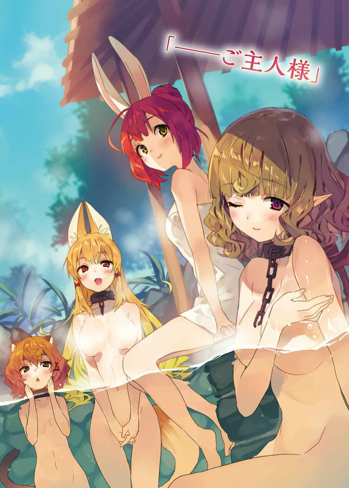
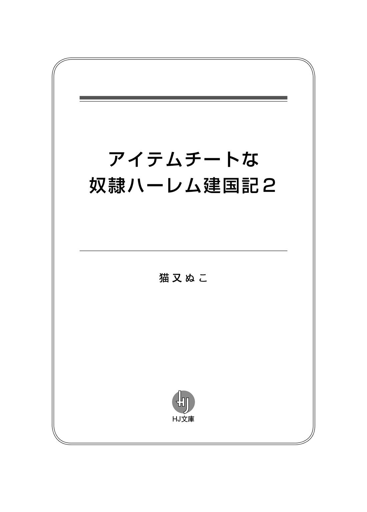
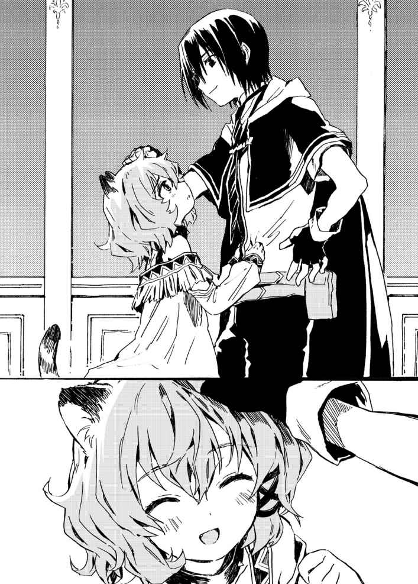

| アイテムチートな奴隷ハーレム建国記2 (HJ文庫) | |
| 猫又ぬこ | |
| (2016) | |


異世界アストラルにおける門派 とは人種、種族とは民族のようなものである。そして、アストラルには一〇〇を超 える種族がいるが――そのすべてが八大門派のいずれかに所属している。
なかでも獣牙門 は五〇近い種族が集まって構成された、アストラルでも最大規模の門派である。
いまでこそ獣牙門の人々は団結してほかの門派と争 っているが、ほんの五〇年前までは仲間内で縄 張 り争いを繰 り広 げていた。
なぜなら獣牙門に属する種族は自尊心が高く、『我 が種族こそ最強である』との矜 持 を捨てることができなかったのだ。
しかし遡 ること五〇年前、獣牙門に転機が訪 れた。
フィルスと名乗る人 狼 族 の男が神託遊戯 で争いを鎮 めていき――圧 倒 的 な力を目にした人々は彼 に従うようになった。フィルスこそが獣牙門最強だと認めざるを得なかったのだ。
かくして獣牙門の全権代理者 に就任したフィルスは、その後五〇年にわたって自治区 の発展と平和維 持 に貢 献 してきたのであった。
そんなフィルスが、先日落命した。
一〇〇年に一度起こるかどうかの、大災害。
大 嵐 のなか、崩 落 する瓦 礫 から女官を守り、獣牙門最強の男は人生に幕を下ろした。
魔札 を使えば安 全 圏 から女官を助けることができただろうが、一 瞬 の出来事だったため、思考する時間はなかったのだ。
女官が瓦礫に押 し潰 されそうになるのを目にした瞬間、身体 が勝手に動いた。本能的に、女官を守ったのである。
そんな強く優 しく勇ましい性格だったがゆえに、民はフィルスを慕 ったのだ。まさしく英 雄 と呼ぶに相応 しい人物の死に、民たちは大いに悲しんだ。
だが、絶望はしなかった。
なぜならフィルスには、スノウという娘 がいたのだ。
まだ一〇歳 と幼いながらも強く優しく勇ましい――特に神託遊戯の実力は獣牙門最強と謳 われたフィルスを凌 ぐほどであり、全権代理者になるために生まれてきたと言って過言ではないがゆえに、民はスノウに支配されることを心から歓 迎 した。
獣牙門はこの先も安 泰 だと喜び、明日に控 えた就任の儀 を心待ちにしていたのだ。
スノウの全権代理者生活が、始まる前に終わりを迎 えたとも知らずに――......
◆
「オレ様の勝ちだ！」
広間に雄 叫 びが響 き渡 る。
歓 喜 の声を上げたのは、狼 の風 貌 をした男であった。
とにかく背の高い男である。荒 々 しく逆立った体毛に鋭 い爪 牙 、ぎらついた目に強 靱 なしっぽが男のいかつさを引き立てている。
若かりし頃 のフィルスとうり二つだが、それもそのはず。
男は――フレイクは、フィルスの血 縁 者 なのだから。
もっとも似ているのは外見だけで、内面は似ても似つかないが。
「さァて、覚 悟 はできてんだろうなァ？」
フレイクは牙 を剥 き出 しにして嗤 い、神託遊戯の敗者を見下ろした。
敗者は、ふたりいた。
両者ともに、幼さの残る娘だ。
「こ、こんなの嘘 ですっ！」
そのうちのひとりが、悲鳴を上げた。
狐 のような耳としっぽを持つ、獣牙門の娘である。
美しい光 沢 を放つ金 髪 は激しい運動をしたあとのように乱れ、汗 ばんだ肌 に張りついている。明るい色をした瞳 は涙 でにじみ、幼さと妖 艶 さの共存する美 貌 は恐 怖 に歪 んでいた。
神託遊戯の敗者はいかに理 不 尽 な命令だろうと受け入れなければならないのだ。それを思えば、この反応は当たり前のものと言えた。
しかし娘は――シャロンは、これから我が身 に降りかかることを恐 れているのではない。
「スノウ様が負けるなんて、そんなのありえませんっ！」
シャロンは傍 らに立つ幼女――スノウを守るように抱 きしめ、抗 議 の声を飛ばす。
シャロンが恐れているのは、自分が奴 隷 にされることではない。スノウが奴隷にされることを恐れているのだ。
「スノウ様は獣牙門で一番強いんです！ あなたに負けるなんてありえないんです！」
「黙 れ！ てめえが泣こうが喚 こうが勝ったのはこのオレ様だ！ そうだろ審 判 ッ！」
フレイクは審判を睨 みつけた。
審判を務める精 霊 は、首 肯 する。
「はい。勝者はフレイク様です」
「っ......」
シャロンは悔 しげに唇 を噛 みしめた。
審判立ち会いのもと行われる神託遊戯に不正行 為 は許されない。
神託遊戯は二対二のチーム戦で行われた。
スノウにとって不利なルールではなかった。
フレイクにとって有利なルールでもなかった。
シャロンが足を引っ張ったというわけでもなく。
スノウの調子が悪かったというわけでもなかった。
だからこそ、シャロンは戸 惑 っているのだ。
不正行為がなく、公平すぎるほど公平だったからこそ、スノウの敗北が信じられないのである。
となると。
スノウが負けた要因は、一つしか考えられない。
「あなたは何者なんですかっ！」
シャロンは壁 際 を睨みつけた。
そこには――銀 髪 の娘が壁 に背を預けるようにして佇 んでいた。
シャロンより一つか二つ年下だろう、齢 一四ほどの小 柄 な娘だ。前 髪 は真 紅 の瞳を侵 略 するほど長く、漆 黒 の衣装に無骨なブーツを履 き、帽 子 と眼鏡 を身につけている。
外見に特 徴 らしい特徴はないし、とすると騎士門 だろう。
同族ですらゴミのように扱 うフレイクが、わけもなく異種族と手を組むとは思えない。
いったい彼 女 は何者なのか？
なぜフレイクと手を組んだのか？
そんな疑問をこめた眼 差 しを向けると――
女が、にこっと笑いかけてきた。
「――ッ!? 」
視線が交わった。
たったそれだけのことで、言いようのない不快感が押し寄 せてきた。まるで心のなかを見 透 かされているような気持ちの悪さを感じ、シャロンはたまらずに視線を逸 らす。その先には、フレイクの邪 悪 な笑 みが待っていた。
「さァて、てめえらはルールを二つ作った。てこたァ、オレ様はてめえらに二つの命令を下すことができるってわけだ」
だろ？ とフレイクは審判に視線を向ける。
はい、と審判は肯 定 した。
審判立ち会いのもと下される命令は、絶対遵 守 だ。シャロンに抗 う術 はない。むろん、スノウにもだ。
「まずはスノウ。てめえは今日からオレ様の奴隷だ！」
「ま、待ってください！ どうか命令は私だけにしてください！」
シャロンはスノウを強く抱きしめ、フレイクに懇 願 した。
シャロンにとって、スノウは自分の命より大切な存在だ。
スノウを守れるなら、命など惜 しくはない。
「オレ様に指図すんじゃねえ！ てめえもオレ様の奴隷だ――シャロン！」
この瞬間、シャロンはフレイクの所有物になった。
暴力行為が禁じられているこの世界で――しかし、奴隷はあらゆる権利を剥 奪 される。
黙れと言われれば黙るしかなく。
死ねと言われれば死ぬしかない。
シャロンの自由は、完全に奪 われてしまったのである。
「命令が受理されました。スノウ様ならびにシャロン様は、いまこの瞬間をもってして、フレイク様の奴隷となります」
審判が淡 々 とした口調で説明を終えた瞬間――
シャロンとスノウの首に、無骨な首輪が現れた。
首筋にひやりとした感 触 が走り、肩 にずっしりと重みがのしかかってくる。これからのことを思うと、シャロンは泣きそうになってきた。
「さァて、てめえらに命令だ。オレ様に魔導指輪 をよこせ！」
奴隷となった以上、主人には逆らえない。
逆らおうとしても、身体がそれを許さない。
スノウとシャロンは、それぞれシルバーとブロンズの指輪を差し出した。
指輪を受け取ったフレイクは、それらをぐっと握 りしめ、ぶるぶると震 える。
「やっとだ......やっとオレ様のものになった！ これでオレ様が獣牙門のボスだ！ もう誰 もオレ様には逆らえねえんだッ！」
全権代理者の座にはスノウがつくことになっていたが、こうなってしまっては実現することはないだろう。
獣牙門は、フレイクの手に堕 ちた。
これから先、獣牙門は衰 退 の一 途 をたどることになるだろう。
もっとも、奴隷となったシャロンは獣牙門の末路を見届けることなく死んでしまうかもしれないが。
「魔導指輪が手に入った以上、てめえらは用済みだ。さァて、どうしてやろうか」
「お、お願いします。どうか、どうかスノウ様だけは助けてください。私はどうなっても構いませんから......」
フレイクが、にやりと笑う。
「どうなっても構わない、か。ちょうどオレ様の手下どもが女に飢 えてるところだ。顔はガキだが――その身体なら、男を愉 しませることくらいできるよなァ？」
「......っ」
欲望のはけ口にされる自分の姿が脳 裏 をよぎり、シャロンは怖 くなって唇を噛みしめた。がくがくと膝 が震え、まともに立つことが難しくなる。
その反応に満足したのか、フレイクは前言を撤 回 する。
「だが、無能な手下どもにいい思いをさせるのは癪 だ。かといって、オレ様に奴隷を抱く趣 味 はねえ。となると、やっぱアレしかねえな」
フレイクが、下 卑 た笑みを浮 かべる。
いったいなにを命じられるのだろう。
シャロンは恐怖のあまり涙を流した。
でも、泣こうが喚こうが状 況 は改善しない。
シャロンは、奴隷なのだから。
幸せな生活は、もう二度と訪れないのだ。
あらゆる生物が死に絶えたことから『死の土地』と蔑 まれ、人々に見放された大地――クヌル平野に、その城は悠 然 と佇んでいた。
外装こそ古びているが、内装の絢 爛 さは健在だ。元々はとある女好きの権力者が美女を囲うために造ったものであるため、内装には特別力を入れているのだ。
どの部屋を見てもその当時流行 った絢爛な装 飾 を見ることができ、各地から集められた調度品はどれも一級品である。
なかでも特別豪 華 なのが、最上階の一室だ。
権力者の寝 室 として造られたこの部屋には天 蓋 付きベッドに煌 びやかなシャンデリア、シャワールームも併 設 され、防音設備も整っている。
けっきょく権力者は城の完成を見ることなく病死してしまったため、この城がハーレムとして利用されることはなかったが――
しかし最近になり、長らく無人城だったこの建物に美女が集まりだした。権力者の念願だったハーレムができつつあるのだ。
もっとも、城の主は権力者とは縁 もゆかりもない人物だが。
「まだ立派とは言えねえが、けっこう発展してきたじゃねえか。これなら荒 野 じゃなくて町と言っても否定する奴 はいねえだろ」
現在の城主――竜 胆 翔 真 は最上階にある寝室の窓から外の景色を眺 め、満足そうな顔をしていた。
年 齢 は一六歳。黒いマントを羽織り、革 製 のブーツを履いた少年だ。
アストラルでは珍 しい黒い髪 に黒い瞳を持つ翔真は――実のところ、この世界の生まれではない。
つい先月まで、地球の日本という国で高校生としてありふれた人生を送っていたが――アストラルを統治する最高神に召 喚 され、異世界ライフを送ることになったのだった。
「ここまで発展できたのも、すべて翔真のおかげじゃよ」
翔真の頭上から綺 麗 な声が降 ってきた。
見上げると、信じられないほど美しい娘がふわふわと宙に浮かび、しみじみとした顔で窓の向こうを眺めていた。
透 き通 るような銀髪は日の光を受けて煌びやかに輝 き、雪のような白い肌とあわさって神秘的に感じられる。
あどけない顔立ちをしているものの体つきは成熟しており、露 出 の激しい衣装を纏 っているため、大きく膨 らんだ胸やなめらかな太ももは、そのほとんどがさらけ出されている。
彼女こそ翔真をアストラルに召喚した張本人にして、この世界の最高神を務める女――アイリスだ。
もっとも、いまのアイリスに最高神としての力はなく、翔真がいないと生きていけない身体になっているのだが。
そんな境 遇 とは思えないほど、アイリスは幸せオーラ全開であった。
「俺 のおかげってわけじゃねえよ。俺はただ、必要なものを与 えただけだからな。実際に頑 張 ってるのはあいつらだ」
あいつら、というのは窓の向こうでせっせと働いている人々のことである。
クヌル平野は先月まで『死の土地』と呼ばれていた――ゼロから町を造るのも困難だが、クヌル平野の開 拓 はゼロどころかマイナスからのスタートだった。
なにせ赤茶けた大地には草木がなく――微 生 物 が死に絶えた土地であるため作物が育つ環 境 ではなかったのだ。
そんな土地を高額で買い取った翔真は――まず死んだ土地を蘇 らせた。
次に、行き場のない人々を呼びこんだ。
そして、町造りに必要な道具を与えた。
翔真がやったことといえば、それくらいのものである。
民に頼 まれれば町造りに口出しするが――基本的には関 与 しない方針だった。
面 倒 だからではない。
アイリスの夢を――あらゆる種族が仲良く暮らせる世界を創 りたいという願いを叶 えるため、あえて関 わるまいとしているのだ。
――協力してなにかを成 し遂 げれば仲良くなれる。
そしてその『なにか』に、翔真は『町造り』を選んだ。その選 択 が功を奏し、いまではクヌル平野に住まう人々は信 頼 関係を構築している様子だ。
「そなたがきっかけを与えてくれたから、この町の者たちは種族間の垣 根 を越 えて仲良くなれたのじゃ。ほんと、ここから見える景色は絶景じゃよ」
アイリスは紅 い瞳を潤 ませて、感 慨 深 そうに窓の向こうを眺め続ける。
クヌル平野は広大だが――アストラルのほんの一部に過ぎない。
町ひとつでこんなに喜んでくれたのだ。アストラル全土を改革することができたら――アイリスは、どれだけ喜んでくれるだろうか。どんな笑 顔 を見せてくれるだろうか。
それを思うと、自然と口元に笑みが浮かぶ。
「夫として、可愛 い嫁 を喜ばせるのはあたりまえのことだろ？」
それに翔真はアイリスに感謝しているのだ。なにせアストラルは魔札 と呼ばれる魔 法 の効果が組みこまれたカードを使った決 闘 ――神託遊戯 ですべてが決まる世界なのだから。
神託遊戯の勝者は敗者に命令を聞かせることができる。つまりカードゲームであらゆるものを手に入れることができるのだ。
三度の飯よりカードゲームが好きな翔真にとって、この世界は楽園なのである。そんな素 晴 らしい世界に召喚してくれたアイリスに恩返しがしたいと考えるのは、あたりまえのことなのだ。
「翔真は優しいのぅ。そなたと結 婚 できて、わしは幸せじゃよ」
アイリスが愛 おしそうに翔真を見つめ、感謝の言葉を口にすると――
「私もご主人様にお会いできて、本当に幸せです」
翔真のそばに控えていた首輪をつけた娘が、静かな口調で語りかけてきた。
儚 げな印象の娘だ。歳 はせいぜい一五、六。やわらかそうなウェーブがかった金髪に、優しげに垂れた瞳。か弱そうな身体をしているものの、胸だけはしっかりと膨らんでいた。
先 端 の尖 った長い耳とコウモリのような翼 は、見る者によっては嫌 悪 感 をあらわにするだろうが――翔真はそんな特徴も気に入っている。
「俺のほうこそ、ルメリアみたいな美女と出会えて嬉 しいぜ」
「ご主人様......」
ルメリアは感 極 まったように瞳を潤ませる。
「ご主人様は、こんな私に優しくしてくださいました。ご主人様がいない人生なんて......考えたくもありません。ご主人様の奴隷として一 生 懸 命 ご奉 仕 させていただきますので、どうか生 涯 ......おそばにいさせてください」
ルメリアは混血種 だ。森棲門 と飛翼門 の特徴を併 せ持 っているためどの門派 にも属せず、奴隷として虐 げられ、忌 み嫌 われてきた。
そんな生 い立 ちゆえに、ルメリアは優しく接してくれた翔真を慕い――心からの忠誠を誓 っているのだ。
まあ翔真はやりたいことをやりたいようにやっている――自由気ままに振 る舞 っているだけなので、ここまで慕われることに違 和 感 を持っているのだが。
かといって女の子に慕われて嬉しくないわけがないし――だからというわけでもないが、翔真はこれからもやりたい放題な異世界ライフを満 喫 することにしていた。
「んじゃ、一 緒 に飯にでも行くか」
そろそろ昼飯時である。
翔真の魔導指輪 には一生かけても食べきれないほどの食料魔札が保管されているため、食事をしようと思えばいつでもどこでもできるのだが――しかし、今日は外出していない。
朝起きて、窓の向こうを眺めている女 神 としゃべっている間に昼飯時になっていたのだ。日光浴と運動をかねて、昼食は町で食べるとしよう。
そうと決めた翔真はふたりをつれて寝室をあとにする――
ぱぁぁっ。
ドアを閉めようとしたところ、ふいに室内の明るさが増した。部屋を覗 くと、ベッドのとなりに光 り輝く穴ができていた。そしてそこから、
「翔真殿 はいるかっ！」
まじめそうな娘が飛び出してきた。
歳の頃は翔真と同い年か、一つ年上といったところか。きりっとした顔つきに、意志の強そうな瞳。大きな膨らみを帯びた乳 房 は胸当てに守られ、ほっそりとした手足は白銀のアーマーに覆 われている。
騎士門 を束ねる全権代理者 にして翔真の嫁の、彼女はミスト・サージェントである。
先日の神託遊戯で翔真の嫁になってからというもの、彼女は『一日以上滞 在 したことがある場所へと続くゲートを生み出す』効果の魔札――〈想い出の地へと続く扉 〉を使用し、頻 繁 に翔真の寝室を訪れているのだった。
さながら通い妻である。
とはいえ本当にただ通っているだけで、特になにかをしているわけではない。
なにせミストはまじめで堅 物 なのだ。〈想い出の地へと続く扉〉を使わせるため、この寝室に一日滞在させたときなど、ベッドに座 るどころか直視すらできない有様だったのだ。
そのためミストは翔真の嫁になりこそしたが、口づけはおろか、手すらつないだことがないのであった。
「おぅ、ここにいるぜ」
ドアのところで手を振ってやると、不安そうに部屋を見まわしていたミストはハッとした顔で振り向 いてきた。
「そ、そこにいたかっ！ よかった......出かけたのかと思ったぞ！」
翔真を見つけた途 端 、きりっとした顔はふにゃっとなり、頬 がじんわり赤く染まった。それから翔真のもとへ歩み寄ると、太もものあたりで手をもじもじさせる。
「じ、実は......翔真殿に会いに来たのだっ」
「だろうな」
翔真の寝室に来たということは、翔真に会いに来たということだ。
「ほ、ほんとは今日はやめておくつもりだったのだが......翔真殿のことを考えると、胸がぎゅーって苦しくなって、身体が火 照 って......公務に集中できなくなってしまったのだ」
ミストは恥 ずかしそうにそう語り、自 虐 的 に笑う。
「公務を放 り出して殿 方 の寝室を訪れる全権代理者など、前 代 未 聞 であろうな。まったく、なんて破 廉 恥 なのだろう......。こんな私を見て、民はなんと言うだろうか？」
「可愛いって言うんじゃねえか」
「そ、そんなことを言ってくれるのは翔真殿だけなのだ......ま、まったくもう、翔真殿は私に負 けず劣 らず破廉恥なのだな......。で、でも、お互 いに破廉恥でもいいから、もっと一緒にいたいのだ......」
「んじゃ、飯でも食いに行こうぜ」
「行くっ。行きたいのだっ！」
ミストは、ぱあっと顔を明るくさせた。
が、すぐに不安げな顔をする。
「も、もちろん邪 魔 になりそうなら帰るが......」
きっとミストはアイリスに遠 慮 しているのだろう。アイリスはことあるごとに、正妻は自分だとミストを牽 制 しているのだ。
「邪魔どころか、一緒に暮らしたいくらいだぜ」
ミストは再び顔を明るくした。これ以上ないくらいの、満面の笑みである。
「う、うむっ！ 一緒に暮らすのはまだ無理だが、そう言ってもらえるとすごく嬉しいのだっ！」
幸せそうなミストに、今度はアイリスが不安げな顔をした。
「わしが正妻じゃぞ？」
アイリスはミストの顔を覗きこみ、いつものように牽制する。
だが、幸せそうに「ま、まあ我らは夫 婦 なわけだし、いずれは一緒に住むことになるのだろうが、そのためにはいろいろと準備しなくちゃいけないのだ」などとつぶやいているミストの耳には届いていない様子だ。
とはいえアイリスだって本気でミストを嫁の座から転落させようと思っているわけではないはずだ。
なにせミストを嫁にするのは、アイリスの夢を叶えるために必要なことなのだから。
差別のない世界を創るため八大門派と同盟を結ぶことにした翔真は――同盟関係をより強固なものにするため、その門派の有力者と結婚することにした。
そこで翔真は騎士門の全権代理者であるミストと結婚したのだった。
もちろん『ミストが可愛いから』というのが結婚した最大の理由だし、結婚した以上はミストを幸せにするつもりだ。
「早く行こうぜ。好きなものを食べていいからな」
さしあたっては、美味 しい食事をご馳 走 してミストを喜ばせてやろう。
そうして翔真はアイリス、ルメリア、ミストをつれて、行きつけの食 事 処 へと向かうのだった。
◆
「いらっしゃい翔真くんっ！ アイリスさんたちもいらっしゃい！」
食事処〈うさぎ亭 〉を訪れた翔真は、愛くるしい顔立ちのバニーガールに出 迎 えられた。
ぱっちりとした瞳が印象的な、童顔の女の子だ。赤い髪はポニーテールにまとめられ、メリハリの利 いた身体は肩 口 が大 胆 に露出されたエプロンドレスに包まれている。頭には長い耳がぴょこんと生え、おしりにはまるいしっぽが確 認 できた。
この店の看 板 娘 であるカンナは、獣 のような特徴を持つ種族――獣牙門 なのだ。
とはいえ種族的には獣牙門に属するが、カンナは異種族への差別意識を持っていない。料理の腕 前 もさることながら、そんな優しい人 柄 を気に入り、翔真は毎日のようにここへ足を運んでいるのだ。
「今日も飯を食いに来たぜ」
翔真が親しげに話しかけると、カンナは嬉しそうにうさ耳をぴこぴこさせた。
「うんっ。来てくれてすごく嬉しいよ。いま席に案内するねっ」
カンナに案内され、翔真は窓 際 の席に腰 かける。その向かいにミストとルメリアが座り、アイリスは翔真のとなりに陣 取 った。彼女は幽 体 なので椅 子 をすり抜 けてしまっているが、翔真のとなりに位置取れて満足そうにしている。
と、カンナは翔真にメニュー表を渡す。
「注文が決まったら呼んでねっ」
「もう決まってるぜ」
「早すぎじゃろ」
アイリスのツッコミに応 えず、翔真はメニュー表をミストに渡す。それからカンナに、
「次の休 憩 はいつだ？」
とたずねた。
「ええっと......」
カンナは店内を見まわす。食事時ということもあって、席はほとんど埋 まっていた――様々な種族が相席し、私生活や仕事の話に花を咲 かせている。
「あと二時間は休めそうにないかな」
カンナはこの店の看板娘であり、ウエイターであり、コックでもある。店の主力として働いている彼女が忙 しい時間帯に休憩するのは難しいだろう。
「どうして？」
「ちょっとカンナに聞きたいことがあってな」
「聞きたいこと？」
興味深げに繰り返 すカンナに、翔真はうなずく。
「ま、休憩時間になったら話すよ」
「わかった。じゃあまたあとでねっ」
にこにこ笑ってそう言うと、カンナは厨 房 に入っていった。
「して、聞きたいこととはなんなのじゃ？ まさか『俺と結婚できるとしたら、する？』とかではないじゃろうな？」
アイリスが不安そうに聞いてきた。ミストは真 剣 な眼差しをメニュー表に向けており、ルメリアはじぃっと翔真を見つめていた。
翔真は苦 笑 する。
「そんなんじゃねえよ」
確かに月一ペースで結婚しているが、手 当 たり次 第 に求 婚 しているわけではないのだ。
「ではなにを聞くつもりなのじゃ？」
「そろそろＳＳＳランク魔札集めを再開しようと思ってな。情報を集めることにしたってわけだ」
アイリスの身体を元通りにするには〈神の間〉へと赴 く必要がある。そこへ行くには、一〇〇五〇種ある魔札をコンプリートしなければならないのだ。
翔真はすでに一〇〇〇一種の魔札を集めている。残り四九枚でコンプリート達成だ。
それだけ聞けば楽に思われるかもしれないが、残りの四九枚はすべてＳＳＳランク魔札。世界に一枚しかない、とんでもなく貴重なしろものなのだ。
それゆえＳＳＳランク魔札を持っているのは有力者に限られる、と翔真は推測している。有力者に関する情報は追々集めるが――アイリスの妹であるティナいわく、ＳＳＳランク魔札は八大門派に散らばっているらしい。
そのうちの一つである騎士門の魔札はミストとの神託遊戯で回収に成功したため、次の標的を決めることにしたのだ。
「じゃが、ミストとの神託遊戯から二週間しか経 っておらぬではないか。しかもその間、そなたはほとんど寝 ておらぬじゃろ」
「忙しかったしな」
先日の大 嵐 によって町は壊 滅 的 な打 撃 を受けた――建設中の建物は半 壊 あるいは全 壊 し、大雨で畑は水 没 し、怪 我 人 も続出した。幸いなことに死者こそ出なかったが、すぐに復興作業を始められるような状況ではなかったのだ。
そこで翔真は徹 夜 で怪我人の治 療 を済ませると、民に必要なものはないか聞いてまわり、そのすべてを用意したのだ。
そうして民は復興作業に取りかかり、町は嵐が起きる前の状態へと戻 ったのだった。
「そなたが倒 れたらみんなが困るし......それに、わしはこんな身体じゃから看病はできぬ。じゃから、もうちょっとのんびりしてもいいと思うのじゃが......」
アイリスは翔真の身体を気 遣 ってくれているらしい。
不安そうにしているアイリスに、翔真は笑みを向ける。
「早いところ魔札をコンプリートして、アイリスを抱きしめてやりたいからな」
深刻そうな顔つきをしていたアイリスは一瞬きょとんとしたあと、じわじわと頬を朱 に染めていく。
「そ、そういう台詞 はふたりきりのときにじゃなぁ......」
アイリスは嬉しそうに口元をにやつかせている。不安は吹 き飛 んでしまった様子だ。
「カンナ殿 に質問するということは――翔真殿の狙 いは獣牙門なのだな？」
注文を決めたのか、ミストがまじめなトーンで会話に加わる。メニュー表はルメリアの手に渡っているが、彼女の視線は翔真に釘 付 けだ。
ルメリアはいつも翔真と同じ品を頼むので、メニュー表を見る必要がないのだ。
「ああ。次の標的は獣牙門だ」
カンナが作る獣牙門の郷土料理は美味しい。獣牙門自治区 と同盟を結ぶことができれば、翔真は好きなときに本場の味を楽しめるのだ。
「すごい理由で決めるのじゃな」
一応理由を話しておくと、アイリスは驚 いたようなあきれたような、複雑な表情をして言った。
「どうせすべての自治区に勝負を挑 むんだ。順番なんてどうでもいいだろ？ 理由があるだけマシだ」
とはいえ世界を見通す〈千里眼 〉をもってしても、聖神門 の自治区だけは見つけることができなかったので、そこの全権代理者と神託遊戯をするのは最後になるだろうが。
「じゃが、カンナがＳＳＳランク魔札のありかを知っておるじゃろうか？」
「知らないだろうな。けど、そもそも魔札のありかは聞くまでもないことだしな」
「所有者に見当がついておるのか？」
翔真はうなずく。
「獣牙門に何枚あるかは知らねえが、一枚は有力者中の有力者――全権代理者が持ってるはずだ。てなわけで、カンナから全権代理者の情報を聞き出すことにしたってわけさ」
と、翔真が説明を終えたときだった。
「あの......もしかして神託遊戯をなさるのですか？」
となりの席に座っていた、鷹 のような目を持つ飛翼門の男が、こわごわとたずねてきたのだ。見ると、いつの間にか客たちの視線は翔真に集まっていた。
全権代理者は自治区の運命を担 っているのだ。翔真が負ければ、クヌル平野の民 たちは路頭に迷うことになる。
クヌル平野の人々のうち何割かは奴 隷 だった過去を持っている。魔札を奪われ、権利を奪われ、自由を奪われていた彼 らにとって、ここはまさに楽園だ。この地を追放されればほかに行き場などないだろうし、不安になるのもしかたのないことなのだ。
「心配すんな。相手が誰だろうと、俺はぜったいに負けないからな。お前らの生活は俺が保証するぜ」
その一言で、客たちの顔から不安の色が引いていった。彼らは翔真を信じているのだ。
民の信頼に応えるためにも、確実に全権代理者を倒さなければ。そしてそのためにも、まずは情報を集めなければ。
「で、注文は決まったのか？」
いろいろと考えるのは腹ごしらえをしてからにしよう。ミストらがうなずいたのを見て、翔真はカンナを呼ぶのであった。
◆
「お待たせ～」
食事を終えて一時間ほどした頃 ――。アイリスと雑談していた翔真のもとへ、カンナが駆 け寄ってきた。
「仕事はもういいのか？」
忙しさのピークは過ぎたようだが、席は八割ほど埋まっている。まだ仕事は残っているだろうし、べつに閉店時間まで待っても構わないのだが。
「あとはお父さんたちがなんとかしてくれるって」
「そっか。なら安心だな」
ひと月ほど前まで、カンナの両親は騎士門自治区で奴隷生活を送っていた――カンナは店を守るため身を粉にして働いていたが、いまは両親がそばにいるため安心して休めるのだろう。
「んじゃ、遠慮なく話をさせてもらうぜ。まあ座ってくれ」
ミストは「そろそろ公務に戻らねばならないのだ」と言い残して自治区へ帰ったため、翔真の向かいは空いていた。
翔真が座るように促 すと、カンナは探 りを入れるような視線を向けてくる。
「それって、大事な話だったりするのかな？」
「ああ。大事な話だ」
「それなら、もうちょっと静かなところで話さない？ ちょうど休 憩 室 が空いてるから、よかったら案内するよ」
「んじゃ、そうするか」
カンナにつれられ、翔真たちは厨 房 奥 の休憩室に通された。椅子とテーブルが置かれた小さな個室だ。カンナの言う通り、休憩室には誰もいなかった。ここなら落ち着いて話ができそうだ。
「まず確認させてもらうが――カンナの出身はどこだ？」
翔真はそう話を切り出 した。
彼女と出会ったのは中立地帯――精 霊 の管 轄 区 なのだ。カンナは中立地帯の生まれで、獣牙門自治区を訪 れたことがないかもしれない。そうなると獣牙門の全権代理者に関する情報など持っていないだろう。
「出身はネリウムっていう、獣牙門自治区の首都だよ」
理想的な答えだった。首都の生まれなら全権代理者についても詳 しいはずだ。
「ネリウムには何 歳 の頃までいたんだ？」
「五年前......一一歳の頃までいたよ。そのあと翔真くんと出会った町に引 っ越したの」
カンナと同じく、両親もまた異種族への差別意識を持っていなかった。そればかりか、アイリスと同じように異種族同士が仲良くできる世界を望んでいたらしい。
みんなで一緒に食事をすれば仲良くなれると考えたカンナの両親は、精霊の管轄区たる中立地帯へと引っ越すことに決めたのだ。
最初は獣牙門しか寄りつかなかったらしいが、しだいに異種族の客足も増え始めた。が、異種族が訪れるようになったことで気分を害した獣牙門は店を離 れ、店に嫌 がらせをするようになったのだ。
その結果として店は経営難に陥 り――
『オレ様が金を貸してやろうか？』
グズマに出資の話を持ちかけられたのをきっかけに、悪夢が幕を開けたのだった。
「翔真くんがいなかったら、いまごろあたしたち家族はみんな奴隷にされちゃってたよ。ほんと......翔真くんはあたしの救世主様だよ」
頬を赤らめ、熱っぽい視線を向けてくるカンナに、翔真は笑みを向ける。
「気にすんな。困ってる奴を助けるのはあたりまえのことだろ？」
そう言って、本題に入る。
「で、獣牙門の全権代理者ってのは誰だ？」
「フィルス様だよ」
カンナは即 答 した。
「どんな奴なんだ？」
「ええっと......」
カンナは曖 昧 な記 憶 を辿 るように目線を上げた。ややあって、ぽつりぽつりとつぶやき始める。
「おじいちゃんくらいの年齢で、神託遊戯では負けたことがないって聞いたことがあるよ。町のひとたちはみんなフィルス様のことが大好きで、誕生日はみんなでお祝いしてたかな。あと、おばあちゃんが、フィルス様が全権代理者になってから自治区は豊かになったって話してた気がする......かな」
「なるほどね」
フィルスは民に愛されているらしい。となると獣牙門の人々はフィルスの力になるため、あるいはフィルスに恩を売るために――高ランクの魔札を献 上 しようと考えるだろう。
神託遊戯において負けなしということは、高ランク魔札を奪われることなく持ち続けているということになる。そのなかに、きっとＳＳＳランク魔札も含 まれているはずだ。
問題は、フィルスが存命かどうかだ。
五年前で高 齢 なら、いま生きているかどうか――生きていたとして、神託遊戯ができる体調かどうか、わからない。もしかすると、この五年のあいだに全権代理者の座をほかの誰かに譲 っているかもしれない。
「全権代理者の候補って、決まってたりするのか？」
自治区の代表が突 然 死 すれば民は不安に駆られるだろうし、後 継 者 争いで荒 れるだろう。ミストくらい若ければ後継者不在でもおかしくないが、高齢ならば決めているのが自然だ。
その際、新たな全権代理者として民に歓 迎 されるように、あらかじめ紹 介 くらいはするはずだ。
フィルスが認めた後継者なら、民もきっと受け入れるだろう。
「決まってるけど......いまはどうなってるのかな？」
「どうって、なにがだ？」
「フィルス様にはなかなか子どもができなくて......はじめはフィルス様の亡 くなった弟の息子 ――フィルス様の唯 一 の血 縁 者 だったフレイクが跡 取 りになるはずだったの。だけど、あたしが五歳くらいの頃かな？ フィルス様と奥 様 のあいだに、スノウ様が生まれたの。だから、正式な跡取りはスノウ様に決まったんじゃないかな？」
立派に育つかどうかわからないため、生まれたばかりの子どもを後継者に任命するのは気が引けたのだろう。
カンナが獣牙門自治区に滞在していた頃はフレイクが跡取りということになっていたが......カンナはスノウのほうが後継者に相応 しいと思っているらしい。
「ところで、なんでフレイクだけ呼び捨てなんだ？」
ちょっと気になったのでたずねてみると、カンナは眉 をひそめた。
「尊敬できるひとじゃなかったの。後継者になるって決まってからはますます性格が酷 くなって......グズマみたいなひとって言えばわかるかな？」
グズマというのは精霊の管轄区で幅 を利かせていたチンピラの親分だ。一 般 人 にしては多い八〇〇種という魔札を持っていたことから気が大きくなったのだろう、弱者を蔑み、金品を脅 し取 ることをなんとも思わないような男であった。
「ああ、超 わかりやすい説明だ」
グズマのような男を尊敬することはできないし、そんな人物が全権代理者になるなんて自治区民にとっては悪夢以外の何物でもない。
そんな理由から、カンナはスノウのほうが全権代理者に相応しいと思ったのだろうし、獣牙門の人々も同じことを考えたはずだ。その思いはフィルスに届いているだろうし――ゆえに後継者はスノウになっているはずである。
もっとも、この数年でスノウがフレイク以上の悪女になっている可能性もあるし、逆にフレイクが改心している可能性もあるが。
それでも、後継者は事前に決めているはずだ。
「ありがとな。助かったよ」
翔真が礼を告げると、カンナは嬉しそうにはにかむのであった。
◆
食事処〈うさぎ亭〉をあとにした翔真は、ひとまず居城へと戻ってきた。
椅子に腰かけると、アイリスが話しかけてくる。
「して、どうするのじゃ？」
「これから獣牙門の自治区に乗りこむぜ」
アイリスはぽかんと口を開けた。
「あいかわらず行動力の塊 じゃのぅ......」
「言っただろ？ 早くアイリスを抱 きしめたいって」
アイリスの頬が朱に染まる。
「ま、まあ、わしだって早くそなたに抱きしめてほしいのじゃが......」
嬉しそうにニヤニヤしていたアイリスはルメリアに見られていることに気づいたのか、誤 魔 化 すように咳 払 いした。
「こ、ここにはほかにも獣牙門が暮らしておるのじゃ。最近の獣牙門事情を知る者もおるじゃろうし、もうちょっと情報収集してからでも遅 くはないと思うぞ」
「つっても、欲 しい情報は手に入ったしな」
フィルスはカリスマ的な人気を誇 っていたらしいし、獣牙門にあるＳＳＳランク魔札をすべて所有していてもおかしくはない。
ミストがそうだったように全権代理者の魔導指輪は代々受 け継 がれるものなのだろうし、フレイクとスノウのどちらが後継者になったのかはわからないが――新たな全権代理者に魔導指輪が受け継がれているのであれば問題はない。
もちろん、翔真は三度の飯よりカードゲームが大好きだし――相手が強ければ強いほど嬉しいので、フィルスが全権代理者のままいてくれているのが理想なのだが。
さておき。
「あとは獣牙門の自治区に乗りこんで、全権代理者に神託遊戯を挑むだけだ。ま、素 直 に勝負を受け入れるかどうかはわかんねえけどな」
全権代理者の敗北は、自治区の衰 退 に直結する。圧 倒 的 な力を持つフィルスとて、神託遊戯には慎 重 になるだろう。
となれば、ミストのときと同じようにフィルスが神託遊戯に応じたくなる――あるいは、応じざるを得なくなる状 況 を作るしかない。
そのためにもフィルスがなにに興味を持っているのか、なにを欲 しているのか、なにを避 けたがっているのか、なにを脅 威 に感じているのか――実際に獣牙門の自治区に赴き、調査する必要があるのだ。
「ついでにほかの有力者の情報も集めるからな。フィルス以外の奴 がＳＳＳランク魔札を持ってる可能性も捨てきれねえしさ」
「それはいいのじゃが、ひとつ問題があるのじゃ」
「問題ってのは？」
「わしとそなたの見た目は騎士門じゃからな。獣牙門に行けば絡 まれるか無視されるかのどちらかじゃろう」
つまり情報収集しようにも教えてくれる者がいない――あるいはガセネタを掴 まされるかもしれない、というわけだ。
「まあ、絡んできた連中と片 っ端 から神託遊戯すれば情報を集めることはできるのじゃが......」
翔真の魔導指輪は金色だ。絡みつつも負けを悟 って神託遊戯は受け入れないだろう。が、なかにはグズマのように一 攫 千 金 のチャンスだと考える者もいるはずだ。それに〈擬態 〉を使えば魔導指輪をブロンズに見せかけることもできる。
しかし、それでは時間がかかりすぎる。
なにより、翔真は誰 かに罵倒されるアイリスなど見たくなかった。
「つまるところ獣牙門っぽい見た目になれば問題解決ってわけだ」
アイリスは小首をかしげる。
「獣牙門っぽい見た目......ああ、なるほどのぅ。そなたは〈擬態〉を使うつもりなのじゃな？」
「そういうこった」
〈擬態〉は『あるものをべつのものに変身させる』効果の魔札だ。
グズマのように詐 欺 に使う者もいるが、〈看破 〉を使えば効果を打ち消せる。そのため契 約 書 を交 わす際などには必ずと言っていいほど〈看破〉が使われるが――町を歩いているだけの翔真に使う者はさすがにいないだろう。
翔真はさっそく〈擬態〉の魔札を具現化させ、アイリスを見上げた。
「アイリスは、なりたい姿とかあるか？」
獣牙門と一口に言っても、グズマのような獣ベースの者もいるし、カンナのような人間ベースの者もいる。目的は獣牙門になりすますことなので獣型だろうが人型だろうが問題ないが、一応希望を聞いておくことにした。
「カンナみたいになりたいのぅ。だってそなたはああいうのが好きなのじゃろ？」
「否定はしないぜ」
そうして翔真が〈擬態〉を詠 唱 した瞬 間 、アイリスの頭とおしりが真 紅 の光に包まれた。光が弱まるにつれ、長い耳と丸いしっぽがあらわになっていく。
「......ふむ」
アイリスは長い耳を揉 むように触 ったあと、身体 を捻 っておしりのしっぽを確かめる。
「ふむふむ。......うぅむ」
「どうした？」
唸 っているアイリスに、翔真はたずねる。
「なんだか落ち着かぬ......。おしりがそわそわするのじゃ」
「けど、似合ってるぜ」
「そ、そうじゃろうか？ ......いつものわしと、どっちが好みじゃ？」
「そんなもん、いつものアイリスに決まってるだろ」
「そ、そうか、そうか。ま、まあそなたならそう言うと思っておったがな！ しばらくはこの姿で我 慢 してほしいのじゃ。目的を果たしたら、すぐにいつものわしに――そなたが大好きなわしに戻るからのぅ！」
アイリスは、嬉しそうに耳をぴくぴく動かしている。本物にしか見えないし、これなら怪 しまれることはないだろう。
翔真は自分にも魔札を使い、アイリスとおそろいの姿になる。
「ペアじゃなっ」
アイリスはますます嬉しそうにしている。翔真は微 笑 して、
「さて、準備は整ったな」
「ルメリアはつれていかぬのか？」
その言葉に、ルメリアがぴくっと形のいい眉を動かす。そわそわと落ち着かない様子で、翔真のことをじっと見つめる。
「ルメリアには留守番を任せるぜ」
しゅんと眉 尻 を下げるルメリア。悲しんでいるというより、寂 しがっているように見える。翔真の旅路に同 伴 したいのだろう。
「言わなくてもわかると思うが、ルメリアと一緒にいたくないわけじゃないからな。ただ、神託遊戯することになるかもしれねえからな。俺 たちがバトルフィールドにいるあいだ、ルメリアをひとりきりにさせたくないんだ」
わかってくれるな？ と翔真はルメリアを見つめる。
ルメリアは、じんわりと瞳 に涙 を浮 かべた。
「ご主人様は、私のことを心配してくださっているのですね......」
「あたりまえだろ。心配してるから、わざわざ城まで戻ってきたんじゃねえか」
「ご主人様......わざわざ私をこのお城まで送り届けてくださったのですか？」
「そうだ。わざわざっていうか......ルメリアとできるだけ長い時間一緒にいたかっただけだがな」
ルメリアはついに涙を流した。
「私はご主人様にお会いできて、本当に幸せです......」
「俺もだ。ま、日が暮れる頃には帰るからな。それまでのんびりしててくれ」
翔真はそう告げると〈千里眼〉を発動させた。世界を見通す瞳をもってして、獣牙門で最も賑 わっている町――首都ネリウムを探す。
「獣牙門自治区はどっちだ？」
「あっちじゃ」
アイリスが指した方向を見た翔真は――
「......ん？」
怪 訝 な顔をした。
「どうしたのじゃ？」
「いや......まあ、行ってみりゃわかるだろ」
「気になるのぅ」
「すぐにわかるさ。なにせ移動は一 瞬 だしな。んじゃ、留守番よろしくな」
「はい。行ってらっしゃいませ、ご主人様、アイリス様」
ルメリアに見送られ、翔真は〈瞬間移動 〉でネリウムへ向かうのだった。
◆
翔真が獣牙門自治区の首都ネリウムへと向かう一〇日前――。
シャロンは丸太のような腕 に腰を抱かれ、宙ぶらりんになっていた。縄 で手足を縛 られ、厚手の布で目 隠 しをされ、口 枷 でしゃべるのを封 じられているため、担 ぎ手 の正体を知る術 はないが――声の数からして、実行犯がふたりの男であることはわかっている。しかも、そのうちのひとりはフレイクだ。
あのあと――フレイクの奴隷になったあと、シャロンとスノウは三日の監 禁 生活を経 て、自治区外への追放を言 い渡 された。
つまるところ、いまは追放の真っ最中というわけだ。
神託遊戯終 了 後 すぐに追放しなかったのは、シャロンとスノウを精神的に追いこむためだろう。ふたりに惨 めさを味わわせ、絶望感に浸 らせ、涙と鼻水で顔を歪 めながら許しを乞 う姿を期待したに違 いない。フレイクは侮 辱 陵 辱 恥 辱 が大好きな男なのだから。
そんな男が表立ってスノウを追放しようものなら民は間 違 いなく反乱を起こす。
それを避けるためフレイクは秘 密 裏 に追放することにした――〈飛 翔 〉で空路を使い、ふたりを遠くに捨てることにしたのだ。
ふたりに自殺を命じなかったのは死体が見つかるのを恐 れたからか、せめてもの情けか、あるいは殺す覚 悟 がなかっただけか――
なんにせよ、シャロンはフレイクの悪行を許さない。
「ここまで来れば二度と生きては戻れねえだろ。おい、こいつらを下ろせ！」
フレイクが指示した途 端 、ふわっと内臓が浮くような感覚に襲 われる。そして、どんっ、と全身に衝 撃 が走った。着地した担ぎ手が、シャロンを地面に落としたのだろう。
「むぐっ!? むぐぐ！」
「......むぐぅ」
スノウの無事を確かめるべく声を上げると、弱々しい反応が返ってきた。
シャロンは胸を撫 で下 ろす。
それと同時に、怒 りがこみ上げてきた。
全権代理者になる予定だったとはいえ、スノウはまだ一〇歳だ。
そんな娘 にこの扱 いはあまりに酷い。
いつか必ず復 讐 してやる。
「フレイク様。この女もここに捨てていくのですか？」
復讐心を滾 らせていると、真上から野太い声が降 ってきた。どこかで聞いたことのある声だが......はっきりとは思い出せない。
「なにが言いたい？」
と、フレイクの苛 立 たしげな声が聞こえる。目隠しをされているシャロンでさえ、彼が機 嫌 を損 ねたことに気づいたのだ。担ぎ手は自分の発言がフレイクの怒りを買ったことに気づいたようで、すぐさま謝罪の言葉を口にした。
「も、申し訳ありません。ですが、その......」
担ぎ手が口ごもる。
そのとき、シャロンはいやらしい視線を肌 に感じた。
胸や太ももに舐 めるような視線を感じ、ぞっとする。
「こ、この女は、フレイク様に刃 向 かっていますし......せっかく奴隷にしたのですから、辱 めてはどうかと思いまして......」
担ぎ手はシャロンに淫 らな行 為 をしようと思っているのだ。しかし奴隷を自由にできるのは主人だけである。フレイクの許可さえあればシャロンになにをしても許されるが......手 荒 な扱いは許されていても、淫らな行為までは許されていないらしい。
「てめえはオレ様の奴隷を犯 そうってのか？」
「そ、そういう意味では......た、ただスノウはともかく、この女は売ればそれなりの値がつくと思いまして......」
チッ、と舌打ちが響 く。
「馬 鹿 かてめえは。スノウとの神託遊戯はオレ様と、てめえと、シャロンと、あとあの女しか知らねえんだ。こいつの口からオレ様のやったことがばれたらどうすんだ。てめえ、責任取れんのか？」
スノウとフレイクの神託遊戯は密室で秘密裏に行われた。
どう考えても怪しい誘 いなので、シャロンは神託遊戯を阻 止 しようとしたが、スノウは純 粋 無 垢 だ。良くも悪くも他人を疑うことを知らない、さすがはフィルスの娘というべき寛 大 な性格の持ち主なのだ。
フレイクの『スノウが全権代理者になったら神託遊戯で遊べなくなる。いままで遊んでやれなかったんだ......最後に遊ぼうぜ』との怪しい誘いを受け入れてしまったのである。
（なにがなんでも止めるべきでした......）
フレイクは全権代理者の親族だったため首都ネリウムの宮 殿 に住むことを許されていた。そしてシャロンはスノウの世話役として、宮殿に仕える女官だった。
フレイクの性格の悪さはよく知っているし、なにかよからぬことを企 んだ上でスノウに神託遊戯を挑んだのは明白だった。
が、スノウは『はじめてフレイクと遊ぶのっ。ずっと遊びたかったのっ！』と無 邪 気 な反応を見せてきた。あんなに嬉 しそうな顔を見せられては、止めることなどできない。
それにシャロンは確信していた。
スノウがフレイクに負けるわけがないと。
だからシャロンは悔 やんでいるのだ。
あのとき止めるべきだったと。
「そ、それは命令で事前に口止めすればいいだけかと......」
「黙 れ！ こいつらには絶望しながら餓 死 してもらうと決めたんだ！ オレ様の決定に、いちいち口出ししてんじゃねえ！」
シャロンは奴隷事情に詳しくないが......娼 婦 として扱われれば、食事くらいは用意してもらえるはずだ。金持ちに気に入られれば家に迎 えられるかもしれない。そうして主人が替 われば、彼 女 はフレイクの悪行を口にすることができるのだ。
フレイクはそれを恐れているのだろう。
「も、申し訳ありません......」
「ったく。てめえも誰かにこのことを言いやがったら承知しねえからな！」
「は、はい。肝 に銘 じておきます」
「わかりゃいいんだ。ま、逆に言うとオレ様はてめえを高く評価してやってるってこった。じゃなきゃ、てめえに神託遊戯の話をするわけがねえ。オレ様の言いてえこと、わかるな？」
「は、はい！ 信用していただき光栄です！ このインディ、フレイク様に生 涯 の忠誠を誓 わせていただきます！」
シャロンはハッとした。
聞き覚えのある声だと思っていたが、インディといえばフィルスの側近だった男だ。
シャロンは女官として宮殿に仕えていたため、言葉を交わしたことがある。あのときはまじめな印象を抱いていたが、まさかスノウを裏切るとは。
きっとインディは自治区の将来より自分の将来を優先したのだ。フレイクに忠誠を誓うことで『全権代理者の側近』という地位を保つことができるのだから。
そしてフィルスの側近がフレイクについたことを知れば、ほかの部下もスノウを裏切り、フレイクに媚 びるだろう。
つまり全権代理者としての地 盤 を固めるため、フレイクはインディをそそのかしたのだ。
これでは自治区にスノウを送り届けても、安全とは言いがたい。スノウを守れるのは、シャロンしかいないのだ。
「じゃあなクソども。せいぜい長生きするこった！」
フレイクは哄 笑 を響かせ――
......やがて、なにも聞こえなくなった。
（は、早くスノウ様を助けないと！）
シャロンは手足の縄を外すべく、手首を捻ったり擦 りつけたりする。荒 縄 が肌に擦れて痛みが走るが、スノウを助けるためなら手が千切れたって構わない。
小一時間の格 闘 の末に縄がほどけ、シャロンはすぐさま目と口の拘 束 を解く。
足の縄を外しつつ、あたりを見まわす。
地べたには湿 った枯 葉 が重なり、あたりには木々が生 い茂 り、昼間だというのに薄 暗 い世界が広がっている。どうやら森の奥 深 くに捨てられたようだ。
「スノウ様！」
すぐそばに仰 向 けになって転がっているスノウを見つけ、シャロンは慌 てて駆け寄 った。
ミルクのように白かった肌は不健康に青ざめ、ふわっとしていたオレンジがかった髪 の毛 は泥 で黒ずみ、ワンピース仕立ての絢 爛 な衣装は薄 汚 れてしまっている。黄と黒の縞 々 模様の立派なしっぽはへにゃっとしており、耳もぺたんと垂れていた。
「い、いまお助けします！」
シャロンはスノウの拘束を解く。するとスノウはぼんやりとした瞳でシャロンを見上げ、それから手首に視線を落とした。
「シャロン......怪我 してるの」
スノウが不安げな顔をする。絶望的な状況のなか、スノウは真っ先にシャロンの心配をしたのだ。
この状況に怯 えない勇ましさを持ち、他人を気遣う優 しさを持っている。やはりスノウこそが全権代理者に相応しいと、シャロンはあらためて思った。
「これくらいへっちゃらです！」
皮が剥 けて血が滲 み、手首に痛みが走るが、スノウを不安にさせまいと明るく振 る舞 う。
そして、明るい表情のままシャロンは続けた。
「ここがどこなのかはわかりませんが、森は食料の宝庫ですっ！ それに雨水がどこかに溜 まっているかもしれません！」
あたりには尋 常 ではないほどの枯葉が落ちている。
先日の大 嵐 は、ここにも爪 痕 を残したのだ。
すごい大雨だったし、どこかに大きな水たまりがあるかもしれない。
「まずは池的なところを探しましょう！ そこにお家 を建てるんです！」
シャロンは不安を顔に出さないようにしつつ、スノウに希望を与 えようと試みる。
「頑 張 って生きるの」
「その意気です！」
できることなら美味 しいご飯を食べ、綺 麗 な水を飲み、シャワーを浴びて、ふかふかのベッドで眠 りたい。
だが、いまとなってはそんな生活夢のまた夢である。
かといって、スノウにひもじい生活はさせたくない。
「さあ、スノウ様！ 私についてきてください！ 私がスノウ様に素 晴 らしい生活環 境 を用意してみせますからね！」
世話役として――大嵐のなかフィルスに守られ、その命を奪 ってしまった張本人として、シャロンは命に替えてもスノウを守らなければならないのである。
獣牙門 自治区 の首都ネリウムには碁 盤 目 状 の街並みが広がっていた。
端 から端への移動に数時間はかかるだろう広大な敷 地 には、背の低い木造建築が整然と並んでいる。
道 幅 は小路 でも一五、大路では三〇メートル以上あり、おそらくは全権代理者 の住まいだろう宮殿へと続く大通りに至っては一〇〇メートルはありそうだ。
「ここが首都じゃと？」
だというのに――贔屓 目 に見なくても立派な街並みであることは一 目 瞭 然 だというのに、アイリスは訝 しんでいた。
「気持ちはわかるぜ」
翔 真 はアイリスと同じ感想を抱いている。
事前に〈千里眼 〉で確 認 したため、この街が獣牙門の自治区で最も賑わっていることは間違いないのだが――それにしては人通りが少なすぎる。
まるでゴーストタウンであった。
大通りにはまばらにひとがいるだけだ。多く見積もっても三〇人いるかどうか。これが小路ならさほど違 和 感 はなかったが、大通りにこの人数は異常だろう。
「いったいこの街になにが起きたのじゃ？ いくらなんでも過 疎 りすぎじゃろ」
「この街だけじゃねえぜ。〈千里眼〉で見たところ、どの集落もゴーストタウンだ。この街が賑わってると思えるほどにな」
「獣牙門全体になにかが起きたというわけじゃな......。して、これからどうするのじゃ？騎士門 のときと同様、真っ先に全権代理者を狙 うのか？」
「いや、まずは有力者の情報を集めることにするぜ。全権代理者以外にも目当ての魔札 を持ってる奴がいるかもしれねえしな」
それにミストのときもそうだったが、自治区の代表である全権代理者がそう簡単に神託遊戯 の誘いに乗るとは思えない。
そこで翔真はとある策を立てた――獣牙門の有力者から財産を巻き上げ、全権代理者に危機感を抱かせ、翔真との神託遊戯に応じざるを得ない状況を作ることにした。
もっとも、そのためには有力者が神託遊戯の誘いに応じるように仕向けないといけないのだが。
「なんにせよ、情報を集めないことには始まらないってわけだ」
「ふむ。では奴 隷 を買うのじゃな？」
「それがてっとり早いだろうな」
「......また女か？」
「個人的には美女がいいが――ま、性別は問わないぜ」
男だろうと女だろうと美形であれば権力者のもとへ派 遣 される機会が多々あるだろうし、そこで『珍 しい魔札を手に入れた』との自 慢 話 を聞かされているかもしれない。
「なあ、ちょっといいか？」
翔真は近くを通りかかった初老の男に話しかける。すると二足歩行をマスターした狸 のような男は、やつれた顔を翔真に向けた。
「どうしたんだい？」
「いろいろと聞きたいことがあるんだが......最近、この街になにかあったのか？」
「お前さん、旅行にでも行ってたのかい？」
「そんなところだ。精霊の管轄区から戻 ってきたら、この有様さ」
適当に話を合わせると、男は同情するような眼 差 しを向けてきた。
「そりゃお前さん、たいへんな時期に戻ってきたねぇ。その様子じゃ、フィルス様が崩 御 なさったことも知らないんじゃないのかい？」
「フィルス様は......亡くなったのか？」
男はしんみりした顔でうなずいた。
「大 嵐 の日に、女官を庇 って瓦 礫 の下 敷 きになっちまったのさ......。ほんと、フィルス様らしい最 期 だよ」
大嵐というと、二週間ほど前にキルシュがアルゲンを謀 って起こしたあの嵐のことか。どうやらキルシュの悪行は獣牙門にも深い爪痕を残したようだ。
「そうか。そいつは残念だ」
翔真は心からそう思った。フィルスは女を庇って命を落としたのだ。民 に慕 われるのも納 得 だ。
同じ全権代理者として、翔真はフィルスに敬意を表する。
「それで、いまは喪 中 ってわけか？」
そこまで慕われている人物が亡くなったのなら、自治区から賑 々 しさが失われていてもおかしくない。
だが、男は首を横に振った。
「下手に出歩けば、目をつけられちまうかもしれないからねぇ。なにせ......」
男は用心深くあたりを見まわし、小声で言った。
「なにせ全権代理者は、あのフレイクになっちまったからねぇ」
「フレイクが？ 全権代理者にはスノウ様がなるんじゃなかったか？」
フレイクはチンピラ同然の男だと聞いていた。そんな男が全権代理者に任命されるとは思えないが......スノウはそれ以上の性悪女になったということだろうか。
（......いや、それはないな）
翔真はその可能性を否定した。狸男はフレイクの就任を快く思っていない様子だし――きっとスノウが就任する予定になっていたのだ。
となると......フレイクがスノウから全権代理者の座を奪い取ったのだろうか。
「そのはずだったんだけどねぇ......。二週間ほど前になるかね。『スノウは全権代理者の重責に堪 えきれず、失 踪 した。そこでオレ様が全権代理者に就任することになった』――フレイクが、そんなお触 れを出 したのさ......。もちろんスノウ様が失踪しただなんて誰も信じちゃいないよ。お優しいスノウ様が、私たちを見捨てるわけがないからねぇ」
「てことは、スノウ様の失踪にはフレイクが一枚噛 んでるってわけか」
「だろうねぇ。もっとも、そんなこと面と向かって言えるわけがないけどねぇ」
男が、じっと翔真を見つめる。
「悪いことは言わないよ。精 霊 の管 轄 区 に知人がいるのなら、そこにかくまってもらうといい。獣牙門は、もう終わりさ」
そう言って、男は深々とため息をついた。
翔真に引 っ越 しを促 しながらもこの街に留 まっているということは、ほかに行く当てがないのだろう。
そして翔真は、彼 のような行き場のない人々を救う術を持っている。
「なあ――〈竜 胆 翔真の帝 国 〉って知ってるか？」
「〈竜胆翔真の帝国〉？ ......そういえば、以前誰かが噂 してたねぇ。まあ詳 しいことは知らないんだけど......それがどうかしたのかい？」
「あそこはいろんな種族を受け入れてるらしいぜ。俺も行ったことがあるが、いいところだったよ」
なあ、とアイリスに目配せする。
翔真の言いたいことを察したのか、アイリスは大きくうなずいた。
「うむっ！ あの自治区ではいろんな種族が幸せそうに暮らしておるのじゃ！ みんなで協力して家を建て、畑を耕し、町を造っておる。人手が足りぬようじゃったし、そなたのことも歓迎してくれるじゃろうて！」
翔真とアイリスが楽しそうに語ると、男は興味を引かれたように目を丸くした。
「異種族共存というのは不安だけど......。お前さんたちの話を聞く限りでは、この街より暮らしやすいんだろうねぇ」
翔真はうなずく。
「ああ、あそこは暮らしやすいところだぜ。つっても話を聞いただけで引っ越しを決めるのは難しいだろうから、ちょっと見せてやるよ」
「見せる......？」
首を傾 げる狸男に、翔真は〈視界の映し鏡 〉を詠唱した。手元に現れた手鏡を、翔真は男に見せてやる。
「こ、これは......」
狸男は驚 いたように目を見開き、鏡のなかを覗 きこむ。そこには異種族同士が楽しげに畑を耕している光景が映し出されていた。
詠唱した人物の見ている光景を映し出す〈視界の映し鏡〉と世界を見通す〈千里眼〉を併 用 することで、翔真は遠く離 れたクヌル平野の様子を男に見せているのだ。
「どうだ？ 気に入ったか？」
翔真がたずねると、鏡に見入っていた男は顔を上げ、うなずいた。
「本当に、異種族同士で楽しそうに暮らしているみたいだね。私もそこに加わりたいと、心から思うよ。......しかし、けっこうな距 離 があるんだろう？」
「距離はあるが、地続きだからな。〈飛翔〉の魔札を使えばそう遠く感じないぜ」
「〈飛翔〉の魔札は奪われちまったのさ。フレイクの手下どもにね」
フレイクは手下に命令し、民から魔札を巻き上げているらしい。特に、移動系の魔札を中心に奪っているため、民は遠出ができないのだとか。
フレイクは魔札を奪って力を蓄 えるのと同時に、民を監禁しているのだ。
「移動手段の心配ならいらないぜ」
「どういう意味だい？」
「ここから二五キロくらい南下した先に、だだっ広い平原があるだろ？ 一週間後、その平原に集まれば、〈竜胆翔真の帝国〉に送り届けてもらえるらしいぜ」
魔札を使えば集団移動など造作もない。そんな予定はなかったが、引っ越したいのなら力を貸してやってもいい。
獣牙門の人口を奪い取 ることは、翔真に利益をもたらすのだから。
「本当かいっ？ も、もしその話が本当なら家族を連れていきたいのだが......人数制限はあるのかい？」
翔真は微笑した。
「人数制限もなければ種族制限もない――誰だろうと何人だろうと受け入れるのが、あの自治区のモットーなのさ」
「な、なるほどねぇ......。よし。ここで会ったのもなにかの縁 だ、お前さんの話を信じてみることにするよ」
男は出会って間もない翔真の話を鵜 呑 みにした。数日前なら移住の誘いなど突 っぱねていただろうが、いまとなってはわらにもすがりたい気持ちなのだろう。
「ところで、奴隷商館がどこにあるか知らないか？」
急に話題を変えた翔真に男は戸 惑 うような表情を浮かべつつも、奴隷商館までの道順を懇 切 丁 寧 に教えてくれた。
「ありがとな」
男と別れ、翔真は奴隷商館へと向かう。ややあって、翔真は立ち止まった。
「このあたりのはずなんだが......」
「ここではないか？」
アイリスが一軒 の建物を指さした。がっしりとした木組みの建物だ。繁 盛 しているのか、なかなかの大きさだった。外観の豪 華 さからして、きっとこの街一番の奴隷商館だろう。
「ああ、ここか。看板がないから気づかなかったぜ」
騎士門の奴隷商館には、店の前に奴隷の首輪が描 かれた看板が出ていたが、この店にはそれがなかった。景観を損なわないように、看板の設置を禁止しているのだろうか。
「ちゃんと書いてあるじゃろ」
アイリスが指したドアには、解読不能の文字が彫 られた金のプレートがかけられていた。
「ちゃんと書いてあるのかもしれねえが――俺はこの世界の文字が読めねえからな」
アイリスはきょとんとする。
「そうじゃったのか？」
「そりゃそうだろ。俺はこの世界に来て読み書きの勉強なんざ一秒たりともしてねえからな」
もっとも〈賢者の眼鏡 〉を使えば文字を解読することくらいできるし、そのおかげで一 般 に流通している魔札の効果などが記された書物 ――〈魔札コンプリートのススメ〉を読むことができたのだが。
「ふむ。息をするように魔札を詠唱しておるから、文字も読めると思っておったのじゃ」
「テキストは俺の国の言葉で書かれてるからな。魔札を創 った由来からして、おおかた『魔札は所有者の第一言語に変 換 される』とか、そんな機能があるんだろ？」
「ああ、そうじゃった、そうじゃった。創ったのはずいぶん昔のことじゃから、すっかり忘れておったのじゃ」
アストラルの人々は共通言語 でコミュニケーションを取っているが、極 々 希 に独自の言語を操 る種族がいるらしい。
魔札は各種族の能力差を均一にするために全種族に提供されたのだ。全種族が問題なく使いこなせるようでなければ意味がない。
そこでアイリスは魔札に自動翻 訳 機能を搭 載 したのだ。そのため翔真の魔札は日本語に訳されているというわけだ。
また、翔真の魔導指輪 には敦 盛 の手によって翻訳機能が搭載されている――翔真が口にしているのは日本語だが、アイリスにはアストラル語に聞こえている。反対にアイリスの言葉は日本語訳され、翔真の耳に届いている。
そう考えると〈絶対遵守 〉の正体が〈悪天ノ種 〉であることに気づけたのは奇 跡 に近い。日本語版では『スコール』という部分で一 致 しているが、アストラル語版ではべつの言葉で一致しているのだ。
「いまのところは翻訳機能のおかげで不便してねえが......アストラルに永住するわけだし、いずれはこっちの言葉もマスターしないとな」
「そなたは努力家じゃのぅ」
「アイリスの生の言葉を聞きたいからな」
「うむっ。わしも翻訳機能を介 さずにそなたとおしゃべりしたいのじゃっ」
さておき、いまはほかにやるべきことがある。
翔真は目的を果たすべく、奴隷商館のドアを開け放ったのだった。
◆
小 綺 麗 な内装の奴隷商館――。その一階にある受付前に、ライオンのようなたてがみを持つ男が立っていた。
見上げるほどの身長で、赤茶けた体毛が全身を覆 っている。その上から革 製 の鎧 を纏 い、マントを羽織っていた。
ライオン男は受付に肘 をつき、身なりを整えた支配人らしき男を見下ろしている。
「買い取り価格はこれでよろしいでしょうか？」
「安い。計算しなおせ」
「は、はい。では、そうですね......」
やり取りからして、ライオン男は奴隷を売りに来たようだ。壁 際 には十数人の奴 隷 娘 が身を寄せ合うようにして立っていた。
そして、そんな奴隷を監 視 するように、ふたりの男が立っている。
この場の全員、獣牙門である。
「あそこの女は、みんなあんたの奴隷なのか？」
気になったので話しかけると、ライオン男が振り向 いてきた。威 圧 的 に見下ろしてくる。
値 踏 みするように眺 めたあと、男はふんと鼻を鳴らした。どことなく自 慢 げだ。
「そうさ。こいつら全員、このオレが神託遊戯で奴隷にしてやったのさ」
「へえ。おっさん強いんだな」
おっさんと呼ばれたことに顔をしかめつつも、強いと言われて上 機 嫌 になったようだ。ライオン男はあごをさすりつつ、奴隷を一 瞥 する。
「こいつらはフレイク様に逆らった愚 かな連中でな。そんな不 穏 分子を野放しにはできんだろう？ そこで、フレイク様の側近中の側近であるこのオレが――このインディ様が、じきじきに教育してやったというわけさ」
「さ、逆らったわけではありません！」と奴隷娘が悲鳴を上げた。「ただ、お渡しできるものがなかっただけです！」
「もうちょっと待っていただければ、お金でも、魔札でも、必ずお渡しします！」
「お願いですから家に帰してください！ い、妹がお腹 を空 かせて待ってるんです！」
奴隷たちが口々に訴 える。
話をまとめると、獣牙門の民は毎月一人頭『魔札一〇種』か『一白金貨 』をフレイクに献 上 しなければならないのだとか。
獣牙門自治区の土地は、そのほとんどが全権代理者――フレイクの領地らしく、命令に従わなければ住み慣れた土地を追い出される。
この場の奴隷はなにも支 払 うことができず――家族と離 れ離 れになりたくないがために、取り立てに来たインディに神託遊戯を挑 んだのだ。しかし、魔札一〇種も支払えない者が神託遊戯に勝つのは難しく――返 り討 ちに遭 い、奴隷になってしまったのだった。
「小 僧 。てめえも奴隷になりたくなけりゃ、フレイク様には逆らわねえこった。うしろの女もだ。ここにいるってことは今月分の支払いは済ませたんだろうが――来月同じことができなけりゃ、これがてめえらの末路だ」
インディはあごで奴隷を指した。
翔真は、にやっと笑う。
「勘 違 いしてるようだが、俺 はなにも払 ってねえぜ。もちろん払うつもりもねえ」
「な、なにを言っておるのじゃ!? 」
このままやり過ごすと思っていたのだろう、アイリスが慌てた様子で叫 んできた。が、すでに翔真の言葉はインディに届いている。
「払ってない......だと？」
インディが凄 んでくる。
「どうしても払ってほしいなら、俺と神託遊戯するこった」
そう言って、翔真は魔導指輪をかざして見せる。
一同の視線が翔真の右手に引き寄せられ――ざわついた。
「き、金色だと!? マジで金色なのか!? 」
「マジで金だ。嘘 だと思うなら〈看破〉でも使えばいいじゃねえか。ま、あんたみたいな下 っ端 じゃ〈看破〉なんて持ってねえかもしれねえがな」
ちなみに〈看破〉はＥランク――最低ランクの魔札だ。
「オレはフレイク様の側近中の側近だと言っただろうがッ！」
インディは〈看破〉を詠 唱 した。当然のことながら、翔真の魔導指輪に変化はない。
「ま、マジで金色なのかよ......」
「そう言ってるだろ。で、どうすんだ？ 神託遊戯するのか？ それとも、しっぽ巻いて逃 げるのか？」
インディはフレイクの側近中の側近らしい。それが事実であれば彼を倒 すことで様々な情報が手に入る。おまけに奴隷も手に入る。まさに一石二鳥だ。
「インディ様！ ここは一度宮殿へ戻り、フレイク様にご報告すべきかと！」
手下の進言に、インディは首を振った。
「だめだ。オレたちがこの場を離れれば、その隙 に逃げられちまう。それにフレイク様は外出中だ。しばらく戻らないと言っていた」
いろいろと理由をつけてはいるが、インディは翔真が逃げるとは思っていないだろう。翔真の魔導指輪を独 占 するため、フレイクへの報告をためらっているのだ。
金色に輝 く魔導指輪さえあれば、獣牙門の支配者になることも夢ではないのだから。
側近中の側近でさえ裏切りを画策しているのだ、フレイクはとことん人望がないらしい。
「決まりだな」
翔真とインディ。双 方 のあいだで神託遊戯の合意がなされた――その直後だった。
店内に真 紅 の魔 法 陣 が浮 かびあがり、そこから小さな女の子が現れたのだ。
幼い顔立ちをした幼女である。ぷにっとした頬 にくりっとした瞳 。繊 細 な金 髪 はツインテールにまとめられ、その頭上では天使の如 き輪っかが燦 然 と輝いている。
アイリスが一〇〇〇〇番目に創った精霊――神託遊戯の審 判 を務めるニンファであった。
「ルールは決まってるですか？」
翔真とインディを見比べながら、ニンファが幼い声で問うてきた。
「これから決めるところだぜ」
「りょーかいしたのです！ ルールが決まるまで、ここで待ってるのです！」
奴隷商館には相応 しくない明るい声で、ニンファは言うのだった。
◆
「てめえら騎士門だったのか!? 」
草原にインディの怒 声 が響き渡 った。ルールの取り決めがなされ、バトルフィールドへ転送された瞬 間 、〈擬態 〉の効果が切れたのだ。
「魔札の効果って、バトルフィールドでは切れるのか？」
「うむ。とはいえ、すべての効果が切れるわけではないのじゃ」
「どういうことだ？」
「審判が神託遊戯の進行に必要だと判断した場合、効果は持続するのじゃよ」
たとえば魔導指輪の翻訳機能はそのままだ。つまり翻訳は神託遊戯に必要と判断されたというわけだ。
ほかにも視力や聴 力 の回復など、身体 の機能を正常の状態にする効果のものは持続するらしい。逆に視力上 昇 など正常の状態からさらに引き上げる効果のものは切れるのだとか。
「おい審判、さっさとルール説明しやがれ！」
一五メートルほど向こうでインディが喚 いている。そのとなりにはふたりの手下がいた。インディの命令でほとんど無理やり参加させられたからか、おどおどしている。とはいえ、敵である以上は容 赦 しないが。
「それではルールの最終確認をするのですッ！」
と、ニンファが五メートルほど頭上から声を張り上げた。急 かされたからか、ちょっと不 機 嫌 そうだ。
もちろん怒 鳴 られたからといってインディ側に不利な審判を下すことはありえないが。
なぜなら審判精 霊 は、公平なジャッジをするために生み出されたのだから。
「今回の新ルールは――」
【１】竜胆翔真はチームで戦う。
【２】インディはチームで戦う。
【３】竜胆翔真を倒せばインディの勝ち。
【４】ダメージ四〇〇を超 える攻 撃 魔札は使用できない。
「――以上の四つで間 違 いありませんね!? 」
ニンファの確認に、翔真とインディはうなずく。ちなみに使用禁止となっているのは、テキストにダメージ量が明記されている魔札だけだ。そのことは奴隷商館にて確認済みだ。
「どれだけ強力な魔札を持ってようが、ダメージに上限があるんじゃ意味がねえだろ！ てめえが魔札を一枚使った時点で、こっちは三人分のダメージを与えることができるってわけだ！」
確かにダメージに上限が設けられている以上、チームが多いほうが圧 倒 的 に有利である。が、翔真にその理 屈 は通じない。
「ではでは――神託遊戯スタートなのです！」
「「「〈双頭の雷狼 〉！」」」
ニンファが号令を出した直後、インディ一派が魔札を詠唱した。彼らの前方に魔法陣が広がり、稲 妻 を纏った獣 が召 喚 される。
対象一名に二〇〇×二のダメージを与える攻撃魔札だ。
翔真を倒せば勝利が確定するため、彼らにアイリスを狙う理由はない――。雷 鳴 の如き咆 哮 を上げ、目を覆いたくなるほどの閃 光 をまき散らしながら、三体の〈双頭の雷狼〉が翔真に襲 いかかってくる。
「〈歩く城塞 〉！」
が、そのときすでに翔真は魔札を詠唱していた――翔真の身体が半 透 明 の膜 に包まれる。グズマ戦でも使用した、『ダメージ一〇〇〇以下の攻撃を永続的に無効化する』魔札だ。
オリジナル魔札は一度の詠唱でこの世から消 滅 するが――アイリスのお気に入りだったのか、〈歩く城塞〉はまだ何枚か残っている。
ザコ相手に使うのはもったいなく感じるが――翔真にはとある作戦があった。その策を成功へ導くには、インディにオリジナル魔札を――そのなかでも特に強力な効果の魔札を見せつける必要があったのだ。
バチィ――ッ！
翔真に突 進 した雷 獣 たちが弾 け飛 び、インディ一派はあとずさる。
「て、てめえ、いったいなにをした！」
「一〇〇〇以下の攻撃を永続的に無効化する魔札を使ったぜ！」
「そ、そんな魔札聞いたことがねえぞ!? 」
「だろうな。なにせ〈歩く城塞〉はオリジナル魔札だからな！」
「オリジナルだと!? な、なんでそんなもん持ってんだ!? 」
「いろいろあってな。ほかにも持ってるぜ。こういうのとかな！ ――〈風前の灯火 〉！」
「ひっ！」
馬 面 男が悲鳴を上げた。翔真が詠唱した瞬間、彼のまわりに一〇本の蝋 燭 が現れたのだ。
ゆらゆらと漂 う蝋燭に気味悪さを感じたのか、馬面男は手で払いのけようとするが――彼の手は蝋燭をすり抜 ける。
そうしている間に、蝋燭の火が一つ消えた。
「ぐうっ!? 」
その瞬間、馬面男が身をよじらせた。
ライフポイントが減り、身体に痛みが走ったのだ。
「な、なんだこれは!? 」
「そいつは『対象一名に一〇秒につき一〇〇ダメージを与える』魔札だ」
「ふ、ふざけるな!? 一〇秒につき一〇〇ダメージだと!? そんなの卑 怯 にもほどがあるだろッ！ ――ぅッ!? 」
馬面男のライフポイントが八〇〇になる。
「うだうだ言ってる暇 があるなら、さっさと効果を打ち消したらどうだ？」
効果を打ち消す魔札など珍しくない。もっとも、すぐにそうしないということは、馬面男は〈風前の灯火〉を打ち消せる魔札を持ってきていないのだろうが。
と、馬面男がインディにすがるような眼差しを向けた。
「お、お願いしますインディ様！ この蝋燭を消してください！」
「......」
インディは応 えない。ならばと馬面男は「い、いますぐあいつを倒してください！」と懇 願 するが、それでもインディは応えない。
最初の一 撃 で勝てると思いこんでいたインディは、翔真を倒す術 を持たないのだ。
灯 火 が次々と消えていく。どうしようもなくなった馬面の男は、虚 空 を睨 みつけた。
「お、おい審判！ これ反則だろ!? オリジナル魔札とか――」
馬面男が姿を消した。ライフポイントが〇になり、バトルフィールドから敗退したのだ。
「で、どうなんだ！ こいつは反則なんじゃねえのか!? 」
インディが手下の訴えを引き継 いだ。
勝負の邪 魔 にならないように姿を消していたニンファは、
「反則ではないのです」
それだけ言って、再び姿を消した。
「だ、そうだが？」
翔真がにやりと笑って告げると、インディは苛 立 たしげに歯を食いしばった。悔 しがるだけで、魔札を使う様子はない。
なにもできないのだ。
「なにもしないなら、こっちからいくぜ！ 〈爆発する寄生虫 〉！」
「ぎ、ぎゃああああああああ!? 」
猿 顔 の男が悲鳴を上げた。その身体には、びっしりとウジ虫が付着していた。男はウジ虫を手の甲 で払いのけようとするが、落ちる気配はなかった。
「こ、こここれはなんだ!? お、お前、俺になにをした！」
「『対象がバトルフィールドに持ちこんだ魔札の枚数×一〇〇ダメージを与える』魔札だ。その様子じゃ、かなりの枚数を持ちこんだようだな。なのになんで効果を打ち消す魔札を持って――」
閃光とともに爆 発 音 が響 き渡った。ウジ虫が爆発したのだ。
わずかな黒 煙 と小さな焼 け跡 を残し、男は姿を消した。バトルフィールドから敗退したということは、一〇枚以上の魔札を持ってきていたらしい。
「あとはお前だけだな」
翔真と視線が交わった瞬間、インディはあとずさった。足がもつれ、しりもちをつく。
「......と、取引をしないか？」
震 える口からもれたのは、そんな言葉だった。
「取引？ このあと俺は、お前に二つの命令を聞かせられるんだぜ。いまさら取引したところで、俺にメリットはないだろ」
「わ、わかってる！ それはわかってる！ た、ただ命令は二つだろ!? 奴隷にするなら手下どもを奴隷にしてくれ！ そ、そうしてくれたらお前がほしいものはなんでもやる！ つ、つまりオレを見 逃 したほうが得が――」
「断る。――〈繰り返される惨劇 〉！」
それはバトルフィールドで使われた魔札の攻 撃 力 を合計した分のダメージを対象一名に与 える魔札であり――
「い、嫌 だ！ オレはフレイク様の側近中の側近なんだ！ 獣牙門で二番目に偉 いんだ！ だ、だから――だから奴隷は嫌だあああああああああ!! 」
インディを敗退させるには、充 分 すぎる威 力 であった。
◆
インディとの神託遊戯に勝利した翔真が奴隷商館に舞 い戻ると、奴隷たちがざわついた。翔真の頭とおしりから獣牙門の特 徴 が消えていることに気づいたのだろう。
「あ、あのひと騎士門だったのね......」
「で、でもインディを倒してくれたわ」
「彼は騎士門なのよ？ 私たちを助けてくれるわけないじゃない」
「どうせ奴隷のまま一生を過ごすのよ......」
奴隷娘たちは場の雰 囲 気 から誰 が勝者かを察したようだ。インディが負けて喜ぶべきか、異種族が勝って嘆 くべきか、判断に困っている様子だった。
そんな反応を意に介さずに、翔真はインディに告げる。
「お前らは二つのルールを作った。てことは、俺はお前らに二つの命令を聞かせることができるってわけだ。なあ――インディ」
名指しされたインディは悲鳴を上げてあとずさる。
「ど、奴隷にするならこいつらを奴隷にしてくれ！」
馬面の男と猿顔の男は、ぎょっとした顔でインディに詰 め寄 る。
「な、なにを言ってるんですか!? 」
「我々は神託遊戯をしないように忠告したではないですか！ なぜ我々が奴隷にならねばならないのですか！」
「黙 れッ！ オレはフレイク様の側近中の側近だぞ!? てめえらより価値があるんだ！ オレの身代わりになれることを光栄に思えッ！」
「ふっ、ふざけるな！」
「なんでお前の身代わりにならないといけないんだ！」
仲間割れを始めたインディ一派に、翔真はため息をついた。
「そういうのはあとでやれよな。だいたい、俺はお前らを奴隷にするとか言ってねえだろ。勝手に話を進めんじゃねえ」
「ほ、本当かっ!? 本当にオレを奴 隷 にするつもりはないんだな!? 」
「そう言っただろ。お前らは――特にインディ、お前は奴隷にする価値もない」
本来ならば怒 るべきところだろうが、インディは安 堵 の表情を浮かべた。手下たちも、同様の表情をしている。
「てことで、一つ目の命令だ。インディ、お前は一生、俺の質問に正直に答えろ。そして一つ目の質問だ、この自治区にあるＳＳＳランク魔札の所有者に関する情報を全部吐 け」
「こ、この自治区にあるＳＳＳランク魔札はすべてフレイク様が所持している！」
インディは即 答 した。考える素 振 りを見せなかったということは、最近仕入れた情報ということか。
（ほかの有力者が持ってるケースも想定してたが......いまの言い方だと、フレイク以外の奴 は持ってないってことになるな）
たとえば『フレイク様は三枚持っている』とかだとほかの有力者が持っている可能性も捨てきれなかったが――『すべて持っている』ということは、本当にすべて持っているというわけだ。
「フレイクは何枚持ってるんだ？」
翔真は質問を重ねる。
「五枚だ！ 先日フレイク様の自慢話を聞いたばかりだし間違いない！」
「そうか」
やはり最近仕入れた情報だったようだ。
その五枚を集めたのは先代全権代理者であるフィルスの功績だろう。ミストは一枚しか持ってなかったので、そう考えると五枚というのは多く感じるが......しかし、フィルスは強いと聞いていたし、もうちょっと多めに集めていると予想していた。
（ま、みんながみんなコンプリートに興味あるわけじゃねえしな）
きっとフィルスは民を幸せにすることに全力を注いでいたのだろう。
「し、質問はそれで終わりか？」
「いまのところはな」
「そ、そうか......。それで、二つ目の命令は......オレにするのか？」
インディが判決を待つ囚 人 のような顔色でたずねてきた。神託遊戯をする前と比べて、ずいぶんと老 けたように感じられる。
「そうだな......」
翔真は壁際に並ぶ奴隷娘たちを一瞥し、インディにたずねた。
「お前の奴隷は、あれで全部か？」
「あ、ああ、そうだ。フレイク様が全権代理者になられて、まだ日が浅いからな」
取り立てが開始されてまだ間もなく、奴隷はこれからどんどん増える予定だったというわけか。
（狸 のじいさんも言ってたが――フレイクが全権代理者になってまだ日が浅いってことは、スノウは生きてるかもしれないってことだよな）
民 に『スノウは失踪した』と報 せたということは、自殺を強要したのではなく、ほかの自治区へ追放したのだろう。
人目につくところに追放するとは考えられないし、ひとけのないところを中心に捜 せばスノウは見つかるかもしれない。
世界を見通す〈千里眼〉があれば人捜しなど容易 いが、さすがに捜 索 範 囲 が『世界』というのは骨が折れそうだ。フレイクの側近中の側近らしいインディならスノウの居場所に心当たりがあるかもしれないし、せっかく質問できるのだ。翔真は訊 いてみることにした。
「スノウの居場所に心当たりはあるか？」
「そ、それは......」
インディは言葉を詰まらせるが、翔真の質問には必ず正直に答えなければならないのだ。彼の意志とは無関係に、口から言葉がもれる。
「スノウはスクレの樹海にいる。み、見つかるわけがない」
前半は意志とは無関係だろうが、後半はインディの本音だろう。生きて帰ってこられたのでは、追放する意味がない。スクレの樹海はそれほどまでに広いのだ。
「スクレの樹海の場所はわかるか？」
その質問はアイリスに向けられていた。最高神のアイリスなら、インディ以上に地理に詳しいと思ったのだ。
「わかるのじゃ」
「なら、あとで教えてくれ」
そう言って、翔真はインディに向きなおる。
「二つ目の命令だ。インディ――お前の所有する奴隷を全員解放しろ」
「わ、わかった！」
インディは魔導指輪に保管されていた一五人分の奴隷の契 約 書 を具現化させ、まとめて縦に引き裂 いた。
奴隷娘の首輪が光の粒 子 となって消滅する。自由の身となった女の子たちは、わあっと歓 声 を上げ、互 いに抱 きついて喜びを分かち合う。
「翔真さんの命令権はすべて行使されたのです！ それでは次回の神託遊戯までさよならなのです！」
明るい声を響かせてニンファが姿を消した、次の瞬間だった。
「いいか小僧！ オレに勝ったからって調子に乗るんじゃねえぞッ！」
インディが威 勢 を取り戻 したのだ。
こうなることはわかっていたが、あまりにも早い豹 変 ぶりに翔真は思わず笑ってしまう。
「な、なに笑ってやがるッ！」
「急に強気になったのがおかしくてな。もっかい神託遊戯してやろうか？」
びくっと巨 体 を震わせるインディ。
「だ、誰がするかッ！」
威 厳 を取り戻すかのように翔真を睨みつけるが、その瞳にはまるで覇 気 が感じられない。一度根付いた恐 怖 心 は簡単には消せないようだ。
「オレはフレイク様の側近中の側近だ！ オレを敵にまわすということは、フレイク様を敵にまわすのと同じだ！ じきにフレイク様がてめえを倒しに来る！」
「そいつは楽しみだぜ」
まったく臆 さない翔真にインディは悔しげに歯ぎしりしつつも、言いたいことはすべて言ったのか、奴隷商館から飛び出 していった。そのあとに続き、手下たちも退散する。
「あ、あのっ！」と、猫 耳 の娘 がうわずった声を上げた。「助けてくださってありがとうございますっ！」
ひとりが頭を下げたことで異種族に感謝することへの抵 抗 感 が吹 き飛んだのか、ほかの娘たちも次々と翔真に頭を下げてきた。
「あなたがいなければ、私は奴隷のままでした」
「あなたは騎士門だけど......わたしの恩人です！」
「ほんとうに......ほんとうにありがとうございますっ」
口々に感謝され、翔真はばつが悪そうな顔をする。感謝されたくて助けたわけではないのだ。
「異種族だろうとなんだろうと、困ってる奴が目の前にいるんだ。助けるのはあたりまえだろ？」
娘たちは顔を見合わせ、笑 顔 になった。
「「「はいっ！」」」
素 直 な反応に、翔真は微 笑 する。
「だろ？ てなわけで、困ってる俺を助けてくれ」
その頼 みは予想外だったのか、女の子たちは困 惑 したような表情を浮かべた。
とはいえ、迷 惑 がっているわけではなさそうだ。力になれるかどうか、不安がっているように見える。
「力になりたいのはやまやまなんですけど......私は、お金も魔札も持ってませんよ？」
「安心しろ。そういう頼みじゃないからな。スノウの似顔絵を描 いてほしいだけだ」
女の子たちはきょとんとする。
「スノウ様の......ですか？」
「そうだ。これは先に聞いておくべきだったが――この一年のあいだにスノウを見たって奴はいるか？」
子どもの成長は早い。何年も前の似顔絵を描かれたところで、顔立ちが変わっていては意味がないのだ。
「私は半年ほど前にスノウ様を見ました」
「そうか。ほかには？ ......いない、か」
この一年のあいだにスノウを見たことがあるのは、猫耳の娘ただひとりだった。
「じゃ、頼んだぜ」
翔真は彼 女 に紙とペンを渡す。
猫耳娘は緊 張 の面 持 ちで絵を描き始め、ややあって似顔絵が完成する。
「こ、こんなのでいいんですか？」
そこには虎 のような耳としっぽを持つ幼女が描かれていた。とろんとした瞳は眠 たげで、絵を見た限りでは怒っている姿など想像もできない、穏 やかそうな印象を受ける。
あとは〈千里眼〉で似た特徴の娘を捜せばいいだけだ。
「上出来だ。ありがとな」
「い、いえ。お礼を言うのは私のほうです。だけど......」
猫耳娘は暗い表情でうつむいてしまった。ほかの女の子たちも、奴隷から解放されたというのにどんよりとしたオーラを纏っている。
奴隷から解放された瞬間は喜んでいたが――一時的に解放されたに過ぎないのだ。
取り立ては、毎月行われるのだから。
フレイクがいる限り、彼女たちに心休まるときは訪 れないのである。
となると、翔真が彼女たちにかける言葉はこれしかない。
「なあ――〈竜胆翔真の帝 国 〉って知ってるか？」
◆
夕日が森を染めて沈 みつつある頃 ――。シャロンは食料を求めて足場の悪い森のなかを彷徨 い歩いていた。
この森に捨てられてからというもの、シャロンはろくなものを食べてない。土の窪 みに溜 まった泥 水 をすすり、雑草とキノコで飢 えを凌 いできた。
当然、シャロンにはキノコの知識などないため、スノウに食べさせる前に毒味している。幸いなことに毒キノコには当たっていないが......このままでは毒死の前に餓 死 しそうだ。
「食べ物......どこに――」
ふらつくように歩いていたシャロンは、木の根につまずき転んでしまった。起き上がることなく仰 向 けになり、ぽろぽろと涙 を流す。
惨 めだ。
宮 殿 でスノウと幸せな日々を過ごしていたのが嘘のような生活に、シャロンは絶望してしまっていた。
サバイバル生活を始めた当初こそ、いつか必ずフレイクに復 讐 するのだと思っていたが、そんなことを思う余 裕 すら消えてしまった。
そんなことを考える余裕があるなら、スノウを守り抜く術を考えるべきだ。それこそが、命を捨ててまで助けてくれたフィルスへの恩返しなのだから。
（私は......もうどうなっても構わない。スノウ様さえ生きていれば、それでいい......）
そのためには食料を見つけなければ。
決意を新たに、シャロンは立ち上がった。
「......っ」
足首に激痛が走り、しゃがみこむ。先ほど転んだ際に足を挫 いたようだ。足首が腫 れていた。
「ま、まだ食べ物見つけてないのに......」
こんな足では食料を探せない。魔札があれば怪我 を治せるのにと思うが......魔導指輪はフレイクに奪 われてしまったのだ。
シャロンは空を見上げた。鬱 蒼 と生 い茂 る木々――枝葉の隙 間 から、うっすらと夕日が差しこんでいる。
じきに日が暮れ、森のなかは真 っ暗 闇 となる。食料は見つからなかったが、暗闇のなかスノウをひとりぼっちにするわけにはいかない。
シャロンは迷ったあげく、引き返すことにした。
寝 床 を中心に円を描 くようにして食料を探していたため、道に迷う心配はない。
足を引きずりながら歩いていると、一時間ほどでスノウのもとへ帰りつくことができた。
シャロンがかき集めた枯 葉 のベッドに、スノウは座 っていた。
「お帰りなの」
スノウがふらふらと歩み寄ってくる。
今朝ここを発 つ際に「必ず美味 しい食料を見つけてきます」と約束していたシャロンは、不 甲 斐 なさのあまりその場に膝 をつき、
「も、申し訳ありません、スノウ様......食べ物が、ひっく、見つからなくて、ひっく」
弱音を吐いてしまう自分が情けなくなり、泣いてしまった。
そんなシャロンの頭を、スノウがなでなでする。そして、
「だいじょうぶなの。食べ物なら――あるの」
そんなことを言いだした。
「雑草は......ひっく、食べ物では......ひっく、ありません」
「雑草じゃないの。先に言っておくけど、キノコでもないの」
「じゃあ......なんですか？」
シャロンはきょとんとした顔を上げる。
するとスノウは得意気な顔で、魔札を見せてきた。
食料魔札だ！
「ど、どこでそれを......？」
戸 惑 うシャロンに、スノウは天を指さした。
「降 ってきたの」
「ふ、降ってきた......ですか？」
「そうなの。あと、これも降ってきたの」
スノウが見せてきたのは〈癒しの光 〉――治 癒 の魔札だった。
「ど、どうして......っ!? 」
シャロンはハッとしてあたりを見まわした。
人 影 は見当たらない。
（私が怪我をしたタイミングで、治癒の魔札が降ってきた......？）
そんな奇 跡 があるだろうか。
いや、ありえない。
となると、誰かが近くで監 視 しているということになる。
でも誰が？
（まさか、フレイクが......？）
そんなわけがない、とシャロンはかぶりを振 った。
フレイクが監視していたとしても、シャロンたちを助けるようなまねをするわけがない。ふたりを助けるくらいなら、そもそも森に捨てたりしない。
「怪我してるの？」
と、スノウが心配そうに声をかけてきたので、シャロンは考え事をやめた。
「は、はい。先ほど転んでしまって......」
「じゃあ治してあげるの！ ――〈癒しの光〉！」
スノウが魔札を詠唱した瞬間、シャロンの足首が淡 い光に包まれた。じんわりと患 部 が温まり、ゆっくりと痛みが引いていく。
光が消えたとき、足首の腫れと痛みは消えていた。
「ご飯にするの」
スノウは枯葉のベッドに座り、食料の魔札を具現化させた。
肉と野菜が挟 まったパンに、ミルクが現れる。五人前はありそうだ。ひさしぶりに見るまともな食べ物に、シャロンはごくりと喉 を鳴らす。さっそく食事を始めたいが、安全かどうかわからないため、味見をしたほうがいいだろう。
「まずは私が毒味をします。スノウ様は、私が一口食べたものを召 し上 がってください」
まじめな顔で告げると、スノウがジト目で見つめてきた。
「......全部食べちゃだめなの」
「た、食べません！ 食べませんよ!? ほんとにただの毒味ですから！ スノウ様の分もちゃんと残しますからっ！」
シャロンは慌 てて言う。
なんにせよ。魔札の出所は不明だが、こんなに明るい気持ちになれたのはひさしぶりだ。どこの誰かは知らないが、魔札を落とした人物にシャロンは心からの礼を送るのだった。
◆
「なぜ魔札だけ置いて帰ったのじゃ？ ついでに話せばよかったろうに」
スクレの樹海から居城へと舞い戻った翔真は、アイリスにそんな質問をされた。
あのあと――。ネリウムから居城へと帰 還 したあと、翔真は世界を見通す双 眸 で捜 索 を開始した。
スクレの樹海はクヌル平野以上に広大な森林地帯である。捜索は難航するかに思えたが、〈透 視 〉で邪魔な障害物を消したため、三時間ほどでスノウを見つけることができた。
そして〈透 過 〉で姿を消して寝 転 んでいたスノウに近づき、お腹 の上に魔札を落として居城へ舞い戻ってきたのである。
食料の魔札だけ落とす予定だったが、スノウの連れと思 しき娘が足を怪我していたのを見たため、ついでに治癒の魔札も置いてきたのだった。
「ふたりとも疲 れ果 ててたからな」
特にスノウの従者と思しき娘は、肉体的にも精神的にも限界がきている様子であった。
あんな状態ではまともに会話もできないだろうし、まずは体力を回復してもらうことにしたのだ。
「なるほどのぅ。にしても、フレイクは酷 い男じゃな。翔真がいなければ数日以内に死ぬところじゃったぞ」
「だろうな。すぐに見つかってラッキーだったぜ」
スクレの樹海は広大だが、〈飛 翔 〉があれば脱 出 することなど造作もないことだ。だが、ふたりは魔導指輪をはめていなかった。か弱い娘が水も食料もなしに身体一つでスクレの樹海を抜けるのは不可能だ。
「まあ、あと一日の辛 抱 だ。明日になったら俺 が助けに行くからな。なにせスノウには、全権代理者になってもらわないといけないからな」
「それなんじゃが、なぜスノウを全権代理者にする必要があるのじゃ？ そなたの目的は魔札じゃろ」
確かに翔真の目的は、フレイクを倒 せば果たされる。が、それだけではアイリスの夢を叶 えることはできない。
なぜなら翔真とフレイクが信 頼 関係を築くことはありえないからだ。だがスノウとなら信頼関係を築けると翔真は思っている。
先ほど〈透過〉でスノウに近づいたとき――彼女はシャロンの無事を祈 るようなことをつぶやいていたのだ。あの状 況 で他人を心配するなんて、なかなかできることではない。心 優 しいスノウとなら仲良くなれるはずだ。
スノウと信頼関係を築き、全権代理者に返 り咲 かせることができれば――民たちに信頼されているスノウが『〈竜胆翔真の帝国〉と同盟を結ぶ』と宣言すれば、翔真は獣牙門と友好関係を築くことができる。
そうすることでアイリスの夢を――『差別のない世界』を創 ることができるのだ。
「わしの夢のことを、そこまで真 剣 に考えてくれておったのじゃな......」
「可愛 い嫁 の夢なんだ。忘れるわけがねえだろ」
「翔真......」
アイリスはじんわりと頬 を紅潮させ、嬉 しそうに瞳 を潤 ませる。
「とにかくだ。スノウとの接 触 は明日にして、今日はもう風 呂 に入って寝 るぜ。ルメリア、背中を流してくれ」
ルメリアは顔を輝 かせた。
「はい。喜んでお流しさせていただきます」
「ありがとな。......ああ、それと、明日はルメリアもついてくるか？」
今日一日、ルメリアは寂 しい思いをしていただろう。
魔札を持たないスノウたちと神託遊戯をすることにはならないし、バトルフィールドに転送される心配がない以上、ルメリアを留守番させる理由はない。
「ご一 緒 してもよろしいのですか......？」
「もちろんだ」
翔真が言うと、ルメリアは嬉しそうな顔をした。それから、
「あの、でしたら......私も、カンナ様のような見た目にしていただきたいです」
おずおずと希望を口にするルメリアに、翔真は苦 笑 した。
「ルメリアのバニーガール姿も見てみたいが、明日は〈擬態〉を使わずに行くぜ」
早とちりしたルメリアは、恥 ずかしそうにうっすらと頬を紅潮させるのだった。
その日の朝。
「スノウ様。起きてください、スノウ様」
シャロンはスノウの身体 を揺 さぶりながら声をかけていた。
「んぅ......もう朝なの？」
目を擦 りながら上体を起こすスノウに、シャロンはにっこり笑いかける。
「はいっ、旅立ちの朝です！」
シャロンが力強く叫 ぶと、スノウはびっくりしたように目を丸くした。
昨日、二週間ぶりにお腹いっぱいになるまで食事をしたことで、シャロンは力が漲 っているのだ。
最初は計画的に食べようかとも思ったが、気づけば完食してしまっていた。この体力がいつまで保 つかわからないため、いまのうちに食料のある場所へ引 っ越 すことにしたのだ。
理想は川辺だ。そこなら飲み水と魚を同時にゲットできる。
「歩きまわるとお腹が空くの」
引っ越しを提案したのはシャロンだった。昨日はスノウも納 得 したが、一晩経 って気が変わったらしい。
いつもならスノウに従うところだが、今回ばかりは例外だ。
「ここにいても飢え死 にするだけです！」
ここに寝床を作って約二週間。大雨で大量発生していたキノコはなかなか見つからなくなり、水たまりは干 からびかけている。引っ越さないと、待っているのは餓死である。
「飢え死には嫌なの」
「ですよね！ 私も飢え死にはごめんです！ フレイクの思い通りになんて死んでもなりません！ だからこそ引っ越すんです！」
シャロンは熱弁を振るいつつスノウの腕 を掴 んで起き上がらせると、大空を指さした。
「さあスノウ様！ 私たちの楽園を目指しましょう！」
「ちょっと元気になりすぎなの」
スノウはあきれた様子だ。
実のところ、空元気であった。スノウを不安にさせまいと明るく振る舞っているだけで、本当は不安に押 し潰 されそうになっているのだ。
本音を言えば、スノウの言う通りだと思う。へたに動いて収 穫 がなければ、いたずらに体力を消 耗 するだけだ。
それに昨日の奇跡――ここにいれば空から魔札 が降ってくるかもしれないのだ。
しかし奇跡にすがっていては生き残ることはできない。生き残るためには勇気を出して行動しなければならないのだ。
「さあさあっ、早く出発しましょう！」
「わかったの、わかったからちょっと落ち着くの。その調子じゃ、旅立つ前にへとへとになっちゃうの」
シャロンの熱意が伝わったのか、スノウはその気になってくれた。
「それで、どっちへ行くの？」
「そうですね......」
「......もしかして、なにも決めてないの？」
う、とシャロンは言葉に詰まる。
スノウの気が変わる前になにか言わなければ。シャロンは目を泳がせつつ思考して――木の棒を見つけた。
「では、この棒が指し示す方角へ行ってみましょう！」
シャロンは木の棒を地面に突 き立 て、ぱっと手を離 す。
それからシャロンは、スノウとともに木の棒が倒れた方向へと歩きだした。
「歌とか歌いましょうか？」
「体力を温存したほうがいいの」
「わかりました！ 体力温存作戦ですね！」
「......叫んだら意味ないの」
そんな調子で、シャロンとスノウは薄 暗 い森のなかを歩いていく。
はじめのうちは意 気 揚 々 と歩いていたシャロンだったが――五時間も歩いた頃には意 気 消 沈 していた。だらだらと汗 をかき、服のなかはぐっしょり湿 っている。喉がからからになり、空腹感に襲 われる。
（引っ越しは失敗だったかもしれません......）
歩いても歩いても代 わり映 えしない景色を前にして、シャロンは不安になってしまう。だが、引っ越しは失敗だったなど口が裂けても言えない。
スノウはシャロンを信じてくれたのに、自分が自分を信じてやれなくてどうするのだ。自分の発言に責任を持ち、命に替 えてもスノウを楽園へ連れていかねば。
「......喉が渇 いたの。ミルクはないの？」
「ミルクは昨日飲み干しちゃいました」
「残念なの......」
「母乳が出ればいいんですけどね」
「赤ちゃん扱 いしないでほしいの」
「すみません......」
場を和 ませようとしたのだが......まじめなトーンで返され、シャロンはしゅんとする。
「どこかに水たまりはないの？」
「じめじめしてますし、近くにあるかもしれませんけど..................見当たりませんね」
「寝床にしてたところには、わずかに泥水が残ってたの」
「すみません......私が引っ越しを提案したばっかりに......」
「責めてるわけじゃないの。シャロンは、わたしのために引っ越そうって言ってくれたの。シャロンの気持ちは、ちゃんとわかってるの」
優しく語りかけてくるスノウに、シャロンは涙ぐんでしまう。
「きっと近くに水たまりがあるの。もしかしたら川があるかもしれないの」
いつの間にか立場が逆転していた。
スノウに慰 められ、シャロンは希望を取 り戻していく。
「そ、そうですよね！ 川があるかもしれませんよね！ それにけっこう歩きましたし、近くに集落があるかもしれません！ 私、ちょっと見てきますね！」
川にせよ集落にせよ、水があれば身体を洗える。まずは渇いた喉を潤 して、そのあとは汚 れた身体を綺 麗 にしよう。服を洗 濯 するのもいい。この服は、スノウがプレゼントしてくれた大切なものなのだから。
「見てくるって......どこへ行くの？」
「どこへも行きませんよ。ただ、木登りするだけです。高いところから見 渡 せば、なにか見つかるかもしれませんからね」
「......木登りするの？」
スノウが不安げに見上げてくる。
このあたりの木々はどれも高さ二五メートルはありそうな大きさだ。手足を使って登るとなると、かなりの体力を消耗する。なにより落ちれば命の危険がある。
「わたしは水よりシャロンのほうが大事なの。頑 張 って歩くから、危ないことはしないでほしいの。だって、シャロンがいないと、わたしはひとりぼっちになっちゃうの」
「スノウ様......」
シャロンは感 極 まったように涙ぐむ。スノウの父は――フィルスは、シャロンを守って死んだのだ。恨 まれているかもしれないと内心不安に思っていた。
だが、スノウは恨むどころかシャロンのことを大切に想 ってくれていた――スノウは、シャロンのことを家族同然に想ってくれていたのだ。
そう考えた途 端 、力が漲ってきた。
シャロンに木登りの経験はないが、いまならなんでもできそうな気がする。
「だいじょうぶです、スノウ様。私はスノウ様をひとりぼっちにはしませんから」
シャロンは明るく笑ってそう言うと、一本の大樹に目をつけた。ひび割れてでこぼこになった樹皮がいい滑 り止 めになりそうだ。
「では、行ってきます」
「お、落ちないでほしいの......」
はらはらとした眼 差 しを向けてくるスノウに笑 みを向け、シャロンは幹に抱きついた。
「そ、そんなにお股 を広げたらだめなのっ。はしたないのっ」
「だいじょうぶです。誰 も見ていませんから」
「人目につかないところでもお淑 やかにしなさいって教えてくれたのはシャロンなのっ。も、もう木登りはやめるのっ」
スノウは、なんとしてでもシャロンを危険な目に遭 わせたくないらしい。シャロンとて木登りは怖 いが、スノウを守るためだと思うと勇気が湧 いてくる。
シャロンは木登りに意識を集中させる。手足を駆 使 して登っていく。ときおり、樹皮のささくれが服にひっかかり、動きが止まってしまうが、力ずくで押しきった。大事な服が破れた悲しみを押し殺 し、シャロンは手足を動かし続ける。
荒 い呼吸音と繊 維 の破れる音を聞きながら登ること小一時間、てっぺん付近に到 達 する。だが、木の幹に抱きついたままではあたりを見渡すことはできない。それにまわりにある木々も同じくらいの高さであるため、森全体を見まわすことはできなかった。
「......」
迷ったあげく、シャロンは場所を変えることにした――幹に抱きつくのではなく、枝の上に立つことで、森全体を見通せると考えたのだ。
二 の腕ほどの太さがあるし、この二週間で数キロは痩 せた。跳 びはねたりしない限り、折れることはないはずだ。
そうして落ちないように枝に足をついたシャロンは、片手を幹に預けたまま、ぐるりと視線を動かして――
「......そ、んな」
絶望的な顔をした。
緑の世界が、地平線の彼方 まで続いていたのだ。もしかすると川は木々に隠 されているだけかもしれないが――目に見えない以上、存在しないのと同じだ。
「は、早く降りるのー！」
と、足もとからスノウの声が聞こえてきた。枝に立っているシャロンを見て、はらはらしている様子だ。シャロンは安心させてやろうと返事をしようとした――瞬 間 、メキッと音を立て、枝が根元から折れてしまった。大雨の影 響 で、腐 ってしまっていたのだろうか。咄 嗟 に幹に抱きつこうとしたが、無 駄 だった。枝をへし折りながら重力に従い落ちていく。死が迫 り、走 馬 燈 が駆 け巡 る――
「――〈衝撃緩衝 〉！」
走馬燈が、男の声にかき消された。
その瞬間、シャロンの身体がふわりと浮 かぶ。まるでクッションに包まれたかのように柔 らかな弾 力 に受け止められ、シャロンはきょとんとする。
そのままゆっくりと地面に近づき......
ぽすん、と。
スノウのとなりにしりもちをつき、着地する。
「な、なにが起き......」
ぽかんとしていたシャロンは、スノウがぷるぷると震 えていることに気づき、口を閉ざした。
きっと怒 っているのだろう。
シャロンはスノウに嘘 をついた――ひとりぼっちにはしないと約束したのに死にかけたのだから。
「生きててよかったの......」
だが、それは違 った。
スノウはぶわっと涙を流し、シャロンに抱きついてきたのだ。
スノウが泣くところなど、はじめて見た。なにせスノウはフィルスが亡 くなったときでさえ、表情を崩 さなかったのだ。
あれはきっとまわりのひとたちを不安にさせまいと、気 丈 に振る舞 っていただけなのだ。全権代理者 として民を不安にさせてはならないと、感情を押し殺しただけなのだ。
だというのに、スノウは顔をくしゃくしゃにして泣いている。それほどまでに、彼女はシャロンのことを大切に想ってくれていたのだ。
「ご心配をおかけして、申し訳......」
愛 おしそうにスノウの頭を撫 でていたシャロンは、そこで言葉を呑 みこんだ。
すぐそばに、男の子が立っていたのだ。
◆
「よォ、怪我はないか？」
翔 真 が親しげに話しかけると、女の子たちはきょとんとした。
「......お兄ちゃん、誰なの？」
最初に口を開いたのは、幼い娘だった。
虎を彷 彿 とさせる縞 柄 の耳としっぽを持つ幼女である。背は低く、肩 幅 も狭 く、胸 元 はつるっとしており、手足は細い。全身泥 だらけになっており、オレンジがかった髪 の毛 はかぴかぴになっていた。
しかし涙ぐんでいるとはいえ顔つきは気品に満ちているため薄 汚 れた印象は受けず――堂々としているからか弱々しさも感じられない。
「俺は竜 胆 翔真だ。上に浮いてるのがアイリスで、うしろにいるのがルメリアだ」
「......お兄ちゃんが、シャロンを助けてくれたの？」
「そうだ」
翔真がうなずいた途端、女の子――スノウの顔から警 戒 の色が消えた。一 瞬 で警戒心を解くくらい、スノウにとってシャロンは大事な存在だったのだろう。
「シャロンを助けてくれて、ありが――」
「うかつに近づいてはいけません！」
と、シャロンと呼ばれた娘がスノウと翔真のあいだに割って入った。
狐 を思わせる耳としっぽを持つ少女だ。歳 は一五、六といったところか。薄汚れているものの顔立ちは整っており、童顔ながらも胸は大きく膨 らんでいる。
スノウを大切に想っているのだろう。娘は両の手でスノウを守るように抱 きしめると、
「この男は騎士門 です！ なにをされるかわかったものではありませんよっ！」
と、明るい印象の瞳で翔真を睨 みつけ、もっさりとしたしっぽを逆立て、警戒心を剥 き出しにして叫んできた。
スノウとは対照的に、攻 撃 的 な娘である。
「まあまあ。落ち着くの、シャロン」
「私は冷静です。冷静に考えた結果、この男は怪 しすぎるという結論に至ったのです！」
スノウにたしなめられ、しかしシャロンは警戒心を引っこめない。
「ちょっと警戒しすぎではないか？」と、アイリスがため息をついた。「翔真はそなたを二度も助けたのじゃぞ？ ちょっとは感謝してもいいと思うのじゃが」
「二度？」
きょとんとするシャロンに、アイリスは誇 らしげにうなずいた。
「ここにいる翔真は、わしの夫なのじゃがな。わしの夫は困っている者を見れば見境なく助けるお人 好 しでな。翔真がいなければ、いまごろそなたは足を痛めたままじゃったし、地面に叩 きつけられて死んでおったかもしれん。つまりわしの夫が大 活 躍 したというわけじゃな」
夫の部分を強調して説明するアイリスに、シャロンはハッとした。
「足を痛めたままってことは......昨日の魔札はあなたが？」
じろっと見られ、翔真は微笑した。
「ああ。俺だ」
それを聞き、スノウが頭を下げてくる。
「あらためて、シャロンを助けてくれてありがとなの。あと、ごちそうさまなの」
「美味 かったか？」
「美味 しかったの！」
「そりゃよかった。あんなのでよければいつでも食わせてやるぜ」
スノウはぱあっと顔を輝かせる。それからシャロンを見上げ、
「このひと、いいひとなの！」
「知らないひとにもらった食べ物をうかつに食べてはだめです！」
「だけど昨日、食べちゃったの」
「そ、それはそうですけど......」
「シャロンも、美味しい美味しいって言いながら食べてたの」
「い、言いましたけど......」
「しかも泣いてたの」
「な、泣きましたけど......」
論破されつつあったシャロンはかぶりを振り、じろっと翔真を睨みつける。
「なにか裏があるんですね？」
アイリスはあきれたようにため息をつく。
「疑いすぎじゃろ......」
アイリスの言う通りだ。昨日奴 隷 商館で助けた娘 は翔真を信用してくれたというのに、シャロンは疑い続けている。
（ま、疑い深くなるのも無理ないか）
獣牙門 自治区 で手に入れた情報をまとめると――スノウはフレイクに裏切られたのだ。そしてシャロンはスノウのことを大切に想っている。
つまりスノウの身を守るため、シャロンは疑い深くなっているのだ。
翔真の狙 いはスノウと信頼関係を築くことだ。それに関しては達成されたと言っていい。
が、翔真とシャロンが対立すれば、スノウはシャロンに従うだろう。シャロンと仲良くなれない限り、たとえスノウを全権代理者の座に返り咲かせることに成功しても『〈竜胆翔真の帝国〉と同盟を結ぶ』というお触 れを出 すことはないだろう。
（どうにかしてシャロンに信頼してもらわねえとな）
などと考えていると、シャロンが睨みつけてくる。
「騎士門が理由もなく私たちを助けるわけがありません！ いったいなにが狙いなんですか！」
「可愛い女が困ってるんだ。助けるのが男ってもんだろ？」
「なっ!? 」
びくっと身体を震わせ、しっぽをぴんと張るシャロン。その顔が、みるみるうちに赤く染まっていく。
「な、なにを言ってるんですかっ！ 意味がわかりません！」
「意味を理解してなきゃ、そんな顔にはならないと思うが？」
真っ赤な顔を見てニヤニヤすると、シャロンが目つきを鋭 くさせた。
「これは生まれつきなんですっ！ とにかく、騎士門であるあなたをスノウ様に近づけるわけにはいきませんので！」
シャロンはスノウの手を握 り、
「さあ、スノウ様。私とともに楽園を目指しましょう！」
そう言って、翔真たちとは逆方向へ進もうとする。
「やめといたほうが身のためだぜ。森を抜 ける前に死ぬのがオチだ」
シャロンはぴたりと足を止め、振り向 いてきた。
「生きるためなら土だろうと枯葉だろうと食べてみせます！ ですよね、スノウ様？」
「えぇ......」
と、スノウは露 骨 に嫌 そうな顔をする。
「ど、どうしたんですか、スノウ様？ 食べますよね、土」
「土はちょっと遠 慮 したいの......」
「で、でも枯葉はセーフなんですよねっ？」
「言わなくてもわかってもらえると思ってたけど、枯葉も嫌なの」
「で、でもほかに食べ物なんて......」
おろおろするシャロンの腕を、スノウがぽんぽんと叩く。落ち着きを促 している様子だ。これではどっちが年上かわからない。
「まずは翔真お兄ちゃんの話を聞くの。怪しいかどうかを判断するのは、話を聞いてからでも遅 くはないの」
「......スノウ様がそこまで言うのでしたら」
シャロンがじろっと翔真を見つめる。
「なぜ私たちを助けたのか――その理由を話してください」
少しでも怪しさを感じ取ればこの場を立ち去るつもりなのだろう。嘘を見 逃 すまいと、まっすぐに瞳を見つめてくるシャロンに、翔真は真剣な眼差しを向ける。
「あらためて自己紹 介 するが――俺は〈竜胆翔真の帝 国 〉って自治区の全権代理者だ」
知ってるか？ と翔真はたずねる。
スノウとシャロンは――首を横に振った。
「聞いたことがないの」
「ま、できて間もないからな」
自治区ができて、ひと月ほどしか経ってないのだ。知名度の低さは重々承知しているし、スノウとシャロンは二週間ほど前からまともな生活を送っていないのだ。噂 程度なら耳に入っているかもと思っていたが......知らなくても不思議はない。
「つっても、アストラル全土に知 れ渡 るのも時間の問題だろうがな」
「その前に潰れるに決まってます！ だって――」
「自給自足ならできてるぜ」
と、翔真はシャロンの言葉を先読みする。
「それに騎士門とも同盟を結んでるぜ。なにを隠そう騎士門の全権代理者、ミストは俺の嫁だからな」
「全権代理者を嫁にしたんですか!? 」
目を見開いて驚 いたあと、シャロンはハッとした顔になる。
「なるほど。つまりあなたはスノウ様を嫁にして、獣牙門とも同盟を結ぼうとしているのですね!? 」
「その通りだ。案外察しがいいじゃねえか。さて、俺は真実を話したわけだが......お前ら、俺のことを信じる気になったか？」
「スノウ様の貞 操 を狙う輩 を信用できるわけないでしょう！」
「プラトニックな関係を心がけるぜ」
「そういうことを言いたいのではありませんッ！」
「いったいなにが不満なんだ？」
「すべてですっ！ 変態 とこれ以上話すことはありません！ いますぐスノウ様の前から消えてください！」
「消えろだと？」
翔真はあきれたように肩 をすくめる。
「この森は――スクレの樹海は俺の領地だぜ？ 俺がここでなにをしようと、それは俺の勝手だろ？」
「あ、あなたの領地......？ この広い森が、すべてですか......？」
ぽかんとするシャロンに、翔真はうなずく。この森はクロッカスの領地だったが、神託遊戯 で翔真のものになったのだ。
「もちろん、お前らを追いだそうなんざこれっぽっちも思ってねえけどな。むしろ美女に住んでもらえて箔 がつくってもんだ」
「ま、またそんなことを言う......！」
どうもシャロンは外見を褒 められ慣れていないようだ。綺麗な見た目をしているのに、男と接する機会がなかったのだろうか。
「とにかく、俺はお前らの敵じゃないってことだ。むしろ味方になりたいと思っている。お前らさえよければ、俺の自治区に招待するぜ？」
「断ります！ 誰が騎士門の自治区に行きますか！」
「確かに俺の見た目は騎士門だが――俺の自治区は、異種族共存が売りなんだ。いろんな種族が仲良くしてるし、もちろん獣牙門だっている。お前らの居場所はちゃんとあるってわけだ」
翔真のセールストークに、シャロンは疑いの眼差しを強め、
「異種族共存？ 仲良くしてる？ では、そこにいる奴隷はなんなのですか！」
ルメリアを指さして怒 鳴 った。
「私は、自分の意志でご主人様に従っているのです。私は森棲門 と飛翼門 の混血種 で......いままで蔑 まれてきました。ですが、ご主人様は、こんな私に優しくしてくださいました。私はご主人様の奴隷になれて、毎日が幸せなのです」
淡 々 と語るルメリアだったが――その言葉には感情がこめられていた。それを察したのだろう、シャロンは黙 りこんでしまう。
「俺は異種族だからって差別するつもりはない。面白 い奴 とは友達になりたいし、可愛い女とは仲良くなりたい――いろんな奴と楽しく暮らしたいんだ。お前らともな」
そこで、と翔真は微 笑 する。
「お前らが俺のことを信用してくれるまで、俺はこの森で暮らすことにした」
「す、すぐに音を上げるに決まってます。だって、この森には食料がないのですから！」
「食料ならここにあるぜ」
翔真は魔導指輪 をかざして見せた。シャロンとスノウは目を見張る。
「金ぴかなの......」
「私、金ぴかの魔導指輪なんてはじめて見ます......」
「......ほんとうに、ご飯も入ってるの？」
「ああ。一生かけても食いきれねえくらい保管されてるぜ。つまり俺と一緒に暮らせば、食料問題は解決ってわけだ」
「一緒に暮らすの！」
スノウが嬉しそうにばんざいした。
「んじゃ、飯にするか」
「するの！」
素 直 なスノウに笑みを向け、翔真はシャロンを見た。
「お前はどうする？」
シャロンは迷うように目を伏 せたあと、
「......スノウ様のお口に入れても問題ないか、毒味します」
ぼそっとつぶやいたのだった。
◆
足場の悪い森のなかを彷徨 い歩いたことで、お腹 を空 かせていたのだろう。シャロンとスノウは日が暮れる頃 になっても食事の手を休めようとはしなかった。
「さすがに食べすぎではないか？ そんなに食べるとお腹を壊 してしまうのじゃ」
アイリスがあきれたようにつぶやいたのを聞き、夢中になってパンにかぶりついていたシャロンはハッと我に返った様子だ。
パンを口のなかに押しこみ、ミルクで流しこんだあと、きりっとした顔で言う。
「毒味が終わりました」
「おいしいの......おいしいの......！」
そのとなりではスノウが骨付き肉を頬 張 っていた。彼 女 が口にしているのはシャロンが手をつけていないものばかりだ。
最初こそ一口食べて変な味がしないことを確かめた上で、スノウに渡していたシャロンだったが――あまりにも美味しかったのだろう、途 中 から食べるのに夢中になり、すべてひとりで平らげるようになってしまった。いつまで経っても食べ物がまわってこないため、スノウは毒味を待たず、自由に食事を楽しむことにしたのだった。
スノウは甘 辛 く味付けされた骨付き肉を気に入ったようで、皿の上には綺麗に肉が取り除かれた骨が山盛りになっていた。
ともすれば手や口周りはべたべたになりそうなものだが、彼女は骨付き肉を一本食べるごとにハンドタオルで汚れを綺麗に拭 き取っていたのだ。ぼろぼろと食べこぼすことなく、背筋を正して食事をしていることからも、彼女の育ちの良さが窺 える。
それとは対照的に、シャロンはパンくずをぼろぼろこぼし、口の周りにミルクのひげをつけていた。
「毒味どころか、美味 しそうに食べておったじゃろ」
そんな彼女にアイリスが冷ややかにツッコミを入れると、
「......食べていいと言ったのはそちらですよね？ なにか問題でも？」
シャロンは恥ずかしそうに頬 を染めつつも開き直るようにそう言って、ミルクを拭 った。
「なにも問題ないぜ。不味 そうに食われるより、美味そうに食ってもらったほうが、俺 としても嬉 しいしな」
お世辞にも行 儀 が良いとは言えないが、シャロンの食べっぷりは見ていて気持ちのいいものがあった。本当に幸せそうに食べていたし――またあの顔を見ることができるなら、いつでもご馳 走 してやりたいくらいである。
「まあ、美味しかったのは否定しませんけど......」
「ところで」と、翔真は話題を変える。「今日はどこで寝 るんだ？」
「どこって、そのへんですけど」
「お前は野宿が好きなのか？」
ぎろ、とシャロンが目をつり上げた。
「馬 鹿 にしてるんですか？ 家がないんだから野宿するしかないでしょう！」
「てことは、家があれば野宿はしないんだな？」
「あたりまえです！ 誰だって、ふかふかのベッドで寝たいに決まってます！」
翔真はにやっと笑う。
「だったら、俺の家に住まないか？ 立派な寝 床 を用意するぜ」
「立派な寝床......」
シャロンは興味を引かれたようにつぶやきつつも、誘 惑 を振 り払 うように頬を叩いた。
「さっきも言ったでしょう。スノウ様をあなたの自治区につれていく気はこれっぽっちもありません！」
「そっか。スノウはどうだ？」
翔真の問いかけに、スノウは食事を一時中断する。そしてハンドタオルで手と口周りを拭いたあと、
「シャロンをひとりぼっちにはさせたくないの」
「スノウ様......！」
シャロンは嬉しそうに瞳 を潤 ませる。
「ま、確かにシャロンひとりじゃ数日以内に死ぬだろうしな」
「そうなの。シャロンはどじだから、わたしがそばにいないとだめなの」
「スノウ様!? 」
シャロンはショックを受けたように目を見開く。がーん、という効果音が似合いそうな表情だった。
とはいえスノウの言葉は、愛情の裏返しだ。シャロンのことを特別に想っていなければ、この森に住み続けようとは思うまい。
「と、とにかく、そういうことです」
シャロンは気を取りなおすように言った。
「私とスノウ様があなたの自治区に行くことはありえません」
「べつに自治区に来いとは言ってないぜ」
「どういう意味ですか......？」
きょとんとするシャロンに、翔真は魔導指輪を指さした。
「このなかには家の魔札がごまんとあるからな。立派な風 呂 付きの家を建ててやるぜ」
「そ、そんな魔札まで持ってるんですか!? 」
シャロンが羨 ましげな眼差しを指輪に向ける。
「ああ。いま見せてやるよ」
翔真は〈書物 〉を呼び寄せ、『家』の項 目 を探す。
「アイリスとルメリアは、どんな家に住みたい？」
「わしは翔真さえいればどこだろうと構わんのじゃ」
「私の居場所は、ご主人様のおそばです。ご主人様さえそばにいてくだされば、ほかにはなにも望みません」
そんな要望とも言えない要望をもとに家を探した翔真は、さっそく魔札を具現化させた。すると木々の隙 間 に木造の豪 邸 が現れた。自然豊かな景色に溶 けこむ山小屋風の家である。
外 壁 は温 もりのある板張りで、腐 敗 や変色などは見当たらない。
木々の隙間に建てなければならなかったため敷 地 面積はそれほどないが、室内と室外を繋 ぐウッドデッキによって開放感が生まれている。三階建てなので部屋数も多く、狭さを感じる心配はなさそうだ。
そして別 荘 のとなりには竹 垣 があり、そこからまっしろな湯気が昇 っていた。
「あ、あれって、まさか......」
竹垣を指さすシャロンに、翔真はうなずく。
「お察しの通り、露 天 風 呂 だ」
食料と同様、建物も魔札にした瞬間のままの状態で保管される。放置すれば冷めるが、魔札を使えば温かいお湯を注ぐことができるのだ。
「さてと。風呂にでも入るか」
翔真が追い打ちをかけると、シャロンは羨ましげにうめき声を上げる。
「もしかして、風呂に入りたいのか？」
ニヤニヤしてたずねる翔真に、シャロンはぷいっとそっぽを向く。
「そ、そんなこと思ってませんっ」
「ほんとか？」
「ほんとです！」
「けど、何日も入ってないんじゃないのか？」
「は、入ってませんけど......だからって、べつに死ぬわけじゃありませんからっ」
「そっか。そいつは残念だ」
シャロンはちらっと翔真を見る。
「......私がお風呂に入らないのが、そんなに残念なんですか？」
「そりゃそうさ。汚れてる美女を見るのは心が痛むからな。ぜひ風呂に入ってもらって、綺麗になってほしいところだ」
「......ほ、ほんとにそれだけですか？ よ、汚れを落とした私の身体 に変なことをしようとか思ってませんか？」
「思ってないぜ。つーか変なことをしようにもできねえだろ。お前は俺の奴隷じゃないんだからさ」
奴隷は人権を剥 奪 されるが――だからといって誰がなにをしてもいいわけではないのだ。奴隷になにかをできるのは、その主人だけなのである。
もっとも、奴隷商館は売買だけではなくレンタル業も営んでいるし――フレイクの許可さえ出れば、シャロンの身体を自由にできるわけだが。
「た、確かにそうですね......」
「だろ？ お前にいやらしいことをしようと思っても、できねえんだ」
風 呂 場 を覗 くことはできるけどな、と内心でつぶやく。
もちろんシャロンとのあいだに溝 を作りたくないので覗くつもりはないが。シャロンの裸 を見たければ、仲良くなって堂々と混浴すればいいのである。
「で、どうする？ 俺の家に来るか？」
「......な、なにか裏があるんじゃないですか？」
シャロンは誘惑を取っ払 うようにかぶりを振り、翔真にたずねた。
「べつにやましことを企 んでるわけじゃねえが――お前らを助けることには二つの目的があるぜ。一つはお前らと仲良くなること。もう一つは――フレイクとの神託遊戯について詳 細 を聞くこと、だ」
スノウは獣牙門最強と謳 われたフィルスが認めるほどの魔札使いだ。フィルスの死後に神託遊戯をしたということは、かつてフィルスがはめていた魔導指輪を受 け継 いでいたということだ。
神託遊戯の才能と全権代理者の魔導指輪――。
二つの武器を持ちながらも、スノウはフレイクに敗北した。
そこにはなにか理由があるはずだ。
翔真は、その理由を知りたいのである。
「な、なぜ神託遊戯のことを知って......っ!? というか、あなたはフレイクと神託遊戯をするつもりなんですか!? 」
「そうだ。もちろん、俺が勝っても獣牙門に悪 影 響 が出る命令はしないから安心しろ。で、どうする？」
問いに、シャロンはスノウを見た。スノウはうなずき、
「教えるの」
「決まりだな。そんじゃ、ひさびさの風呂を楽しんでくれ」
「......先に情報を聞かなくていいんですか？」
翔真はうなずき、微笑した。
「あとででいい。俺のことを信じてもらうには――まずは俺がお前らのことを信じてやるべきだろ」
シャロンは、はっと目を見開く。
「......じゃあ、先に入ります」
そうつぶやいたシャロンの表情は、出会った頃よりずいぶんとやわらかくなっていた。
◆
「ふわぁ......」
シャロンは湯船に肩まで浸 かり、熱い吐 息 をもらしていた。
「お風呂って、こんなに気持ちよかったんですねぇ......」
「ねぇ......」
と、スノウがとなりで吐息交じりに相づちを打ってきた。
いままでシャロンは、『風呂とは身体の汚 れを落とすもの』だと考えていたが――備えつけの石 鹸 で、すでに身体の汚れは落としている。
入浴して一時間。身体の芯 まで温まっているものの――シャロンは湯船から出ようとはまったく思っていなかった。
とろんとした表情でちらっととなりを窺うと......竹垣には隙間があり、外の様子を見ることができた。
つまり外からも露天風呂の様子を見ることができるわけだが......そんなことがどうでもいいと思えるくらい、シャロンは気持ちよさのとりこになっていたのだった。
「ふわあぁあ」
スノウが大きなあくびをしたのを見て、シャロンは口元に笑 みを浮かべる。
うとうとしているスノウを見ていると、宮 殿 での幸せな日々を思い出す。
森に捨てられたときはスノウを守れるだろうかと不安な気持ちに襲 われたが――いまのシャロンに不安感は残っていない。
それもこれも、竜胆翔真のおかげだ。
（いますぐに信用することはできませんけど......悪いひとではなさそうですね）
翔真はシャロンを信じてくれた。これで約束を反 故 にすれば、シャロンのほうが悪人になってしまう。
嘘をつくのは裏切り行 為 だ。シャロンは裏切り者のフレイクを許せない――だからこそシャロンは約束通り、翔真にフレイクとの神託遊戯の情報を渡すのだ。
翔真は騎士門だ。フレイクが負ければ獣牙門は〈竜胆翔真の帝国〉に呑みこまれるかもしれないが――しかし、フレイクの支配下であり続けるよりはマシだろう。
シャロンはそんなふうに考えたうえで翔真の取引に応じたのだが、スノウはどうだろう。もしかすると特に考えもなく、お風呂に入りたいがために即 答 で『教える』と約束したのかもしれない。
「......あの、スノウ様？」
「んむぅ......どうしたの？」
眠 たそうな目を向けられ、シャロンはまじめな顔でたずねる。
「竜胆翔真はフレイクを倒 したあと、獣牙門をどうするつもりなんでしょう？」
スノウは眠たそうに目元を擦 りつつ、
「わからないの」
と言った。
本当になにも考えていなかったのかと、シャロンはほうけてしまった。
「わ、わからない......ですか？」
スノウはうなずく。
「翔真お兄ちゃんが獣牙門をどうするかは、翔真お兄ちゃんしか知らないの。いくら考えたって、正解はわからないの」
「は、はあ......」
それはそうだが、予測くらいはできるだろう。特にスノウは獣牙門最強の魔札使いなのだから――相手の手の内を読むのはお手の物のはずだ。
そんなことを考えていると、スノウは言葉を続けた。
「正解はわからないけど、翔真お兄ちゃんの勝ちが獣牙門にとっていい結果につながるか、悪い結果につながるかはわかるの」
「どうなるんですか？」
「いい結果につながるの」
「なぜそう思うんです？」
「翔真お兄ちゃんがいいひとだから、そう思うの」
つまりスノウは翔真が善人だと信じているということか。翔真が勝っても悪いようにはされないことがわかっているからこそ、翔真が具体的に獣牙門をどうするつもりなのかは考える必要のないことだと判断したのだろう。
「だけど......情報は渡すけど、神託遊戯はしてほしくないの。だって金ぴかの魔導指輪がフレイクの手に渡ったら、いよいよ取り返しがつかなくなるの」
「竜胆翔真は金ぴかの魔導指輪を持ってるのに......負けますかね？」
スノウは、暗い面 持 ちでうなずいた。
「心を読める相手には、どうあがいても勝てないの」
◆
獣牙門の首都ネリウムに佇 む宮殿――。
「その話、本当か？」
その広間にて、フレイクはインディから興味深い話を聞かされていた。
壇 下 にひざまずく大男――インディは顔を上げ、首 肯 する。
「はい。竜胆翔真と名乗る騎士門の男は、オリジナルの魔札を所有しております。実際に神託遊戯を行いましたので、間 違 いありません」
「で、オレ様の情報を売って逃 げ帰 ってきたってわけか」
インディが竜胆翔真と神託遊戯をしたのは昨日のことだ。そしてここ数日、フレイクは女遊びに興じていた。そうして良い気分で戻 ってくると、辛 気 くさい顔をしたインディに話があると告げられたのだった。
「申し訳ございません......」
「ま、いいぜ。手ぶらで帰ってきやがったら追放しようと思ったが、インディ。てめえは面白い情報を持ち帰ってきたからな。特別に許してやる」
「あ、ありがとうございます......！」
「二度目はねえがな。ほら、わかったらさっさとつれてこい」
床 にひたいを擦りつけるようにしていたインディは、ぽかんとした顔を見せてくる。
「つ、つれてこい......とは？」
フレイクは舌打ちした。
「その竜胆翔真とかいう奴をここにつれてこいっつってんだよ！」
「な、なぜでございますか？」
「神託遊戯するからに決まってんだろうがッ！」
玉座から立ち上がって怒鳴ると、インディはびくびくと震 えた。
「で、ですが......竜胆翔真がいまどこにいるかもわかりませんし。そ、それに見つけたとして、どうやってつれてくれば――」
「その頭は飾 りか!? てめえで考えろ！ とにかく、ここに竜胆翔真をつれてこい！」
神託遊戯は互 いに合意しない限り行えない。逆に言うと、互いに合意さえすればルール決めは代理人に任せることができるのだ。
とはいえ、フレイクはインディに代理人を務めさせるつもりはない。つれてこい、との命令通り、竜胆翔真をこの場に呼び寄せ、じかに会ってルールを決めるのである。
なぜなら、そうしないとフレイクの勝ち目が薄 まるからだ。
「わ、わかりました。行ってまいります！」
インディが広間をあとにする。足音が聞こえなくなったことを確 認 すると、フレイクは廊 下 に出た。
そのまま宮殿の最上階へ向かう。ここへはフレイクの許可した人物しか立ち入ることが許されないため、あたりは静まりかえっている。
フレイクは廊下を進み、立派な造りをしたドアの前で立ち止まる。
軽くドアをノックして、
（ミリア様――フレイクです。入室してもいいでしょうか？）
と、心のなかで呼びかけた。
ミリアは聖神門 の娘だ。
聖神門は特 殊 能力を持っており、ミリアのそれは〈読心 〉だった。
ミリアはこの能力で、相手の心の声を聞けるのだ。さらに集中することで、深層心理にまで潜 りこむことができるらしい。
つまりミリアの能力があれば神託遊戯が始まる前に相手の作戦と魔札を知ることができ、バトルフィールドでは常に先手を打ち続けることができるのだ。
まさに無敵である。
スノウに圧勝できたのも、ミリアの協力があってこそだ。
ミリアさえいれば、フレイクは神託遊戯で常勝無敗を貫 ける。そこにオリジナル魔札が加われば怖 いものなしだ。フレイクはアストラルの支配者になれるのである。
そのためにも、ミリアはけっして手放せない。
このドアの向こうは宮殿で最も豪 華 な部屋――全権代理者の寝 室 だが、ミリアの機 嫌 を取るために、フレイクはこの部屋を明 け渡したのである。
（あの、ミリア様？）
ノックを続けるが、返事がない。
不 審 に思ったフレイクは、怖 々 とドアを開ける。
そこには――誰 もいなかった。
もぬけの殻 の寝室にしばしほうけたフレイクはハッとして部屋を飛び出した。宮殿中を駆 けまわりつつ心のなかで呼びかけるが、ミリアは反応しなかった。
「――〈碧落からの語りかけ 〉！」
再び寝室に戻ってきたフレイクは、直接ミリアに呼びかけるべく魔札を使った。
「あの、ミリア様？ どこにいるんですか、ミリア様？」
こんな情けない姿を誰かに見られるわけにはいかないため、寝室のドアは固く閉ざしている。
けっきょく、フレイクの呼びかけむなしくミリアは返事をしなかった。
丸一日〈碧落からの語りかけ〉の対象にならなくなる魔札――〈守り抜かれる静けさ 〉を使用しているのだろう。
「い、いったいどこに......っ！ ま、まさかオレ様を見捨てて――!? 」
フレイクの心に怒 りと焦 りが渦 巻 く。
ミリアがいないと、フレイクは神託遊戯ができなくなる――スノウから奪 った魔導指輪さえあれば勝てるかもしれないが、負ければフレイクはおしまいなのだから。
フレイクは、確実に勝てる勝負しかしない。
そのためには、ミリアが必要不可欠なのだ。
「――〈碧落からの語りかけ〉！」
フレイクは再び魔札を詠 唱 した。
「おい！」
乱暴に呼びかけると、今度は返事があった。
『は、はい。なんでしょうか？』
といっても、相手はミリアではなくインディだが。
「命令変 更 だ！ 大至急あの女を――ミリアを見つけだせ！」
『し、しかし竜胆翔真は――』
「そんなの後回しだ！ いいから捜 せ！ いますぐに！」
『わ、わかりました』
インディは戸 惑 っている様子だ。無理もない。ミリアの能力を知っているのはフレイクだけであるため、インディはミリアの価値がわからないのだ。
ミリアの能力は最強だ。
ミリアと組んでいる限りフレイクは最強になれるのだ。
なにがあってもミリアを手放すわけにはいかない。
一〇〇歩譲 ってミリアが死ぬならいいが......ほかの全権代理者の手に渡ったらと思うとぞっとする。
それを避 けるため、ミリアに贅 沢 三 昧 な暮らしをさせていたというのに......。
『た、大変です！』
そわそわと部屋のなかを右往左往していると、頭のなかにインディの声が響 いた。
「見つけたのかッ!? 」
『い、いえ。そうではありません！』
「くそが！ 緊 急 時 以外に〈碧落からの語りかけ〉を使うんじゃねえ！」
『そ、それが一大事なのです！』
ミリアが失 踪 したこと以上に大変なことなどない。
もっとも、ミリアの能力を知らないインディにはことの重大さがわからなくても無理はないのだが。
『い、いましがた噂を耳にしたのですが――民 が集団移住を企 てています！』
「集団移住の企てだと？ それがどうしたってんだ！」
フレイクは苛 立 たしげに吐 き捨 てた。
獣牙門自治区の土地はほとんどが全権代理者――つまりはフレイクの領土だ。
移住先がないのでは集団移住など実現するわけがない。
民はフレイクに従い続けるしかないのである。
『そ、それが、〈竜胆翔真の帝 国 〉が民の受け入れを表明したらしく......』
「なんだと!? 竜胆翔真は騎士門じゃねえのかよ！ なんで獣牙門を受け入れやがるッ！ いいか、ひとりも自治区から逃がすんじゃねえぞ！」
『ど、どうやって引き止めればいいのでしょう』
「そんなの決まって......」
フレイクは言葉に詰 まる。
これまでは徴 収 に応じない民を対象に追放を脅 し文 句 として神託遊戯を強要していたが、自らの意志で自治区を去ろうとしている民に、その脅しは通じない。
つまり、民を引き止める術 はないのだ。
「とにかく民を引き止めろ！ そしてミリアも連 れ戻せ！ それができるまで帰ってくんじゃねえ！」
『そ、そんな無 茶 な！ さすがに――』
フレイクは〈守り抜 かれる静けさ〉を使い、インディの声を遮 断 した。静 寂 が訪 れるが、心中は穏 やかではない。
フレイクは、怒りと焦りで頭がどうかなりそうだった。
◆
「キルシュ姉様っ！ キルシュ姉様ぁっ！」
フルリオ山脈の山頂に立つ宮殿に、ミリアの声が響き渡 る。
ドタバタと足音を響かせて広間に駆けこむと――ひとりの女性が玉座から腰 を浮 かし、両 腕 を広げてミリアを出 迎 えてくれた。
柔 らかそうな銀 髪 と真 紅 の瞳が印象的な美女である。豊満な胸がこぼれ落ちそうな服に身を包 み、褐 色 の肌 はほとんど露 出 されている。
彼女はミリアの姉の――キルシュであった。
「会いたかった！ 会いたかったよキルシュ姉様っ！」
ミリアはキルシュに抱 きついた。豊満な胸の谷間に顔を埋 め、すりすりと頬ずりする。
「どうしたんだい、ミリア？」
優 しい口調でそう言って、キルシュが頭を撫 でてきた。ミリアはくすぐったそうに目を細め、キルシュを見つめる。
大好きなキルシュ姉様が目の前にいる！
そのことが、ミリアはたまらなく嬉しかった。
「キルシュ姉様のお顔が見たかった！ お話ししたかった！ ぎゅってしてほしかった！ 一 緒 にお風呂入りたかった！ 髪 をとかしてほしかった！ 添 い寝してほしかった！」
感情をストレートにぶつけると、キルシュはにこりと笑った。
「まったく。しょうがないなぁ、ミリアは」
かわいげのないアイリスやティナと違 って、ミリアはいくつになっても甘 えん坊 だ。
そんなミリアを、キルシュは愛していた。
「うん！ ミリアもキルシュ姉様のことが大好きだよ！ だってキルシュ姉様はミリアのことを愛してくれるもん！」
ミリアはキルシュの心の声に応 えた。
ミリアは対象の心の声を聞く〈読心〉の使い手だ。
普 段 は一〇〇メートル圏 内 にいる者にしか効果がないが――集中すれば効果範 囲 を最大一キロまで広げることができ、さらに相手の深層心理にも踏 みこむことができる。
つまり、ミリアの前で隠 し事 は許されないのだ。
そんな能力を持って生まれたせいでミリアは同族にも遠ざけられるようになったが――キルシュだけは違った。
ミリアの能力を利用しようとか、ひとりぼっちのミリアを哀 れんだとかではなく。
キルシュは、純 粋 にミリアという存在を受け入れてくれたのだ。
だからこそ、ミリアはキルシュのことが大好きなのである。
「それで、竜胆翔真には会えたのかい？」
「まだ会えてないよっ！ いま準備してるよっ！」
ミリアはそう言って、キルシュの膝 に腰かけた。
ふかふかの胸に頭を埋めるようにしてキルシュと話すのが、ミリアにとって至福の時間なのだ。
「準備？」
「うんっ！ ミリアは獣牙門の自治区を乗っ取ったよ！ 全権代理者はミリアの言いなりだよ！ これで――これで竜胆翔真の力を間近で見られるよ！」
ミリアが嬉しそうに報告すると、キルシュはくすりと笑う。
「ふふっ。竜胆翔真の力を見るためだけに獣牙門を乗っ取るなんて、さすがは僕 の妹だね。だけどそんな面白そうなことをやっているなら、僕も交ぜてほしかったな」
ミリアは頬を膨 らませる。
「手伝っちゃだめだよ！ ミリアがひとりでやるんだもん！」
「そうかい。ミリアは頑 張 り屋さんだね」
ミリアはにへらと笑う。
「竜胆翔真がどういうひとか、竜胆翔真の実力がどんなものか――すぐにわかるよっ！ 竜胆翔真と神託遊戯をするように、全権代理者に言ってやるもん！」
「それは楽しみだね。すべてが終わったら、ぜひ感想を聞かせてよ」
「聞かせるよ！ だってミリアはキルシュ姉様とお話しするのが大好きだもん！ だからね、しばらくはキルシュ姉様と一緒にいるよっ！」
ミリアは二週間以上もキルシュと離 れていたのだ。
だから、二週間以上はキルシュのそばにいるのだ。
「だけど気をつけるんだよ。ミリアの能力は、アイリスには知られているからね」
「わかってるっ！」
そう言って、ミリアは頭に手をやった。さらりした感 触 が手に伝わる。キルシュに抱きついた拍 子 に帽 子 が落ちてしまっていたようだ。ミリアは腰を浮かして帽子を拾い上げ、かぶりなおす。
それからキルシュの前に立ち、くるっと一回転してみせた。
「ほらねっ？ ミリアはちゃんと変装してるよっ！ これならアイリス姉様にもばれないよっ！」
「ふふっ。帽子に眼鏡 じゃ、おめかししてるようにしか見えないな。せめてこれくらいはしないとね」
キルシュはぶかぶかのローブを具現化した。
ミリアに着させて、フードを被 らせる。
するとミリアの顔は、ほとんどフードの下に隠れてしまった。
「うわあっ！ すごいっ、すごいねキルシュ姉様っ！ これならぜったいにミリアだってばれないよ！」
嬉しげにはしゃぐミリアを、キルシュは愛 しげに眺 めるのだった。
翔 真 がスクレの樹海に露天風呂つきの別荘を建てて二週間が過ぎた。
その日の朝――。顔を洗うべく寝室をあとにした翔真は、廊下でばったりとシャロンに出くわした。
翔真の顔を見た途 端 、シャロンは満面の笑みを浮かべ、
「あっ、おはようございます翔真さん！ 今日は早起きなんですねっ！」
明るい声で挨 拶 してきた。しっぽを振りながら人 懐 っこい笑みを向けてくるシャロンに、翔真は微 笑 する。
「朝っぱらから元気だな」
「はいっ。元気満々です！ それもこれも翔真さんが助けてくださったおかげですよ！」
「そいつはよかった。ま、なにか不自由してることがあれば遠 慮 なく言えよな」
「不自由なんてありませんよっ！ 翔真さんは私たちに衣食住を提供してくださいました。これ以上望むことなんてありません！ ほら、あんなにぼろぼろだった服も、翔真さんのおかげでご覧の通りです！」
シャロンは両手を広げ、綺 麗 な刺 繍 の施 された衣装を見せてくる。二週間前まで彼 女 の衣装はサバイバル生活と木登りによってぼろぼろになっていたが、いまでは新品同然だ。
翔真の魔導指輪 には大量の衣類が保管されている。新しい服を与 えてもよかったが――ひょっとしたら愛着があるかもと思い、魔札 で修 繕 したのである。
「この服は、スノウ様が私の誕生日にくださった大事な衣装です。こんなに綺麗な状態にしてくださって、本当に感謝しています」
愛おしそうに服を撫でたシャロンは、それに、と言葉を続ける。
「それに翔真さんは、美味 しいご飯をたくさん食べさせてくれましたっ。そのおかげで、ほらっ。あんなにパサついてたしっぽが、ご覧の通りです！」
シャロンは、嬉 しそうに美しい毛並みのしっぽを見せてくる。髪は女の命というが――獣牙門 の女性にとって、しっぽは髪と同じくらい大切なものなのだろう。
もちろん、改善されたのはしっぽだけではない。パサついていた髪はツヤツヤになり、青白かった肌は血色がよくなり、ちゃんと安 眠 できているのか目の下のくまも消えていた。
「同居人がますます綺麗になって、俺 としても嬉しい限りだ」
「そ、そう言ってもらえると嬉しいですね......」
じんわりと頬 を朱 に染めたシャロンは、はっとして、
「と、とにかく、翔真さんは私たちに衣食住を提供してくださいました。そこでですね、なにかお礼がしたいなぁと思いまして......。私にできる仕事はありませんか？」
シャロンが上 目 遣 いに見つめてくる。特にやってほしいことはないが......彼女はなにか仕事をもらうために廊下で待機していたのだろう。シャロンを喜ばせるためにも、仕事を与えたほうがよさそうだ。
「そうだな......」
翔真は窓の外へ目をやった。三階の廊下からは玄 関 前 が見下ろせる。そしてそこでは、ルメリアがほうきを手にして枯 葉 を掃 いていた。
ここ二週間、ルメリアは翔真のつきあいでほとんど眠れていないはずなのだが......もう仕事に取りかかっているのかと、翔真は感心する。
「んじゃ、ルメリアの手伝いをしてやってくれ。ひとりじゃ大変だろうからな」
翔真はそう言って、魔導指輪からほうきを具現化させた。窓の外を一 瞥 したシャロンはほうきを受け取り、力強くうなずく。
「任せてくださいっ！」
騒 々 しい足音を響かせ、シャロンは走り去っていった。
「......チョロすぎじゃろ」
アイリスがあきれたようにつぶやく。
「まあ、そう言ってやるな。きっとあれが本来の姿なんだ」
同 棲 生活を始めて最初の三日は......まあ、二度も助けたあとなだけあって刺 々 しさこそ薄れていたが、翔真に気を許したわけではなさそうだった。が、寝 食 をともにするうちに翔真に対する警 戒 心 を緩 めていき、いまでは完全に信 頼 してくれている様子だ。
その証 拠 に、
「わたしもお仕事したいの」
と、シャロンと入 れ違いにスノウがやってきた。大事なスノウから目を離すのは翔真を信頼しているなによりの証拠だ。
まさかこんなに早くシャロンに懐 かれるとは思わなかったが――きっとシャロンは本来人懐こい性格だったのだろう。
フレイクに裏切られたことで人間不信に陥 り、スノウを守るために警戒心を剥 き出 しにしていただけなのだ。
「スノウは部屋の片付けをしてくれ。今日は大事な客が来るからな。散らかってる部屋を見られるのは恥 ずかしいだろ？」
大事な客というのは、カンナとミストだ。
獣牙門と同盟を結ぶということは、騎士門 と獣牙門も同盟関係になるということだ。
そこでスノウの復権に先 駆 け、獣牙門と騎士門の全権代理者 が顔を合わせる場を設けることにしたのだった。
どうせなら楽しい顔合わせにしてやろうと思い、食事会を催 すことにした――それゆえ、料理上手なカンナを招待することにしたのだ。
仕事で忙 しいだろうかとも思ったが、カンナは快く招待に応じてくれたのだった。まだ眠 気 は取れていないが......今日早起きしたのは、ふたりを迎 えに行くためなのだ。
「お片づけするの！」
スノウは二階の寝室へ走り去っていった。
「ふたりとも手伝いができていいのぅ......」アイリスが切なげにため息をつく。「わしも嫁 としてそなたの役に立ちたいのじゃ。じゃが、この身体では手伝いなどできぬ。まあ、身体が元通りになったところで、わしに家事スキルはないのじゃが」
「無理して家事する必要はないが――ともかく、アイリスの身体を元通りにするためにも、早いとこフレイクを倒さねえとな」
「うむ。......じゃが、いくらそなたでも今回ばかりは勝てるかどうか、わからぬのじゃ」
「ミリア、か」
その言葉に、アイリスは顔を曇 らせた。
ミリアは聖神門 の娘 であり、アイリスの妹だ。四人姉妹の末っ子である。
聖神門には特殊能力が備わっており、ミリアのそれは〈読心 〉と呼ばれる能力だった。
「対象の心の声を聞く能力ってのは――確かに厄 介 だな」
とはいえ、スノウが『フレイクには協力者がいる』『心を読まれているとしか思えない魔札捌 きだった』と語っただけで、協力者の正体がミリアだと決まったわけではない。
スノウとシャロンの証言を聞いたアイリスが協力者の特 徴 をたずね、前 髪 の長い銀髪と真紅の瞳 を持つ少女という情報を聞き、『協力者はミリアに違いない』と断言したので、翔真はそれを信じることにしたのだ。
「なぜミリアはフレイクと手を組んでおるのじゃろうな？」
「キルシュがアルゲンにしたように、利用してるだけじゃねえのか？ まあ、どんな理由だろうと勝てばいいだけの話だけどな」
「じゃな。問題はどうやって倒すかじゃ。いくら作戦を立てても、ミリアの前では裏目に出てしまうからのぅ」
アイリスの言う通りだ。心の声を聞かれないようにする魔札があればミリアなど恐 れることはないが、そんな魔札は存在しない。〈密談空間 〉を使っても、心の声を消せるわけではないのだから。
心の声を聞かれたのでは、作戦を立てても裏をかかれるだけである。裏の裏をかこうとしても、そのまた裏をかかれるだけであり――常に先手を打たれたのでは、翔真に勝ち目などない。
だからといって、翔真に負けるつもりはないのだが。
「心配すんな。ミリア対策はちゃんと用意してるからな」
アイリスは驚 いたように大きな目をパチパチさせる。
「も、もう対策を用意しておったのか？」
「ああ。二週間前にな」
「二週間前というと、スノウから神託遊戯 の話を聞いた日ではないか。ほんと、そなたは作戦を立てるのが早いのぅ......。して、対策というのは？」
「それは秘密だ」
「......秘密にするのも、ミリア対策の一 環 なのじゃな？」
「なかなか察しがいいじゃねえか。そういうこった。ま、アイリスに秘密にするのは念のためだけどな」
「よくわからぬが......まあ、考えてみればそなたにはオリジナル魔札があるわけじゃしな。心の声を聞かれても、力 押 しでなんとかなるじゃろ」
「残念ながらオリジナル魔札は使えねえだろうな。フレイクがよほど間 抜 けじゃない限り、ルールで使用禁止にするだろうからな」
「ああ、そういえばインディにこれでもかと使っておったのぅ」
フレイクにはミリアという強力なパートナーがついているが、オリジナル魔札の強さはインディから聞いているだろうし、確実に勝つためにも使用禁止にするはずだ。
もちろん、そうなることがわかっていながらインディごときにオリジナル魔札を使ったことにはわけがある。
ミストがそうだったように、全権代理者は神託遊戯に慎 重 になるものだ。そこで翔真はフレイクに神託遊戯を受け入れさせるため、インディにオリジナル魔札を見せつけたのだ。
本当に側近中の側近なら、インディはフレイクにオリジナル魔札について報告するはず。民から魔札を取り立てるくらいだし、フレイクはオリジナル魔札を欲 するだろう。
ほかにも手は打ってあるが――『翔真に勝てばオリジナル魔札が手に入る』だけでも、神託遊戯をする理由としては充 分 なのだ。
「つっても、俺は普 通 の魔札だけでアイリスに勝ったしな。オリジナル魔札がなかろうと、べつに痛くも痒 くもねえさ」
とはいえ、アイリスに勝てたのは作戦が上手 くいったからだ。心の声を聞かれたのではその作戦は筒 抜 けになり、裏をかかれてしまうだろう――翔真に心の声を読む力はないが、アイリスがそんな不安を感じていることはわかる。
それでも翔真のことを信じているのか、アイリスはそれ以上不安を口にしなかった。
そうして起 床 早々立て続けに会話をした翔真は顔を洗い、身 支 度 を済ませると、クヌル平野へ瞬間移動したのであった。
◆
クヌル平野は二週間前とは比 較 にならないほど賑 々 しくなっていた。なぜなら、翔真の流した噂 を聞きつけ、獣牙門の人々が集団移住してきたからだ。
そのためクヌル平野の種族比率は獣牙門が圧 倒 的 に多数を占 めるが、だからといって、獣牙門が幅 を利 かせることはなかった。
威 張 り散らすどころか、自分たちを快く受け入れてくれたクヌル平野の人々に恩返しをするべく、懸 命 に働いているのだ。
「これは嬉しい悲鳴として聞いてほしいのじゃが――このペースで人口が増え続ければ、土地が足りなくなるのじゃ」
せっせと働く人々を横目に、アイリスが言う。
つい先日までは人口三〇〇〇人に満たなかったが、獣牙門の人々がこぞって押し寄 せたことで、一〇〇〇〇人は超 えただろう。
確かにこのペースで人口が増加すれば、じきに土地が足りなくなる。
「俺が持ってる土地はここだけじゃねえし――それこそスクレの樹海を開 拓 すれば、土地問題は解決するぜ。当面の住まいも俺が用意するしな。問題があるとすれば、食料生産が人口増加に追いつかなくなることくらいだ」
「かなりの人数が集団移住に応じたからのぅ。いまのところ食料は行 き渡っておるが......食料生産が間に合わなくなったらどうするのじゃ？」
「間に合わなくなる前にフレイクを倒 すから、食料の心配はいらねえよ。俺の予想では、じきに向こうから神託遊戯を挑 んでくるぜ」
アイリスは小首をかしげる。
「フレイクのほうから神託遊戯を挑むというのは、わかるのじゃ。向こうにしてみれば、そなたに民を奪われたようなものじゃからな。人口が減れば自治区 は衰 退 するじゃろうし、むしろ、いまだに神託遊戯の誘 いがないのが不思議なくらいじゃ」
「なにかトラブルがあったのかもな。たとえばミリアが失踪したとか」
「そもそもなぜ協力しておるのかわからぬくらいじゃし、関係がこじれるのもありえぬ話ではないが......さておき、食料問題とフレイクと、どういう関係があるのじゃ？」
話を軌 道 修正するアイリスに、翔真は声を潜 めて告げた。
「フレイクを倒してスノウが復権すれば、移住してきた連中は故郷に帰る。だから食料が足りなくなることはねえってわけだ」
獣牙門の人々がクヌル平野に移住してきたのは、フレイクの独裁政治から逃 れるためだ。待ち望んでいたスノウの統治が始まれば、移住してきた人々は故郷に帰るだろう。
「それを知りながら、そなたは移住を受け入れたのか？ なんというか、心が広いのぅ」
「一〇〇％親切心から受け入れたってわけじゃねえがな」
「どういう意味じゃ？」
「簡単に説明すると、集団移動してきた連中に住みこみで働いてもらってるってわけさ。そんなわけで、フレイクを倒す頃 には、クヌル平野は以前とは比べものにならないくらい発展してるぜ」
フレイクを倒せば、人口は半分以下になる。
住居を造らせても余ることは目に見えているため、移住してきた人々には畑を耕させ、ガンドラ川から水路を引かせているのだ。畑や水路なら人口が元通りになっても有効的に活用できる。
「町が発展するのはいいことじゃが......人口が減るのは寂 しいのぅ」
「気持ちはわかるが、住みたいところに住めるなら、それが一番幸せなことだろ。幸せを奪ってまで人口を増やそうだなんて思っちゃいねえよ」
「そなたは優しいのぅ。きっと獣牙門のなかには、そなたのもとに残りたいと考える者もおるじゃろうて」
「だったら嬉しいがな」
そんな話をしつつ、翔真は〈うさぎ亭 〉へと足を進める。ちなみに〈瞬間移動〉で直接店を訪れなかったのは、移住してきた人々が町に馴 染 めているか見ておきたかったからだ。
どうやら馴染めているようで、翔真は一安心する。
「あ、あのっ、おひさしぶりです！」
あと少しで〈うさぎ亭〉にたどりつきそうなところ、猫 娘 がうわずった声で話しかけてきた。スノウの似顔絵を描 いてくれた少女である。
建設作業中の男らに弁当を届けるところなのだろう、彼女の両手はバスケットバッグで塞 がっていた。
「私のこと、覚えてますか......？」
「覚えてるぜ。ひさしぶりだな。不便はしてねえか？」
翔真に覚えてもらっていたことが嬉しかったのか、猫娘はぱあっと笑 顔 になった。
「はいっ。ここはすごくいいところだと思います！ いままでは異種族ってちょっと苦手でしたけど......いまはこの町のみんなのことが大好きです！ ほんとうに、ここにつれてきてくれてありがとうございます！」
「気にするな。困ったときはお互い様 だ」
翔真が笑って告げると、猫娘は頬を赤らめた。そして、ぺこりと頭を下げて走り去っていく。
「......あの娘は残るじゃろうな」
「なんでわかるんだ？」
「女の勘 じゃよ」
そんな話をしている間に〈うさぎ亭〉へとたどりつき、翔真はカンナとミストをつれて別 荘 のある森へと戻 るのだった。
◆
「うわあ、立派なお家 だねっ。露 天 風 呂 まであるんだ」
「しかし、これだけ広いと手入れも大変そうだな。ちょっと目を離した隙 に枯葉だらけになりそうなのだ」
翔真の別荘を見たふたりは、それぞれそんな感想を口にする。
「家の手入れはルメリアたちがやってくれてるぜ。ま、長期間家を留守にするときは家を魔札に戻してもいいんだけどな」
「そうしたほうがいいと思うのだ。ここがどこかは知らぬが、不届き者に家を荒 らされるかもしれぬのでな」
「その心配はいらねえよ。この森に迷いこむ奴 がいたとしても、この家を見つけることはできねえからな」
「ふむ。結界を張っているのだな？」
翔真はうなずいた。
「このあたりを対象に〈徒党の隠れ家 〉を使ったからな。この家を見つけることができるのは、俺の許可した奴だけってわけさ。もちろん、家に入れるのもな」
そう言って、翔真は別荘のドアを開けた。するとすかさずシャロンが駆け寄ってくる。そのあとに続き、スノウとルメリアが出迎えてくれた。
初対面のふたりを前に、ミストとカンナはそわそわと落ち着かない様子だ。
彼女たちには今回の食事会を通して親 睦 を深めてほしいと思っている。そのためにも、まずは翔真がそれぞれの紹 介 をしてやったほうがいいだろう。
「まずは家に入ってくれ」
出入り口では話しにくいので、翔真はこの場の面々を一階の部屋に案内した。この家で一番広い部屋だが、さすがに七人入ると窮 屈 感 がある。
まあ全員可愛 い女の子なので、むさ苦しさは皆 無 だが。
「とりあえず座 ってくれ」
翔真の指示に、ミストたちはテーブルにつく。
翔真はテーブルのまわりを歩きつつ、
「これが獣牙門の全権代理者になる予定の娘――スノウで、こいつは世話役のシャロン。で、この可愛いのが今回主体となって料理を作ってくれるカンナで、こっちのアーマーを身につけてるのが騎士門の全権代理者――ミストだ。みんな仲良くな」
簡単な紹介を済ませると、アイリスを見上げる。
「俺はルメリアとやることがあるからな。あとの仕切りは任せたぜ」
それだけ告げて、翔真はルメリアと部屋をあとにした。
（わしも翔真のそばにいたいのぅ......）
ルメリアを羨 ましげに見送ったアイリスはテーブルに向きなおる。カンナは嬉しそうににこにこしており、ミストはがっかりしている様子だった。
気持ちはわかる。このなかでカンナだけが、翔真に『可愛い』と言われたのだ。翔真に悪気はないのだろうが、この空気をどうにかしてから別室へ行ってほしかった。
「翔真お兄ちゃんは、ルメリアお姉ちゃんとなにしてるの？」
スノウが無 垢 な眼 差 しでたずねてきた。
「翔真は――」
「ちょ、ちょっといいですかっ」
と、シャロンが声を張り上げ、アイリスの声を遮 ってきた。そして真っ赤な顔を近づけ、小さな声で、
「あ、ありのままを話すとスノウ様の教育上よくありません。できればいい感じに誤 魔 化 してください」
と言った。
どうやら翔真とルメリアが別室でえっちなことをしていると思いこんでいるようだ。
さすがにこの状 況 で性欲を優先するわけがないじゃろ......とアイリスはあきれつつ、
「翔真はえっちなことをするためにルメリアをつれていったわけではない。......というか、翔真とルメリアはそんな関係ではないのじゃ」
シャロンはきょとんとする。
「そ、そうなんですか？ 寝 室 が同じだし、てっきり毎晩ルメリアさんとそういうことをしてるのかと......」
アイリスと翔真も同じ寝室で過ごしているが――シャロンはアイリスのことを死霊門 の霊体族 だと思っている。身体 に触 れない以上、アイリスとえっちなことをしている、と思わなくても無理はない。
そう。べつにアイリスが客観的に見て嫁だと思われていないわけではないのだ。
「だとすると、翔真さんはルメリアさんとなにをしてるんですか？」
スノウと同じ質問に、アイリスはこの場の面々に聞こえるような声で言った。
「翔真はルメリアと仲良くおしゃべりしておるのじゃ」
といっても、ただしゃべっているだけではなさそうだ。
翔真は理由を教えてくれなかったが、きっとルメリアと語学学習に励 んでいるのだろう。
勉強に集中するためだろう、ルメリアと語学学習をするときは決まって〈密談空間〉を使っているため、どんなことを話しているかはわからないが――見たところ、読み書きの練習はしていないようだった。
二週間ほど前――語学学習を始める前日、翔真は『アイリスの生の言葉を聞きたい』と言っていたし、だからきっと会話力の上達を優先しているのだ。
先生役に選ばれたルメリアを羨ましく思いつつも、しかし翔真が語学学習をする目的は『アイリスの生の言葉を聞きたい』からだ。
つまり翔真はアイリスの生の言葉を聞いた瞬 間 に得られる感動を強めるために、あえてルメリアを先生役に任命し、さらに〈密談空間〉を使用したのである。
そう考えるとルメリアへの嫉 妬 心 など薄 れてしまう。
（翔真はわしと楽しくおしゃべりするために頑張っておるのじゃ。わしも頑張って、この場を仕切らねばな）
決意を新たに、アイリスはこの場の面々に告げる。
「では食事会の準備に取りかかるのじゃ！ 料理はここにある魔札を自由に使うとよいのじゃ！」
テーブルの上には食料魔札が束になって置かれていた。食器類と調理道具も揃 っている。これだけあればどんな料理でも作れるはずだ。
まあ、アイリスは物理的にも技術的にも料理できないのだが。
「このなかでカンナ以外に料理ができる者はおるか？」
カンナひとりに任せたほうが美味 しくできるかもしれないが――食事会の目的は親睦を深めることにある。協力して料理したほうが仲も深まるはずだ。
と、シャロンが挙手する。
「簡単な料理でよければ作れますよ」
「ふむ。ほかには......おらぬか。ではスノウとミストはふたりの手伝いをするのじゃ」
役割分担が終わり、カンナが食料魔札を選別する。料理の構想がかたまったのか数枚の魔札を選び取り、面々の顔を見まわした。
「バーベキューしない？」
「機材はあるんですか？」
「うん」
「だったらバーベキューで決まりですね。けっこうな人数がいますし、外で食べたほうがのんびりできそうですっ」
シャロンが明るい声を響 かせた。スノウとミストも同意するようにうなずいている。
「それじゃあ、あたしが肉を切り分けるから、シャロンさんは野菜をお願いね」
「はいっ」
「あと......ミストさんとスノウ様は切り分けた肉と野菜を皿に分けてください」
「承知したのだ」
「わかったの」
一同は台所へ向かった。カンナが切り分けた肉をミストが皿にまとめ、シャロンが切り分けた野菜をスノウが皿にまとめる。アイリスは頭上からそんな光景をぼんやり眺める。
そうしていると――
「......おしゃべりしながら準備したいの」
黙 々 と作業するのが退 屈 だったのか、スノウは唇 を尖 らせた。
（わしとしたことが、うっかりしておったのじゃ）
親睦を深めるための食事会なのに、無言では気まずい想 い出 しか残らない。
翔真に仕切りを任された以上、アイリスが仲を取り持たなければならないのだ。
「なにを話しましょうか？」
シャロンが困ったような顔をして、面々の顔を見まわす。
シャロンとスノウはミストとカンナのことをよく知らないのだ。同じように、ミストとカンナもふたりのことをよく知らない。どんな話をすればいいか、わからなくても無理はないのだ。この場を盛り上げるためには、四人のことをよく知っているアイリスが話題を提供しなければならないのである。
（みんなが同じくらい詳 しい話題、かつ盛り上がれる話題となると......）
アイリスは閃 いた。
「翔真について話さぬか？」
アイリスを含 め、この場の面々は『竜 胆 翔真の知り合い』という共通点を持っている。翔真の話なら、盛り上がれるはずだ。
思った通り、四人は興味を示した様子だ。
「そなたたちは翔真のことをどう思っておる？ わしらの声は翔真には聞こえぬのでな。恥ずかしがらず、正直に言うのじゃ」
ちょうどいい機会なので、アイリスは普段から気になっていた話題を振 ってみた。妻として、夫がどう思われているか把 握 しておきたかったのだ。
「大好きなのっ！」
真っ先に翔真への好意を口にするスノウに、シャロンが同意するようにうなずいた。
「私もスノウ様と同じ気持ちです」
「かっこいいなって思ってるよ。だって、翔真くんは私にとっての救世主様だもん」
「なるほどのぅ。......して、そなたはどう思っておるのじゃ？」
恋 愛 話 に抵 抗 があるのか黙 りこんでいたミストは、アイリスに促 されて口早に言う。
「き、嫌 いな男と結 婚 などするものか」
つまり、この場の全員が翔真に好意を抱 いているというわけか。
「そなたらは翔真のどういうところが好きなのじゃ？」
アイリスはより具体的な質問を投げかけてみた。
「翔真お兄ちゃんはわたしやシャロンに優 しくしてくれるのっ。だから大好きなのっ！」
私もです、とシャロンはうなずく。
「翔真さんはスノウ様を保護してくれましたからね。最初はなにか裏があるかもと思ってましたけど......翔真さんって良くも悪くも裏表のないひとじゃないですか。そんなひとが嘘 をつくとは思えませんし、だから私は翔真さんのことを信じることにしたんです」
「確かに翔真くんは裏表がないね。どんなひとが相手でも態度を変えないから、なかには翔真くんのことが嫌いなひともいるかもしれないけど......私は、いつも堂々としてる翔真くんがかっこいいと思ってるよ」
「その気持ちわかりますっ。ふてぶてしいですけど堂々としてて頼 りがいがありますし、一 緒 にいて安心できるんですよね！」
「うんうんっ。翔真くんがお店に来てくれるだけで、すっごい安心できるんだよっ」
「なるほどのぅ。......して、そなたはどういうところが好きなのじゃ？」
またしても黙りこんでいたミストに、アイリスはたずねた。
「ぜ、全部なのだ」
具体性に欠けるが、ミストは本当に翔真のすべてが好きなのだろう。アイリスとて彼 のすべてが好きなので、ミストの気持ちはよくわかる。
「翔真は誰 のことが一番好きじゃと思う？ 自分以外の誰かを挙げるのじゃ」
続いてアイリスは常々気になっていたことを聞いてみた。みんなが『一番はアイリス』だと言ってくれれば、正妻の座は安 泰 だと安心できるのだが......
「やっぱりアイリスさんじゃないかな」
カンナの言葉に、アイリスはニヤニヤする。
「ほぉう。なぜそう思うのじゃ？」
「うちでご飯を食べてるとき、アイリスさんのことを気にかけてるように見えるもん」
「なぁるほどのぅ」
アイリスは、ニヤニヤを隠 しきれない。気づかなかったけど、翔真はアイリスのことを特別愛してくれているのだ。そうでなければ気にかけたりするものか。
「わたしはルメリアお姉ちゃんだと思うの」
アイリスはぎょっとした。
「な、なぜそう思うのじゃ!? 」
「ふたりは目と目で話してるの。これは心が通じあってる証拠なの」
「......ま、まあお子様目線ではそう見えるかもしれぬな。シャロンはどう思うのじゃ？」
「翔真さんは、博愛主義なところがありますからね。つきあいは短いですけど、どうやら私はアイリスさんと同じくらい好かれてるみたいですし。だから、みんなが一番じゃないですかね」
アイリスは納 得 してしまった。すべての女性を愛しているように見えるからこそ、正妻転落の危機を抱いているのだ。
「ミストはどう思うのじゃ？ や、やはりわしか？」
露 骨 に名を挙げてもらおうとするアイリスに、ミストは首を横に振る。
「カンナ殿 だと思うのだ」
「あ、あたしっ!? どうして......？」
まさか指名されるとは思わなかったのだろう、カンナは嬉しさと戸 惑 いのせめぎあった表情をする。
「さっき、翔真殿はカンナ殿にだけ『可愛い』と言ったのだ」
まだ引きずっていたらしい。
「私はしょせんアーマーしか取 り柄 のない女なのだ......こ、こうなれば翔真殿と混浴して、アーマー以外にもいいところがあると知ってもらわねば......。そ、そうすれば、翔真殿は私にも可愛いと言ってくれるはずなのだ」
「翔真お兄ちゃんとお風 呂 に入るの？」
と、スノウが興味を示した。
「うむ。覚 悟 を決めたのだ」
「じゃあわたしも一緒に入るの！」
「スノウ様が入るなら私も入りましょうかね。翔真さんには普 段 お世話になってますし、日 頃 の感謝のしるしに背中を流してあげたいですっ」
「み、みんなが入るなら、あたしも入ろうかな......。バーベキューすると煙 の匂 いがついちゃいそうだし......」
「助かるのだっ。私ひとりだと恥ずかしいが、みんな裸 なら恥ずかしさも薄れるのだ！」
無事に盛り上がってくれたものの、内容が内容なだけに素 直 に喜べないアイリスだった。
◆
バーベキューの後片付けが終わったところ、翔真はスノウから風呂に入ろうと誘われた。
日が暮れるまで風呂の予定はなかったが、裸のつきあいという言葉もある。すでに信頼関係はできているが――一緒に入浴すればスノウとの距 離 がさらに縮まるかもしれないと考え、翔真は混浴を受け入れた。するとシャロンにミスト、カンナまでもが一緒に入ると言いだしたのだ。
しかし湯船はそれなりに広いが、脱 衣 所 はあまり広くない。翔真は先に脱衣して湯船に浸 かり、ほかの娘たちが来るのを待っているところだった。
「湯加減はどうじゃ？」
たゆたう湯気のなか、アイリスが頭上からたずねてきた。翔真は湯船の縁 に頭を預けるようにして、アイリスを見上げる。
「〈とめどなく溢れる温水 〉を使ってるからな。湯加減は常にいい感じだぜ」
「それはよかったのじゃ」
アイリスはどこか羨ましげに言う。幽 体 なので入浴を楽しむことができないのだ。
「身体が戻ったらふたりでのんびり風呂に入るか」
「うむっ！」
アイリスは嬉 しそうにうなずいた。
と、そこで、引き戸の開く音がする。
「洗いっこするのっ」
「ああっ、スノウ様っ。走ったら転 けてしまいますよっ」
振り向 くと、スノウとシャロンだった。スノウは一糸纏 わぬ姿だが、シャロンは身体にタオルを巻いていた。あまり大きなタオルではなかったからか、太ももから下はあらわになり、乳 房 も半分ほどはみ出してしまっている。
歩くたびに胸が揺 れ、そのたびに少しずつタオルが下にずれていく。
「二番風呂なのっ」
スノウはかけ湯をすると勢いよく湯船に飛びこんだ。お湯がはね、シャロンにかかる。タオルが透 け、胸の形が浮 き彫 りになる。
「と、となりに入ってもいいですか？」
タオルが透けていることに気づいているのかいないのか――シャロンは恥じらうように頬 を赤らめて翔真にたずねる。
「大 歓 迎 だ」
「じゃ、じゃあ失礼しますね。えと......タオルは脱 いだほうがいいですよね？」
「そうしてくれると嬉しいぜ。ま、好きなようにしてくれていいがな」
「じゃ、じゃあ......脱ぎますね」
決定権を委 ねると、シャロンは決心したように言った。タオルを脱ぎ、生まれたままの姿になる。
「じろじろ見すぎじゃろ」
アイリスが冷ややかに突 っこんできたので、翔真は視線をアイリスに向ける。
ちゃぽん、と。
シャロンが湯船に浸かったところで、再びドアの開く音がした。
カンナにミスト、それにルメリアだった。カンナとミストは身体にタオルを巻き、顔を真っ赤に染めている。見るからに緊 張 している様子だ。
「そこにいると寒いだろ？ 早く入れよ」
翔真が促すと、ふたりは顔を見合わせ、覚悟を決めたような顔をした。タオルを脱ぎ、全 裸 になる。
ミストはかなりの巨 乳 であった。アーマーを纏っていたミストは凜 々 しかったが、一糸纏わぬ姿となったいまはか弱い印象を受ける。
ミストと比べると小ぶりながらも、カンナの胸もほどよく膨 らんでいる。翔真の視線を気にするように身体を反らすが、今度はこぶりなお尻 が見えてしまう。
「――ご主人様」
恥 じらうふたりを眺 めていると、突 然 うしろからルメリアに呼びかけられた。
振り向くと、ルメリアは洗い場に四つん這 いになり、翔真の耳元に顔を近づけていた。ちょっと視線を落とすと、やわらかそうな二つの果実がぶら下がっている。
「どうした？」
翔真は目線を上げ、ルメリアの瞳を見つめる。
「お身体は洗いましたか？」
「まだ洗ってないぜ」
するとルメリアは顔を明るくさせた。
「お背中を流してもいいでしょうか？ もちろんご主人様のお好きなときで構いません」
「んじゃ、洗ってもらうか」
翔真がそう言って湯船から出ようとした瞬間だった。
「わたしも洗うのっ」
「わ、私もいいですか？ その......普段お世話になってるお礼をしたいので......」
「私も妻として、夫の背中を流したいのだ」
「あ、あたしも洗いたい......かな。ほ、ほら、あたしって野菜を洗うの慣れてるから......き、きっと翔真くんの身体も上手に洗えると思うよ？」
スノウたちが湯船から立ち上がってそんなことを言いだした。
「俺 の背中はそんなに広くねえけど......まあ、洗いたければ洗ってくれ」
そう言って洗い場に出ると、ルメリアがお手本を示すようにタオルを泡 立 て始めた。
それにならい、スノウたちも洗い場に出てタオルを泡立てる。
「異種族同士が協力してなにかを成し遂 げる。これはこれでわしの見たかった光景じゃが、素直に喜べぬのぅ......」
アイリスが、ぼそりとつぶやいた。
◆
「えッ!? ――ミ、ミリア様ッ!? 」
フレイクは心臓が飛び出るかと思った。
昼食を終えて寝室に戻ると、ミリアがいたのだ。
ミリアが失 踪 して二週間しか経 っていないが、フレイクには永遠に感じられた。むろん体感的には永遠でも、現実には二週間しか経っていない――だが、たった二週間で人口は激減した。特にネリウムからの人口流出は凄 まじく、まだ昼間だというのに街には静 寂 が漂 っている。
土地だけあっても住人がいなければ街は衰 退 する。このまま民 が戻らなければネリウムばかりか自治区そのものがゴーストタウンと化すだろう。
廃 墟 となった宮 殿 で、フレイクは玉座に腰 かけたまま白骨化している――そんな悪夢にうなされる日々に、フレイクはこの二週間耐 えてきた。
だが、そんな悪夢も今日までだ。
なぜなら、ミリアが戻ってきたから。
フレイクの心で渦 巻 いていた怒 りと焦 りの感情は、安 堵 に上 塗 りされたのだった。
「大変ですミリア様！」
「うんっ！ わかってるよ！」
ミリアは明るい声を張り上げた。
心の声を聞くことができるミリアに説明は不要なのだ。
「民がいなくなっちゃったんだね！ 手下も戻ってこないんだね！ 全部全部竜胆翔真が悪いんだね！ だったら――」
やっつけちゃおうよ、と。
ミリアはにっこり笑って、そう言った。
それは、フレイクがこの二週間毎日思い続けてきたことだった。
「そ、そのときは協力してくださいますか？」
「うんっ！」
「あ、ありがとうございます！」
フレイクは胸を撫 で下ろした。金色の魔導指輪を持っているだけでも充 分 脅 威 的 なのに、竜胆翔真はオリジナル魔札まで所有しているのだ。
そんな相手とまともに戦っても勝てるわけがない。
だが、ミリアさえいれば勝機はある。
どれだけ魔札が強力だろうと、どれだけ多 彩 な戦術を立ててこようと、前もってなにを使うかさえわかっていれば対処のしようはある。心を読めるミリアが協力してくれる限り、フレイクは常に先手を打ち続け、優位に立ち続けることができるのだ。
それにフレイクには秘策があった。竜胆翔真の強さの根源がオリジナル魔札にあるなら、ルールで使用禁止にすればいいのだ。
「そうだね！ そのルールはぜったいに必要だね！」
ミリアはフレイクの心を読み、同意する。それがフレイクの自信に繋 がった。ミリアに賛同され、フレイクは勝利を確信する。
「はい！ それで、残る二つのルールについてですが......」
ルールは最大三つまでしか作れない。ルールを増やせば増やすほど負けたときの危険は高まるが――勝てば問題ない。
そして絶対に勝つ自信があるからこそ、フレイクはルールを三つ作ろうと考えていた。
一つは先ほど提案した『オリジナル魔札の使用禁止』。
もう一つは『神託遊戯の場にミリアをつれていく』。
そして残る一つは――
「あなたは勝利の報 酬 を独り占 めしたいんだよねっ！」
「は、はい」
心を読まれ、フレイクは肯 定 せざるを得ない。
フレイクは全権代理者のまま一生を終えるつもりはない。唯 一 無二の支配者に――この世界を統 べる神になりたいのだ。
そのためには圧 倒 的 な力――オリジナル魔札が必要だ。
たとえミリアが失踪しても、オリジナル魔札さえあれば常勝無敗を貫 けるのだから。
フレイクは一生ミリアに協力してもらうつもりはない――このまま一生媚 びるつもりはない。
ミリアと敵対しても地位を守り抜 くことができるように、オリジナル魔札はフレイクが独 占 しなければならないのだ。
そんな心の声も聞こえているはずなのに――ミリアは笑顔を崩 さない。
「いいよっ！ 報酬はすべてあなたにあげるよ！ ミリアは魔札に興味はないからね！」
ではミリアの興味はなんなのか。
気にはなるが、知る必要のないことだ。ミリアの興味がなんだろうと、フレイクに協力する理由がなんだろうと、フレイクが報酬を手に入れることができるなら、ほかのことはどうでもいい。
「それでですね、なるべく早めに――できればいますぐにでも竜胆翔真と神託遊戯したいのですが......」
ミリアは気まぐれな女だ。
目を離 した隙に再び失踪するかもしれない。
本当は手下に竜胆翔真をつれてこさせたかったが、インディをはじめとする手下たちはミリアの捜 索 に出向いている。
それに、この場に手下がいたとしても、竜胆翔真をこの地につれてくることができるかどうかはわからない。つれてくることに成功しても、そのときミリアがここにいてくれる保証はない。
もう悪夢にうなされる日々を過ごすのはごめんである。
フレイクがミリアを〈竜胆翔真の帝 国 〉へつれていき、竜胆翔真に神託遊戯を挑 むのだ。それが最も確実な方法である。
ただ、ミリアが長距離移動を嫌 がれば、ほかの方法を考えるしかないのだが......。
「いますぐに出発しても構いませんか？」
フレイクが確 認 すると、ミリアはにこりと笑い、フードをかぶった。
顔のほとんどが、フードの下に隠れる。
「これでばっちりだよ！ ミリアはいつでも出発できるよ！」
「......あ、ありがとうございます！」
なにがばっちりなのかはわからないが、ミリアはついてきてくれるようだ。
フレイクは寝室の窓を開けると〈飛 翔 〉魔札を詠 唱 し、ミリアとともに猛 スピードで〈竜胆翔真の帝国〉へと向かうのだった。
◆
日が沈 むまで別荘で過ごしたミストとカンナは、翔真に〈瞬間移動〉を使ってもらい、クヌル平野に戻ってきた。
翔真はミストを騎士門の自治区に送り届けると言ってくれたが、ミストは丁重に断った。ミストは、カンナと話したいことがあったのだ。
そうして〈うさぎ亭〉を訪 れたミストはいま、カンナと向かいあって席についていた。
「それで、話したいことってなにかな？」
ドリンクの注文を終えたカンナが、ミストにたずねてくる。
「......今日、我々は翔真殿と混浴しただろう？」
夕食時は過ぎているが、席は七割ほど埋 まっている。あまり聞かれたくない話なので、ミストは小声でカンナに告げた。
するとカンナは昼間のことを思い出 したのか恥ずかしそうに頬を赤らめ、
「う、うん。一緒に入っちゃったね......」
厨 房 の奥 にいる両親に聞かれるのを避 けたがっているのか、小さな声で返事をした。
「あのとき、翔真殿は私の裸を見て......その......可愛いと思ってくれただろうか？」
ミストはカンナだけが翔真に『可愛い』と褒 められたことをいまだに引きずっていた。翔真に可愛いと言ってほしくて、ミストは裸を見せたのだ。しかしミストは恥ずかしさのあまり、翔真の顔を見ることができなかった。彼の背中を見ているだけでのぼせてしまい、そこから先のことはあまり記 憶 に残っていないのだ。
でも露天風呂に裸の娘 が大勢いたことは覚えている。しかも全員美女で、スノウ以外はスタイル抜 群 だったのだ。
翔真は女の子にモテているようだし、きっと裸など見 飽 きているだろう。
けっきょくミストは可愛いと言ってもらえなかったし......ミストが裸になったところで、翔真にとってはどうでもいいことなのかもしれない。
そんな不安を払 拭 するため、カンナに聞いてみることにしたのだ。
「翔真殿がちゃんと私の裸を見ていたか。見ていたとしたら、どこを重点的に見ていたか。ぜひ教えてほしいのだ。私は、翔真殿を直視できなかったのでな」
真 剣 な眼差しでたずねると、カンナは困ったように眉 尻 を下げた。
「実は、恥ずかしくて翔真くんと目を合わせられなかったの。だから、翔真くんがミストさんを見てたかどうかはわからないかな」
「そ、そうか......カンナ殿も、私と同じだったのだな」
「うん。というか、あたしたちみたいな反応が普 通 だと思うけど......」
「幼いスノウ殿はともかく......ルメリア殿やシャロン殿は、確かに積極的だと思うのだ。特にルメリア殿の積極性は尊敬の域に達している。......私も、あれくらい堂々と裸を見せなければ翔真殿の印象には残してもらえないのだろうか？」
「うーん......。確かにミストさんがルメリアさんくらい積極的だったら、翔真くんの記憶にも残るだろうけど......。でも、べつに無理することはないんじゃないかな？ だって、ミストさんは翔真くんのお嫁 さんなんだから。翔真くんはぜったいにミストさんのことを可愛いって思ってくれてるよ」
「そ、そうだろうか？」
「うん。あたしはそう思う。だから焦らず、ゆっくり、自分のペースで翔真くんと親しくなればいいんじゃないかな」
カンナがそう言ってくれたので、ミストの不安感は和らいだ。
「カンナ殿に相談してよかったのだ。感謝する！」
「どういたしまして」
カンナがにっこり笑って言った、そのときだ。
「このなかに竜胆翔真の居場所を知っている奴 はいるかッ！」
店内に怒 声 が響き渡 った。
戸口のところに、一目で獣牙門だとわかる風 貌 の男が立っていた。鋭 い眼差しで店内を見まわしている。
「怒鳴りこむとは、迷 惑 な客もいたものだな」
「......」
カンナがなにか言いたげな眼差しを向けてくる。
いったいどうしたのだろう？
ミストが不思議に思っていると、
「あそこにいるよっ！」
店内に明るい声が響き渡った。
見ると、小 柄 な人物が戸口のところに立っていた。
ぶかぶかのローブを羽織り、フードで顔を隠しているため、性別は定かではないが......声の質からして、若い娘だろう。
彼 女 はミストを指さしていた。
すると、男がこちらへ歩み寄ってくる。
「あ、あのひと......まさか......」
男に見覚えがあったのか、カンナが急に怯 えだした。見まわすと、獣牙門の客たちは、一様にカンナと同じような反応を見せている。
「てめえ、竜胆翔真の居場所を知ってるな!? 教えろ！ あいつはいまどこにいる！」
目の前で凄 まれ、ミストは凜 とした顔で見つめ返した。
「どこの誰かもわからぬ者に翔真殿の居場所を教えることはできぬ」
「オレ様は獣牙門の全権代理者――フレイクだ！」
「なっ」
ミストは驚 いた。それと同時に、なぜ先ほどカンナが無言でミストを見つめていたのか、なぜ獣牙門が怯えていたのか、二つのことを理解した。
そういえばミストもフレイクと同じような登場の仕方をしたのだ。
（それにしても獣牙門の全権代理者か。だとすると、この男がスノウ殿から全権代理者の座を奪 い取った......）
森の別 荘 にて聞いたことを思い返していると、フードの女が歩み寄ってきた。
「竜胆翔真は森のなかにいるんだね！ 露 天 風 呂 つきのお家 でスノウたちと過ごしてるんだね！」
「スノウだと!? あいつまだ生きてやがったのか！」
フレイクが驚いているが、ミストも驚いた。
なぜこの女は、翔真が森にいることを知っているのだ。あの家には結界が張られているはずなのに。
「てこたァ、竜胆翔真はスクレの樹海にいるってことだよな」
「そうだねっ！ だけど竜胆翔真を見つけるのは難しいよ！ 結界が張られてるからね！ それに声を聞こうにも範 囲 内 に入ることすら難しいよ！ スクレの樹海は広いからね！」
フレイクは舌打ちする。
「樹海に捨てたのが裏目に出やがったか......。ですが、だったらどうやって勝負を挑むんですか？」
弱みでも握 られているのだろうか。フレイクはフードの女に対してへりくだっている。フレイクは獣牙門の全権代理者――つまりは最も高い地位についているのだ。とすると、フードの女は獣牙門ではないはずだ。しかし獣牙門の全権代理者が、異種族の顔色を窺 う理由がわからない。
フードの女は何者なのだろうか......。
ミストが正体を探っていると、フードの女が顔をこちらへ向けてきた。
「あなたは騎士門の全権代理者なんだよねっ！ だったら〈碧落からの語りかけ 〉くらい持ってるよね！ それを使って竜胆翔真を呼んでちょうだい！」
フレイクがぎょっとした顔で睨 みつけてくる。
「てめえ全権代理者だったのか!? そんな奴がなんでここに......いや、いまはそんなことどうでもいい！ てめえ、いますぐここに竜胆翔真を呼びやがれ！」
「断る」
だが、とミストは続ける。
「貴様と神託遊戯するかどうかは翔真殿が決めることだ。幸い〈碧落からの語りかけ〉は持っている。連 絡 くらいはしてやろう」
このまま〈うさぎ亭 〉に居座られては迷惑になる。
それにフレイクは獣牙門の人々に恐 れられていると翔真に聞いた。フレイクから逃 げるため、獣牙門の人々はクヌル平野に集団移住したのだと。
そんなフレイクがいたのでは獣牙門の人々は落ち着かないだろう。げんにカンナたちはフレイクの登場に怯えてしまっている。
フレイクに協力しているようで気が引けるが、この事態を収拾できるのは翔真をおいてほかにはいない。
ミストは〈碧落からの語りかけ〉を使い、翔真と連絡を取る。
「翔真殿。私だ。ミストだ」
『――よォ、どうした？』
翔真の声が頭のなかに響いた。ミストは警 戒 するようにふたりを見つめたまま、翔真に事情を伝える。
『ようやくお出ましか』
こうなることを予測していたような口ぶりだった。これが翔真の予想通りの展開ならば、ミストは落ち着いて連絡役に徹 しよう。
「私はどうすればいいのだ？」
『俺の言葉をそのまま伝えてやってくれ。――フレイクとの神託遊戯に応じる、とな』
仮にも全権代理者同士の戦いだというのに、翔真に一切の迷いは感じられなかった。
「翔真殿は貴様との神託遊戯を受 諾 したのだ」
その瞬 間 、固 唾 を呑 んで見守っていた客たちがざわめいた。最悪の場合、クヌル平野はフレイクに乗っ取られるのだ。心 穏 やかではないだろう。
それはミストも同じだった。ミストは騎士門の全権代理者だが、〈竜胆翔真の帝国〉と同盟関係にあるのだ。けっして他人 事 ではない。
「だったらいますぐこの店に来い！ 面と向かってルールを決めろ！」
ミストはフレイクの言葉をそのまま翔真に告げる。
「......翔真殿はこの場に来ないそうだ。ミリアがいるのはわかっている、と言っている」
その言葉に、女がフードを脱いだ。
絹糸のような銀 髪 がフードからこぼれ、幼い顔立ちが現れる。どことなく、アイリスに似ているような気もする。
「あーあ。せっかく変装してたのに見破られちゃった！ だけどどうしてわかったのかな？ ......って、スノウに聞いたんだね。だってだって、それしか考えられないもん！」
ミリアと呼ばれた少女はひとり納得したように言う。
そんなミリアにフレイクが不安げな視線を向けた。
ミリアはにっこり笑う。
「問題ないよっ！ 事前にはわからないけど、バトルフィールドではルール確認の時間があるからね！ そのとき見破ればいいんだよっ！」
フレイクは安堵の表情を浮かべ、ぎろりとミストを見下ろしてきた。
「オレ様の言ったことをそのまま伝えろ。オレ様が提案するルールは次の三つだ！」
フレイクは指折り数えながらルールを語る。
【１】フレイクは神託遊戯にミリアをつれていく。
【２】ミリアは観戦者として参加するため、神託遊戯終 了 後 の要求に関 与 できない。
【３】神託遊戯に使用できる魔札は一 般 に流通しているものに限られる。
「こいつがオレ様のルールだ！」
フレイクの提案したルールを、ミストは一言一句間違えることなく翔真に伝える。
「......翔真殿は貴様の提示したルールを受け入れた。翔真殿のルールは次の三つだ」
迷うことなくルールを受け入れ、すぐさまルールを提案する翔真に驚きつつ、ミストはフレイクに告げる。
【１】竜胆翔真は神託遊戯にアイリスをつれていく。
【２】竜胆翔真を倒 せばフレイクの勝ち。
【３】バトルフィールドに持ちこめる魔札は二〇枚まで。
「以上が翔真殿のルールだ。これで問題なければ一時間後に開始したいそうだ」
一時間後というのは準備時間としては短すぎるが、翔真はこうなることがわかっていた様子だ。
フレイク対策は万全なのだろうし、一度翔真と神託遊戯をしたことがあるミストには、翔真が負けるところなど想像もできないが......
しかし、フレイクとミリアは翔真の実力を知った上で、勝負を挑んだようだ。となると、ふたりにはなにか秘策があるのだろう。
「いいぜ。一時間後で構わねえ。こっちとしても早いとこ戦いたくてうずうずしてんだ。せいぜい強いデッキを作るこったなッ！ もっとも、てめえなんぞにオレ様を倒すことはできねえがな！」
フレイクは勝ち誇 った顔でそう言うと、我 が物顔で椅 子 に座 り、デッキを作り始めたのだった。
樹海に建てられた別荘の一室にて。
「一時間後にフレイクと神託遊戯 することになったぜ」
いましがたミスト越 しにフレイクとの神託遊戯に合意した翔 真 は、スノウとシャロンの寝 室 を訪れ――まるで夕飯のメニューを決めるかのような気軽さでその旨 を告げた。
「......」
そろそろ寝 るところだったのだろう。スノウの髪 を櫛 でとかしていたシャロンは、その報告を聞いたポーズのまま硬 直 する。
しばらくして翔真の言ったことの意味を理解したのか、顔に不安の色を広げていく。
「い、いよいよ戦うんですね......」
シャロンの声は震 えていた。べつに彼女自身が戦うわけではないのだが......最悪の場合、翔真はフレイクの奴 隷 になってしまうのだ。そうなれば翔真の全財産はフレイクに奪われ、スノウとシャロンはサバイバル生活に逆 戻 りとなってしまう。それだけではなく、クヌル平野に住まう人々も土地を追われることになるのだ。
一時間後に控 えた神託遊戯に大勢の人生がかかっている。不安がっているのは彼女たちだけではないだろう。
残された時間はあとわずかなので、ひとりひとりに声をかけることはできない。しかし、シャロンとスノウを安心させるくらいの余 裕 は残っている。
「心配すんな。俺はフレイクなんかに負けねえからな」
「フレイクは脅 威 じゃないの。問題は、ミリアってひとなの。あのひとは......危険なの」
スノウが真剣な顔で警告してくる。翔真のことを、心から心配してくれているのだろう。翔真は彼女の頭を撫で、
「安心しろ。ミリア対策は万全だからな」
「......ほんとなの？」
スノウが、じぃっと上 目 遣 いに見つめてくる。
「ああ、本当だ。俺は必ず勝ってここに戻ってくる。だからスノウは良い子で待ってな」
翔真が自信たっぷりに告げると、スノウは顔を明るくさせた。
「待ってるのっ」
「私もです。必ず無事に戻ってくると信じてます」
最初は敵意を剥 き出しにしていたのに、いまではシャロンは翔真に信 頼 を寄せている。スノウは出会ってすぐに好意を向けてくれたが、いまでは本当の兄のように慕 ってくれている。
これなら獣牙門 との同盟関係も上手 くいくはずだ。
あとはフレイクを全権代理者 の座から失 脚 させ、スノウを復権させるだけだ。
「翔真よ。そろそろデッキを作ったほうがよいのではないか？」
と、アイリスが頭上から告げてくる。
「幸い......というか、これもそなたの作戦だったのじゃろうが、ルール決めは、ミストを介 して行われたのじゃ。ここにミリアはおらぬし、存分に思考してデッキを組み立てても不利にはならぬじゃろうて」
実際、ここまでは翔真の作戦通りだ。
スノウとシャロンに〈守り抜かれる静けさ 〉を使っているためフレイクはふたりに命令して翔真の居場所を聞き出すことはできず、人海戦術で翔真の居場所を突き止めようにも結界を張っているため家を見つけることはできない。
ミリアの能力は直接姿を見なくても発動できるらしいが、スクレの樹海は広大である。森を歩きまわって心の声を拾うのは現実的とは言いがたい。

時間に余裕があれば翔真の声を探していたかもしれないが、獣牙門の人口をごっそりと奪い取 ったことでフレイクはかなりの焦 燥 感 に苛 まれたはず。民を取り戻すべく、一刻も早く翔真を倒したいと思っているだろう。
その証 拠 に、フレイクは神託遊戯開始前に相手のデッキを盗 み見るという優位を捨て、ミストを介して神託遊戯を挑んできた。
クヌル平野に乗りこみ、竜 胆 翔真のことを強く想 っている人物――『竜胆翔真と連絡を取るくらい親しい人物』を探すことでしか、翔真とコンタクトを取る方法がなかったのだ。
だから、ここまでは作戦通りだ。
唯一予定と違うのは、カンナではなくミストを介してルール決めが行われたことくらいだが......逆に言えば、それくらいしか作戦にズレはない。
あとはバトルフィールドでフレイクを倒すだけだ。
そして翔真は、すでにデッキの構想を考えていた。
「どんなデッキで行くのじゃ？」
「フレイクのデッキはわかってるからな。だから当然、俺はフレイク対策のデッキで行くぜ」
「フレイクのデッキはわかっている......じゃと？ フレイクがどんな魔札 を使ってくるか、スノウに聞いたのか？ それは意味がないと思うのじゃが......」
アイリスが戸 惑 っていると、スノウが言った。
「わたしは、そんなこと教えてないの。というか、教える必要のないことなの。だって、フレイクがわたしとの神託遊戯で使ったデッキは、わたしを倒すためのものなの」
アイリスが同意するようにうなずく。
「スノウの言う通りじゃ。そりゃあフレイク対策のデッキを用意できるならそれに越したことはないが、そんなこと心が読めぬ限りは不可能なのじゃ」
「心が読めなくても、デッキを読むことはできるぜ」
アイリスが意外そうに目をぱちくりさせる。
「そ、そんなことができるのか？」
「ああ。今回フレイクが用意するのは――攻防一体のデッキだ」
「......なぜわかるのじゃ？」
「俺の心の声を読むことができなかったからさ」
「......どういう意味じゃ？」
頭に疑 問 符 を浮 かべるアイリスたちに、翔真は手短に話して聞かせる。べつにスノウとシャロンになら詳 細 を話してもいいが......アイリスはバトルフィールドについてくるのだ。
ルール確認時に心の声を読まれ、この場で口にしたことがミリアに伝わる以上、あまり詳 しいことは話せない。
「事前にデッキを盗み見ることができなかった以上、あいつらはバトルフィールドで俺の心を読んで、優位性を取り戻そうとするはずだ。そうなると、フレイクが用意するのは『どんな戦術だろうと対応できるデッキ』。つまり『攻防一体のデッキ』に限られるってわけだ」
アイリスは感心したようにため息をつく。
「なるほどのぅ。フレイクは優位に立とうとするあまり、逆にそなたに手の内を読まれてしまったわけじゃな？」
翔真はうなずく。
「......じゃが、向こうにはミリアがいるのじゃ。いくらこの場で手の内を読んでも、心を読めるほうが圧 倒 的 に有利じゃぞ」
「安心しろ。さっきも言ったが、ミリア対策はちゃんと用意してるからな」
「それって『心を無にする』とかではないじゃろうな？ ミリアは集中すれば深層心理にもぐりこむことができるのじゃぞ。ミリアを前に、隠 し事 はできぬのじゃ」
よほどミリアを警戒しているのだろう。なかなか不安感を拭 いきれないアイリスに、
「俺を信じろ」
翔真は、力強く告げた。
その途 端 、アイリスの顔から不安が消える。
「そなたがそこまで言うのであれば、わしがあれこれ言う必要はないのじゃろうな」
「そういうこった」
それから、翔真はルメリアを振 り向 く。
「ルメリアにあとで渡すものがある。それは俺にとってすごく大事なものだ。預かっててくれるな？」
大事なものを託 される――。そのことが嬉 しかったのか、ルメリアは感 極 まったように瞳 を潤 ませた。
「はい。命に替 えてもお守り致 します」
翔真は苦 笑 する。
「さすがにルメリアの命には替えられないけどな。――っと、時間も時間だし、そろそろデッキを組み立てないとな」
そうして翔真は寝室に戻り、デッキ作りを開始する。
寝室に真 紅 の魔 法 陣 が広がり、ニンファが現れたのは、ルール決めからきっかり一時間後のことだった。
◆
ニンファに連れてこられた先は緑豊かな草原だった。地平線の彼方 までのどかで平和な光景が続き、空を仰 げば雲一つない青空がどこまでも広がっている。
そんなバトルフィールドに転送された翔真は、まっすぐに正面を見 据 えていた。
視線の先には――狼 男 と銀 髪 娘 が佇 んでいる。
フレイクとミリアだ。
「てめえが竜胆翔真かッ！ ふてぶてしい態度しやがって！ オレ様の奴隷になる覚 悟 はできてんだろうなァ!! 」
フレイクが怒鳴り散らしてきた。民を奪い取られ、かなりのストレスが溜 まっていたのだろう。
「てめえを奴隷にしたら、まずはそのクソみてぇな態度をあらためさせてやるッ！」
すでに勝った気でいるフレイクに、翔真はズボンのポケットに両手を突 っこんだまま、あきれたように肩 をすくめてみせる。
「弱い犬ほどよく吠 えるって言葉は、お前のためにあるようなものだな。お前を見てると、インディって野 郎 を思い出すぜ。あいつも戦う前は威 勢 がよかったが、最後は俺 に媚 びてたぜ」
「オレ様をあんなザコと一 緒 にすんじゃねえ！」
「どっちもどっちだ。お前はミリアに心の声を読んでもらえなけりゃなにもできねえザコだからな。お前自身の実力はたいしたことがないってことだ」
「実力なんざ関係ねえッ！ 大事なのは勝ち負けだ！ 実力がどうだろうと勝ったほうが強いんだ！ 金ぴかの魔導指輪 がありゃ無敵だと思ってんだろうが――オリジナル魔札を使用禁止にした以上、てめえの勝ちは万に一つもありえねえ！」
「たいした自信だな。ミリアがいれば負けるわけがないとでも思ってんのか？」
「思ってるに決まってんじゃねえか！」
フレイクは開き直るように叫 んだ。
「使用禁止にはしたが、たとえオリジナル魔札があってもオレ様の負けはありえねえ！ てめえは『心の声を読まれる』ことの怖 ろしさを知らねえみてえだが――戦いが始まれば、嫌でも理解することになる！ すぐに思い知らせてやるぜ！ オレ様にはどうあがいても勝てねえってことをなァ！」
「そんじゃ、どうあがいても勝てないかどうか――試してみようじゃねえか」
翔真は顔を上げた。翔真とフレイクのちょうど中央――そこから五メートルほど上空に、ニンファが浮かんでいる。
「ルール説明を頼 む」
ふたりのやり取りを静観していたニンファは、大きくうなずき、
「りょーかいしたのです！ それではルールの最終確認をするのです！」
と、よく通る幼い声でルール説明を始めた。
「今回新設されたルールは――」
【１】竜胆翔真は神託遊戯にアイリスをつれていく。
【２】竜胆翔真を倒せばフレイクの勝ち。
【３】デッキの上限は二〇枚まで。
【４】フレイクは神託遊戯にミリアをつれていく。
【５】ミリアは観戦者として参加するため神託遊戯終了後の要求に関与しない。
【６】バトルフィールドでは流通している魔札しか使えない。
「――以上の六つで間 違 いないですねっ!? 」
今回新たに設けられたルールは六つ――両者ともに上限ぎりぎりのルールを設けた。
互 いにハイリスクハイリターンの戦いだ。
この勝負で、どちらかの人生が終わる。
それもあってか、ニンファの顔はこわばっているように見えた。
ほかの審 判 精 霊 は無感情に勝負を見届けるのかもしれないが、ニンファは感情豊かなのである。
「さっさと号令を出せ！」
フレイクが怒鳴り、翔真がうなずく。
ニンファは大きく息を吸いこみ、
「それでは――神託遊戯スタートなのです!! 」
声を張り上げ、勝負の邪 魔 にならないように姿を消した。
その瞬間だ。
「〈墓掘り人の五重層 〉！」
フレイクが魔札を唱えた。彼 の足もとを中心に魔法陣が広がっていき、そこから五体のガイコツが姿を見せた。
「〈滅 びゆく精神〉！」
ほとんど同時に翔真は魔札を詠唱した。フレイクの頭上に返り血を浴びて赤く染まったハンマーが出現する。
そんな人間ひとりくらいなら軽く圧殺できそうなサイズの大 槌 を見上げ――フレイクは驚 愕 の表情を見せてきた。
「て、てめえいったいなにを使った!? オリジナル魔札は禁止したはずだろ!? 」
「こいつは流通してる魔札だぜ」
「嘘 をつけ！ てめえが口にした魔札は――カードリストには載 ってねえだろ！」
さすがに〈魔札コンプリートのススメ〉には目を通しているようだ。翔真が魔札を詠唱した直後に不 審 に感じたということは、一〇〇〇〇種以上ある魔札をすべて暗記しているのだろう。
もっとも、神託遊戯ですべてが決まる世界において魔札の効果を丸暗記するのは当然のことなので、翔真のフレイクに対する評価は変わらないが。
「いったいどんな効果の魔札だ！」
「こいつの効果が知りたければ、ミリアに聞けばいいだろ」
フレイクはハッとした顔になる。聞いたことのない魔札を唱えられ、気が動転していた様子だ。
「ミリア様っ！ あいつが使った魔札はオリジナル魔札じゃないんですか!? だとしたらどういう効果なんですか！」
フレイクの必死な問いかけに――
「......わかんない」
ミリアは、力なく首を振った。
フレイクは言葉の意味を理解できなかったのだろう。しばしぽかんと口を開けたあと、ぎょっとした顔でミリアに詰 め寄 る。
「い、いいいまなんて言いました!? 」
「わかんないって言ったの！」
ミリアはかんしゃくを起こした子どものように叫び、ぎろっと翔真を睨みつける。
「どうして!? どうしてわかんないの!? ミリアの能力は――〈読心 〉は絶対に防げないのに！ 防ぎようがないのに！ なのにどうして心の声がわかんないの!? 」
「心の声がわからない!? 」
フレイクが悲鳴を上げ、ハッとして翔真を見やる。
「ま、まさか――まさかてめえが使ったのは『心の声を読めなくする』魔札か!? 」
「そんな魔札があったら苦労はしねえよ」
フレイクとて、それは承知の上だろう。
ミリアを無力化する術 がないからこそ、彼は戦う前から勝利を確信していたのだ。
「だ、だがッ、てめえはオリジナル魔札を持ってんだろ!? そのなかにミリア様の能力を無効化する魔札があるんだろ!? 」
「しつこい野郎だな。オリジナル魔札はルールで禁止されてるって言ってんだろ」
「だったらどうしてミリア様の能力が通じないんだッ！」
怒 りと焦 りがごちゃ混ぜになったような表情で怒鳴り散らしてくるフレイクに、翔真は涼 しい顔で告げた。
「俺は異世界人だ」
一 瞬 ぽかんとしたフレイクは、顔に怒りを滲 ませる。
「それがどうしたってんだ！ 異世界人を見るのははじめてだが――召 喚 魔札がある以上、てめえみたいな野郎がいたっておかしくねえ！ オレ様が知りてえのは、なんでてめえにミリア様の能力が通じねえかだ！」
「わざわざ説明してやってんだ。おとなしく最後まで聞け」
うぐ、とフレイクは悔 しげに黙 る。
翔真が説明している隙 に攻 撃 することもできただろうが――頭上に浮いている血染めのハンマーの効果がわからないがゆえに、攻撃をためらっているのだろう。
「魔札は所有者の第一言語に自動翻 訳 されるんだ。そんなわけで、俺の魔札には俺の国の言葉で効果と名 称 が記されてるってわけだ。――だから当然、俺が口にする詠 唱 も、この世界の言葉じゃねえ」
魔札の効果は、名称を詠唱することで発動する。この世界で生まれ育ったフレイクが、日本語による詠唱を理解できるわけがなく――それゆえオリジナル魔札だと錯 覚 するのも無理はないのだ。
「異世界の言語で詠唱するだと!? そんなことインディは一言も言ってなかったぞ!? ま、まさか、聞いたことがない魔札をオリジナル魔札だと勘 違 いしただけなのか!? 」
「違うな。インディに使ったのはオリジナル魔札だ。もちろん、俺がこの場で使うのは、すべて一般に流通している魔札だけどな」
「だ、だが、たとえ別言語で詠唱したからといって、効果まで変わるわけじゃねえだろ！ 詠唱したのが心を閉ざす魔札じゃねえなら――なぜミリア様の能力が通じねえんだ!? 」
「俺の魔導指輪には、翻訳機能が備わっていてな。いままではその効果で互いの声を同時翻訳していたわけだが――」
と、翔真はポケットに突っこんでいた両手をかざして見せた。
そこには――魔導指輪ははめられていなかった。
フレイクはぎょっとする。
「て、てめえ！ 魔導指輪はどうした!? 」
「ルメリアに預けてきたぜ」
「他人に預けただとッ!? 馬 鹿 かてめえは!? てめえの魔導指輪にどんだけ価値があると思ってんだ！ そいつに持ち逃げされたらどうすんだ!? 」
「人望のないお前と俺を一緒にするな。いや、俺も人望があるかどうかはわからねえけど。それでも、ルメリアが俺を裏切るような奴 じゃねえことだけは確かだ」
ルメリアは奴隷だ。翔真の言いつけを破ることはできない。それに、翔真とルメリアは信頼関係を築いているのだ。たとえ奴隷でなかろうと持ち逃げするわけがない。
信頼しているからこそ、翔真はルメリアに祖父の形見である魔導指輪を預けたのだ。
「つーか、驚くところはそこかよ？ 俺はてっきり『なぜ会話が成立しているんだ』って聞かれると思ってたぜ」
あきれた口調でつぶやく翔真に、フレイクはいま気づいたとでもいうようにハッとした。
「そ、そうだ！ てめえの魔導指輪に翻訳効果があるってんなら――なんでオレ様と会話できてんだよ!? 本当に異世界人なら――てめえはこの世界の言葉を話せないはずだろ!? だから当然、オレ様が使った魔札の効果も理解できねえはずだ！ なのになんでそんなに落ち着いていられるんだ！」
「そりゃ魔札の効果を把 握 できてるからさ。お前が使ったのは『ダメージを五回軽減して〇にする』魔札だろ？」
言い当てられ、フレイクは青ざめる。
フレイクは翔真が使った魔札の効果を理解できないが――翔真は理解できるのだ。
つまり、圧 倒 的 に翔真が有利なのである。
ミリアという優位性を失い、さらに魔札の効果を知ることすらできないとあっては――元々たいした魔札使いではないフレイクに勝ち目はないと言っていい。
フレイクが絶望的な顔をするのも無理はないのだ。
「な、なんで理解できてんだよォ!? 」
泣きそうな声で叫ぶフレイクに、翔真はあきれたようにため息をつく。
「そんなの――勉強したからに決まってんだろ」
翔真はミリア対策としてルメリアと語学学習に励 んできた。
あまり時間はなかったため知らない単語は多いが――ルメリアに〈魔札コンプリートのススメ〉を音読してもらうことで『魔札（アストラル語版）』の名称と効果は暗記した。
さらに会話の練習につきあってもらったことで――流 暢 とは言いがたく、また専門的な会話にはついていけないが――日常会話くらいならできるようになったのだ。
「間に合うかどうかはわからなかったけど――幸い、アストラル語は単純だったからな。訛 ってるかもしれねえが、あいつの反応を見る限りではちゃんと話せてるみたいだな」
「うむ。ちゃんと話せておるのじゃ。そなたは物覚えがいいんじゃのぅ。......ところで、なぜわしではなくルメリアに頼んだのじゃ？ てっきり、わしの生の言葉を聞いた瞬 間 の感動を強めるために、わしを除 け者にしたと思っておったのじゃが......」
「アイリスを除け者にしたことには、ちゃんとした理由があるぜ」
ルール決めは間接的に行われたが、作戦が上手くいかなければ、ルール決めは直接的に行われていた。
魔導指輪を外すことで翔真の心の声は解読不能にできるが、アイリスは違う。
アイリスの心の声が筒 抜 けになれば翔真の立てた作戦を推測されていたかもしれず――作戦が読まれてしまったら、フレイクは『とある魔札』をバトルフィールドに持ちこんでいただろう。
それを避 けるため、翔真はアイリスに語学学習をしていることすら明かさなかったのだ。もっとも目的こそ勘違いしていたものの、語学学習をしていたことはばれていたようだが。
さておき、ここまでは翔真の作戦通りである。
「さて、ミリア――。ここまで言えばわかるだろ。お前の〈読心〉は心の声を聞く能力だ。いくら声を聞いたところで、日本語が理解できなきゃノイズと一緒だ」
違うか？ と翔真は心のなかで――日本語で問いかける。
ミリアは、否定も肯 定 もしなかった。
日本語が理解できないのだ。
「ど、どうするんですかミリア様!? なんとかしてくださいよ！」
フレイクがミリアに懇 願 した。
悔しげに翔真を睨んでいたミリアは――吹 っ切れたように、あるいは開き直ったように明るい顔をする。その顔を見て、なんとかしてくれると思ったのだろう。フレイクは一 瞬 安 堵 の表情を浮かべるが、
「無理！」
端 的 な一言に、再び絶望的な顔をする。
「な、なぜですか!? 」
「だってあなた――翻 訳 の魔札を持ってきてないでしょ？」
「当たり前ですよ！ バトルフィールドには二〇枚しか魔札を持ちこめないんですから、翻訳魔札なんて持ちこむわけが......」
フレイクは、突 然 黙 りこんだ。
そして、翔真を睨 みつける。
「ま、まさか枚数制限を設けたのは翻訳魔札を持ちこませないためだったのか!? 」
「まあな」
枚数制限がなければフレイクは魔導指輪に保管されていた魔札をすべてデッキケースに入れていたかもしれない。が、二〇枚しか持ちこめないとなれば、必然的に不要な魔札は除外される。翻訳魔札など候補にすら入らなかっただろう。
「な、なんとかできないんですか、ミリア様!? 」
「無理！」
「そ、そんな......！ 見捨てないでくださいよ！ この神託遊戯にはオレ様たちの人生がかかって......」
なにかに気づいたのか、フレイクの顔がますます青くなっていく。
ミリアは、にこりと笑った。
「あなたの心の声はわかるよ！ そうだよね、そうだよね！ 人生がかかってるのは――あなただけだよねっ！」
フレイクは『ミリアは観戦者として参加するため神託遊戯終了後の要求に関与しない』とのルールを設けた。そのためミリアは神託遊戯に負けたところで、翔真になにかを命令されることはないのである。
「う、ぐぅ......！」
ミリアに見捨てられ、フレイクは泣きそうな顔をする。顔色は真っ青だが、頭のなかは真っ白になっていることだろう。
「〈狙 い澄 ました白羽の矢〉！」
その隙を突いたというわけでもないが、翔真は魔札を詠唱した。勢いよく放たれた矢がフレイクの胸に突き刺 さり、ライフポイントが九〇〇になる。
バトルフィールドではライフポイントがダメージを肩代わりするため、肉体的な損傷はない。その証拠に、矢は光の粒 子 として消 滅 したが、フレイクに流血は見当たらなかった。
「な、なぜだ!? なぜライフが減った!? オレ様はダメージを五回軽減できるはずだ！」
「残念ながら、〈狙い澄ました白羽の矢〉に軽減効果は通じないぜ。こいつはダイレクトアタックが売りの魔札だからな」
この〈狙い澄ました白羽の矢〉は威 力 こそ一〇〇と低めに設定されているが、ランクはＳＳである。なぜならこの魔札には『防 御 無効』という特 殊 効果が備わっているのだ。
ライフポイントはまだ九〇〇も残っているが――絶対的な信頼を寄せていた軽減効果が無効化されたことで、フレイクはかなりの精神的ダメージを負ったようだ。
すべての作戦が失敗に終わり、頭のなかはぐちゃぐちゃになっているだろう。これではまともに戦うことすらできないかもしれない。
「〈狙い澄ました白羽の矢〉！」
翔真は追い打ちをかける。
「くそが！ 同じ手が通じると思うな！ 〈うかつな失敗 〉！」
フレイクの胸に突き刺さろうとしていた矢が消えた。『直前に使用された魔札の効果を打ち消す』魔札を使ったのだ。
「なっ!? 」
フレイクの魔札は上手く発動した。だというのに、フレイクは驚愕の表情を浮かべる。彼を守るようにして佇んでいたガイコツが一体、血染めのハンマーに打ち砕 かれたのだ。
「なんで役目も果たさずに消えてんだよッ！ 魔札の効果はオレ様が打ち消しただろ！ 消えるならダメージを軽減して消えろッ！」
取り乱すフレイクに、翔真はにやりと笑う。
「落ち着け。いまのは〈滅びゆく精神〉の効果だ。こいつは――お前が魔札を使うたびに一〇〇ダメージを与 える効果の魔札なんだよ」
名称通り、フレイクは精神崩 壊 寸前といった様子だ。そこに先ほどまでの余裕はない。
「〈毒々しい蜂 の群れ〉！」
翔真が魔札を詠唱すると、目の前に赤い魔法陣が広がった。そこから弾 丸 サイズの蜂が飛び出 してくる。
対象一名に一〇ダメージを与える蜂が五〇体――そのすべてがフレイクに襲 いかかる。
日本語による詠唱を理解できないフレイクだが、蜂の大群を見て脅威に感じたようだ。すぐに魔札を唱えてきた。
「〈風見鶏な結界 〉！」
彼が唱えた〈風見鶏な結界〉は『ダメージ五〇未満の攻撃を永続的に無効化する』との効果を持つ魔札だ。おおかた蜂の大群を見て、ひとつひとつのダメージはたいしたことがないと判断したのだろう。
ガイコツがハンマーに打ち砕かれ、残り三体になる。
「〈無 慈 悲 な強 奪 〉！」
翔真が魔札を詠唱すると、フレイクが青白い光に包まれる。光はフレイクから離 れると、翔真の身体 に吸いこまれるようにして消滅した――それとタイミングを同じくして、蜂がフレイクに激突する。
蜂の襲 撃 を受け、残り三体だったガイコツがすべて消滅。フレイクは四七〇ダメージを受け、ライフポイントは四三〇になる。
「て、てめえ！ 〈風見鶏な結界〉を打ち消しやがったな!? 」
「打ち消したんじゃねえ。効果を奪 い取ったんだ。つまり俺に五〇未満の攻撃は通じないってことだ。さらに――」
と、翔真は魔札を詠唱した。
翔真の足もとに赤い魔法陣が広がり、五体のガイコツが現れる。
「こいつの効果は、さすがに理解できるよな？」
勝ち気な笑 みを向けると、フレイクはあとずさった。
「ひ、卑 怯 なまねしやがって......！」
翔真は鼻で笑う。
「卑怯？ 違うな。こいつは作戦だ」
ルールに則 り、一 般 に流通している魔札をベストなタイミングで使用したのだ、卑怯なことはしていない。
日本語で詠唱していることを卑怯だと罵 っているのなら、それはフレイクの責任である。フレイクがミリアと協力せず、正々堂々と向かってきていれば、翔真は魔導指輪をはめてバトルフィールドを訪 れていた――こんなまわりくどいまねをせずに済んだのだから。
「罵る暇 があるなら、さっさと攻撃したらどうだ？ ま、お前の顔色を見る限り、一枚で五〇以上のダメージを複数与える魔札は持ってないようだがな。つっても、仮に持ってたところで打ち消してやるんだが」
フレイクが翔真にダメージを与えるには――五枚の攻 撃 魔札を使い、五体のガイコツを倒 さなければならないのだ。
だが、フレイクは攻撃してこない。
なぜならフレイクのライフは残り四三〇――魔札を五枚使用すれば〈滅びゆく精神〉の効果で五〇〇ダメージを受けることになるのだから。
「もし時間切れを狙ってるなら、無 駄 なあがきだぜ？ 俺のライフは一〇〇〇だからな。俺の判定勝ちは揺 るぎないってわけさ」
翔真は、じっとフレイクを見据えた。
同じような状 況 下 に置かれたとき、ミストは潔く散ったが――フレイクは、ガタガタと震 えているだけだ。
翔真はため息をつく。
「ま、こうなることはわかってたぜ。だから当然、こうなったとき用の魔札は用意してるってわけだ」
「な、なにをする気だ!? ま、まさか――！」
この戦いに終止符を打つ魔札に心当たりがあるのか、フレイクは悲鳴を上げた。
「や、やめろッ！ それを使うんじゃねえ！ 頼むから――」
「断る。――〈無計画なばらまき〉！」
それは、対象一名にすべての手札を使用させる魔札であった。手札は五枚あったのか、フレイクのまわりに五つの魔法陣が展開される。
だが、効果が発動することはなかった。
五枚の魔札を使ったことでフレイクのライフポイントは〇になり――
「この勝負――翔真さんの勝ちなのです!! 」
バトルフィールドから敗退したことで、効果の発動を待たずして神託遊戯が終わったのだった。
◆
「な、なぜそんな要求をしたのですか!? 」
別 荘 の一室にシャロンの驚声が響 き渡 った。
フレイクとの神託遊戯に勝利した翔真は、バトルフィールドから別荘へと転送された。そしてルメリアから魔導指輪を受け取ると、戦後処理をするべくフレイクの待つ食 事 処 〈うさぎ亭 〉へと瞬間移動したのだ。
どちらが勝利したのかは、いち早く〈うさぎ亭〉に戻 ってきていたフレイクの様子から察しがついたのだろう。翔真は〈うさぎ亭〉で待ち構えていた民 に称賛の声をかけられた。
そんな民たちに微 笑 で応え、翔真はフレイクとミリアを休 憩 室 に連れていった。そして〈密談空間 〉を唱えたのだった。
そうして外部から聞こえる音を完全に遮 断 した翔真はフレイクに三つの要求を突きつけ、ミリアと向かいあった。
ミリアには、訊 きたいことがあったのだ。
「あなたには教えないよ！ キルシュ姉様が何枚のＳＳＳランク魔札を持ってるかなんて、絶対に教えないよ！ だってだって、あなたはキルシュ姉様のことを嫌 ってるもんっ！ そんなあなたに教えることなんてなにもないよ！」
しかし翔真が質問を口にする前に、ミリアは拒 絶 反応を示した。魔導指輪を身につけたことで翻訳効果が発動し、ミリアに心の声を聞かれたのだ。
まあ、口ぶり的にキルシュがＳＳＳランク魔札を持っていることはわかったが。しかし、さらに踏 みこんだこと――聖神門 の全権代理者は誰 なのか、自治区 はどこにあるのか等はわからない。
まあ翔真の予想では聖神門の全権代理者はキルシュであり、自治区全体に結界が張ってあるため具体的な場所を知ろうにもたどりつくことはできないのだろうが。
さておき、ミリアのキルシュに対する心 酔 ぶりは異常の域に達している。そんなにいい女だっただろうか。翔真はキルシュのことを思い返してみる。
「キルシュか......。あいつの見た目は好みだが――性格はクソだな」
「クソじゃないもん！ キルシュ姉様は優 しいもん！ キルシュ姉様の悪口を言うあなたなんて大嫌い！ 竜胆翔真――あなたはぜったいミリアが倒すんだからね！」
「おぅ、いつでも相手してやるぜ！ ただし、そのときは直接かかってこいよな」
挑 発 的 な態度を取る翔真に、ミリアは悔しげに涙 を浮かべ、
「竜胆翔真！ アイリス姉様！ あなたたちはミリアの敵だよっ！ いつか必ずミリアが倒すよ！ そして改心させてやる！ キルシュ姉様が大好きだって一日一〇〇回言わせてやる！」
散々叫んだあげく、〈想い出の地へと続く扉 〉で姿をくらませたのだった。
それから休憩室でうなだれていたフレイクを店から閉め出した翔真は再び別荘へと戻り、スノウとシャロンに神託遊戯の詳 細 を報告した。
その結果、シャロンは驚声を響かせたのだった。
翔真がフレイクに突きつけた命令は、次の三つだ。
【１】フレイクは魔導指輪を竜胆翔真に譲 る。
【２】フレイクは奴 隷 を竜胆翔真に譲る。
【３】フレイクはスノウに全権代理者の座を譲る。
そしてそれらの命令は――フレイクを奴隷にすることで満たされるものだった。つまり、シャロンは翔真が無駄な要求をしたことに驚 いているのだ。
「てなわけで、こいつは返すぜ」
翔真はスノウに魔導指輪を渡した。
それはフレイクがはめていた、全権代理者に代々受 け継 がれているシルバーリング――先月フレイクに奪われた、本来スノウが身につけるべき魔導指輪であった。
「ありがとなの」
「いいってことよ」
スノウは嬉しそうに魔導指輪をはめたあと、じっと翔真を見上げた。
「......でも、シャロンの言う通りなの。どうして翔真お兄ちゃんは、無意味に要求を重ねたの？」
不思議そうに見つめてくるスノウとシャロンに、翔真は告げた。
「フレイクは奴隷にする価値がなかった。それだけだ」
「そ、そうですか......。ええと、とにかく、こうして魔導指輪を奪い取 ったということは、フレイクは無力になったということですよね？ フレイクが仕返しに来る、なんてことはありませんよね？」
不安げに問いかけてくるシャロンに、翔真はうなずく。
「スノウが全権代理者に返り咲 いた以上、獣牙門の自治区にあいつの居場所はないからな。お前らがフレイクの顔を見ることは、二度とないだろうぜ」
翔真の言葉に、シャロンは安心した様子だ。
「ああ、それとシャロンの魔導指輪は捨てちまったらしいぜ。魔札はスノウの魔導指輪に取りこんだらしいがな」
「そうですか......では、そのうち新たな魔導指輪をもらいに行きます」
魔導指輪は精 霊 が提供している。子どもが生まれたり、紛 失 したりしたときは、精霊に申 請 すればいいのだ。もちろん、そうした魔導指輪に魔札は入っていないのだが。
「翔真お兄ちゃん――わたしはどうすればいいの？」
スノウが真 剣 な眼 差 しを向けてきた。
「どうすればってのは、どういう意味だ？」
「わたしは翔真お兄ちゃんの奴隷なの。だけど、わたしは獣牙門の自治区に帰りたいの。全権代理者として、帰らなきゃいけないの。そのためには、どうすればいいの？」
「心配しなくても、スノウを引き止めるつもりはねえよ。俺もここに長居しすぎたしな。ふたりを奴隷から解放したら、この別荘は魔札に戻すさ」
この別荘はスノウたちと親 睦 を深めるために建てたものだ。ふたりと仲良くなったいま、役目は終えている。
「わたしの魔札は、そのままでいいの？」
スノウのシルバーリングには大量の魔札が保管されている――この世界で暮らす人々にとっては垂 涎 ものだ。
そして翔真はスノウに命令を聞かせることができる。翔真が『魔札をよこせ』と言えば、スノウはそれに従わざるを得ないのだ。
「スノウは全権代理者だろ。自治区の運営に魔札は必要不可欠だ。無理やり奪うつもりはねえよ」
それに、と翔真は金ぴかの魔導指輪をかざす。
「この通り、俺はゴールドリングを持ってるからな。シルバーリングには興味がねえってわけさ。てなわけで」
と、翔真は魔導指輪から二枚の奴隷誓 約 書 を取り出した。
「こいつは――こうだ」
びりびりっ。
スノウとシャロンの自由を縛 りつける誓約書を――翔真は縦に引 き裂 いた。その瞬間、ふたりの肩 に重くのしかかっていた無骨な首輪が光の粒子となって消滅する。
「これでお前らは晴れて自由の身ってわけだ」
「な、なにをやっておるのじゃ!? 」
翔真たちのやり取りをほほ笑ましげに見守っていたアイリスがここに来て悲鳴を上げた。
「なにを自由の身にしておるのじゃっ！ いや、もちろん奴隷から解放することに文句を言っておるのではないぞ？ そなたなら必ず解放すると思っておったのじゃ！ じゃが、まだＳＳＳランク魔札を回収しておらぬではないかっ！」
実際、翔真はＳＳＳランク魔札を回収していなかった。シルバーリングに五枚のＳＳＳランク魔札が保管されていることを確 認 した上で、そっくりそのままスノウに渡したのだ。
「なァに――魔札が欲しけりゃ、神託遊戯で奪い取ればいいだけの話だ」
なにせフレイクとの神託遊戯はあまりにもつまらなかったのだ。あんな勝負で目当ての魔札を手に入れても面白くない。
だが獣牙門最強と謳 われたフィルスが認めるほどの魔札使い――スノウとなら、最高の神託遊戯ができるはずだ。
「......つまりそなたは、スノウと神託遊戯をする口実を作りたかったというわけか？」
「そういうこった」
アイリスはあきれたように苦 笑 する。
「ほんと、そなたは神託遊戯が好きなのじゃなあ」
「ああ。俺 は神託遊戯が大好きだ。てなわけで、スノウ――俺と神託遊戯しようぜっ！」
「断るの」
スノウは即 答 した。
「ま、その返事は予想してたぜ。だからスノウが神託遊戯したくなるような条件を――」
スノウは、翔真に抱 きついた。
それから顔を上げ、にっこり笑う。
「これは翔真お兄ちゃんのものなの」
そう言って、翔真に五枚の魔札を――この世にたった一枚しかないＳＳＳランク魔札を渡してくる。
「感謝のしるしなの」
「......こいつは予想外だぜ」
翔真は残念そうに肩をすくめた。
その頭上では、アイリスがおかしそうに笑っている。
「そなたが思っておった以上に、スノウはそなたに感謝しておるということじゃ。素 直 に受け取ってやるがよい」
「......そうするしかなさそうだな。ありがたくちょうだいするぜ」
そうして受け取った魔札を、翔真は魔導指輪に保管する。
これで翔真は一〇〇〇六種の魔札を手に入れたことになる。
残り四四枚で、晴れてコンプリート達成だ。
思いがけない形で手に入れてしまったが、これでアイリスの復活にまた一歩近づいた。
あとやり残したことと言えば、ひとつだけだ。
「スノウに一つ頼 みがある。人口が戻ったら全権代理者としてお触 れを出してほしいんだ。『獣牙門は〈竜胆翔真の帝 国 〉と同盟を結ぶ』ってな。俺の自治区が騎士門 と同盟関係にあることも併 せて伝えてくれると助かるぜ」
「それくらいお安い御 用 なのっ。ここで起きたことを話せば、みんなわたしみたいに翔真お兄ちゃんのことが大好きになるのっ！」
「ですね」
と、シャロンが同意するようにうなずき、
「獣牙門一同は、移住先を提供してくれた翔真さんに感謝してるんですから。同盟に反対するひとなんていないに決まってます」
ところで、と翔真の顔を覗 きこむ。
「以前、翔真さんは『同盟関係をより強固にするために全権代理者と結 婚 する』と言ってましたけど......スノウ様と結婚するんですか？」
「その必要はないのじゃ」
アイリスがすかさず口を挟 む。
「わざわざ結婚するまでもなく、同盟関係は上手 くいくじゃろうからな！」
確かにアイリスの言う通りではある。
全権代理者との結婚は、同盟関係をより強固にするためのものである。
獣牙門との関係は良好すぎるほど良好だし、あえて結婚する必要はない。
「結婚云 々 はスノウしだいだ。大きくなってもらい手がいなければ――」
「翔真お兄ちゃんのお嫁 さんになるのっ！」
スノウが叫 んだ。
「いますぐにか？」
「いますぐになのっ！ だってわたし、翔真お兄ちゃんのことが大好きなのっ！」
「いいぜ。スノウは俺の嫁だ」
翔真がにこやかに告げると、スノウは満面の笑みになる。
シャロンはちょっとだけ複雑そうな顔をしていたが、
「翔真さんなら、スノウ様を幸せにしてくれますよねっ。私もスノウ様の世話役として、ずっと翔真さんのおそばにいさせていただきますねっ」
と、ふたりの結婚を祝福した。
「ま、まあ、さすがに幼女には負けぬじゃろ。じゃが、今後の成長しだいでは正妻の座が危ぶまれるのじゃ......」
差別のない平和な世界にまた一歩近づいたというのに、がっくりとうなだれるアイリスだった。
クヌル平野の住宅街（予定地）にて、翔 真 は子どもたちに取り囲まれていた。
様々な種族の子どもたちは一様に建設中の建物を指さし、同じようなことを翔真に訴 えかけている。
「わたしはお菓 子 が食べたいです！」
「お菓子！ お菓子食べたい！」
「またあれ使ってくれると嬉 しいですっ！」
ぐいぐいと腕 を引っ張りながらせがんでくる子どもたちに、翔真は苦笑する。
「さすがに建設中の建物にあれを使うわけにはいかねえなぁ」
「じゃな。使ってしまえば、大人たちが落ちこむのは目に見えておるからのぅ」
アイリスが同意するようにうなずくと、子どもたちが悲しそうな眼差しを向けてきた。するとアイリスは困ったように眉 尻 を下げ、
「ど、どうするのじゃ？」
おろおろしながら翔真にたずねてくる。
「ま、新築同然の建物なら魔導指輪 にごまんとあるしな。あと一回くらいならいいだろ」
翔真の言葉に、子どもたちはわくわくとした顔をする。
そうして視線が集まるなか、翔真は一枚の魔札 を具現化させた。
二週間前にスノウから譲り受けたＳＳＳランク魔札――『建物をお菓子にする』効果の〈甘党の楽園造り 〉であった。ほかにも、
――特定の記 憶 を絶対に忘れないようにする魔札〈記憶の保管庫 〉。
――対象一名の性別を変える魔札〈性転換の耳飾り 〉。
――瞬時に身体の汚 れを落とす魔札〈綺麗好きな風 〉。
――最大一〇名と同時に会話できる魔札〈盟友への語りかけ 〉。
以上の魔札を手に入れたが、正直なところ、どれもたいして役立ちそうにない。まあ〈綺麗好きな風〉は便利といえば便利だが――翔真が風 呂 に入るのをやめるとルメリアが悲しむだろうし、使うことは滅 多 にないだろう。となると、今回手に入れたＳＳＳランク魔札のなかで一番多用しそうなのは〈甘党の楽園造り〉になりそうだ。
これを使うと建物がお菓子になってしまうため、コストパフォーマンス的には最悪なのだが......
「ほらよ」
翔真は建設予定地に新築同然の一 軒 家 を具現化すると、〈甘党の楽園造り〉を詠 唱 した。その途 端 、屋根はクッキーになり、扉 はチョコレートになり、窓は飴 細 工 となった。
「やったー！ お菓子だっ！」
「ありがとーございますっ！」
「わたし、大きくなったら全権代理者 様と結婚しますっ」
カラフルなお菓子の家を見て、子どもたちは大喜びだ。なかには興奮のあまり求 婚 する子どもまでいた。
「地面に接してるところは汚 いから食べないようにな」
翔真の忠告に、子どもたちは元気いっぱいに返事をした。そしてお菓子の家に飛びつき、解体作業を開始する。なかなかショッキングな光景である。
「さて、俺たちも飯にするか」
時刻は昼飯時だ。視察を終えた翔真は、アイリスとルメリアをつれて〈うさぎ亭 〉へと歩きだした。
スノウの復権から二週間――。翔真が予想していた通り、集団移住してきた人々は九割以上が自治区 へと帰ってしまった。
とはいえ人口は四〇〇〇人程度になってしまったが、町は飛 躍 的 な発展を遂 げていた。
城の周りを建物が取り囲み、その周りを畑が取り囲み、ガンドラ川から水路が引かれているのだ。
あとは道を整備すれば、ひとまず町の完成だ。
そこから先は民のやりたいようにやらせる――畑仕事に従事したい者もいるだろうし、店を開きたい者もいるだろう。
クヌル平野は辺境にあるためいまはまだ難しいが、ちゃんとした街道を用意してやれば、同盟を結んだ自治区との交易も盛んになるはずだ。
「あ、あの、わたし......お菓子食べたいですっ」
〈うさぎ亭〉が間近に迫ったところ、小さな娘 に呼び止められた。おどおどしている娘にお菓子の家の場所を伝えてやると、彼 女 は満面の笑みで駆 けていく。
「次の魔札は、できれば食べ物系以外にしてほしいぜ」
走り去っていく女の子をほほ笑ましそうに眺 めていたアイリスは、じゃな、と苦笑するのであった。
◆
精 霊 管 轄 区 にひっそり佇 む古風な住宅――。
その一室にて。
部屋を暗くして精神統一でもするかのように目を瞑 っていた最高神代理の娘、ティナはカッと目を見開き、カーテンを開けた。
「さて、一年経 ちましたね」
やわらかな陽光が差しこむなか、ぼそっとつぶやいた彼女は、〈書物 〉を取り出した。そしてページをめくりつつ、
「今年は..................そうですね。これとこれを組みあわせてみましょうか」
ティナは二種類の魔札を組みあわせてまったく新しい魔札を生み出す力――〈融合 〉の使い手だ。
前回の使用から一年経ったため、クエストのために新たな魔札を生み出すことにしたのである。
クエストとは月に一度開 催 される神託遊戯 のことだ。通常の神託遊戯と違い、ルールと景品を決めるのはティナである。
クエストの開催地は精霊管轄区と定められており、お金に土地に建物に食料など様々なものが景品に挙げられる。
特に一 般 人 から重要視されているのが、『新たな魔札』が景品になる回のクエストだ。
その月のクエストには世界中から腕に覚えのある魔札使いが集結するため、競争が激化するのである。
「やはり、こっちにしましょうか」
ティナは魔札選びに迷っていた。しかし、どんな魔札が生み出されるかは実際に創 ってみないとわからないため、魔札選びに時間をかける必要はなかったりする。
「決めました。これとこれにします！」
それを理解しながらも頭を悩 ませて選び抜 いたティナは、二枚の魔札を具現化させた。
緊 張 に生 唾 を飲みこむ。
「今年はなにができますかね......」
彼女が過去に生み出した五〇の魔札は、そのほとんどが平和的なものばかりであった。
そしてティナは、それでいいと思っている。
ここで生み出した魔札が誰の手に渡るかティナにはわからないのだから。凶 悪 な効果の魔札がキルシュのような危険人物の手に渡れば、アストラルの治安が乱れてしまう。
かといって、特定の人物に――たとえばアイリスの夫である竜 胆 翔真に直接渡すことはできない。
なぜならティナは、代理とはいえ最高神なのだから。
全人類に平等に接しなければならない神が、特定の人物に肩入れするわけにはいかないのだ。
とはいえ、対策は打ってある。
クエストのルールはティナに決定権があるのだ。キルシュのような悪人の手に渡らないように『強さ』と『優しさ』が試されるルール作りを心がけている。それでも悪人が勝つことはあるため――危険人物の手に魔札が渡ってもいいように、ティナは平和的な効果の魔札を生み出すように心がけているのであった。
もちろん〈融合〉はアイリスの〈創造 〉のように思い通りの魔札を創ることはできないのだが、平和的な魔札を組みあわせることで、同じようなものができると信じている。
今回素材に選んだ魔札も、だから平和的な効果のものだ。
「さあ、混ざりあいなさい――〈融合〉！」
と、能力を発動させた瞬 間 、両手に掴 んだ二枚の魔札が光の粒子となって混ざりあい、やがて一枚の魔札が手元に現れた。
「さて、今年はどんな魔札ができ......」
魔札を目にしたティナは――動 揺 のあまり手から落としてしまった。慌 てて拾い上げ、他人に見られないようにカーテンを閉める。
「と、とんでもないものを創っちゃいました......これ、どうすれば......」
こんなものが悪人の手に渡れば、アストラルの秩 序 は崩 れる。しかし善人の手に渡ったところで、魔札の効果を目にした途 端 に豹 変 しかねない。
この魔札を悪用しないと誓 ってくれる人物の手に渡ってほしいが、ティナがこの世界で信 頼 している人物など、アイリスをおいてほかにはいない。
「......いえ、もうひとりいましたね」
アイリスが全 幅 の信頼を寄せている彼 なら――最愛の姉を窮 地 から救出してくれた竜胆翔真なら、ティナも信じることができる。
「彼に頼 るのは不本意ですが......致 し方ありませんね。クエストに出るよう頼んでみますか」
もちろんクエストに出るだけではなく、なんとしてでも優勝してもらわなければ困るのだが。
さておき、あまり時間は残されていない。
ティナは新たな魔札を魔導指輪に保管すると――〈碧落からの語りかけ 〉を詠唱するのであった。
「アイリス姉様？ ちょっと竜胆翔真を貸していただきたいのですが......」
次回のクエスト開催まで、三週間を切っている。
おひさしぶりです、猫又ぬこです。
このたびは『アイテムチートな奴隷ハーレム建国記２』を手に取っていただきまして、まことにありがとうございます。
一巻では敵として登場したミストがヒロインとして本格的に加わったことで、ますます賑やかになった竜胆翔真の異世界ハーレムライフ、少しでも楽しんでいただけたなら幸いです。
さて、あとがきから読む方もいらっしゃると思いますので、ネタバレにならないように具体的な内容には触れず、新ヒロインの紹介をしようと思います。
二巻では新たなヒロインがふたり登場します。
スノウとシャロンです。
一〇歳と一六歳です。
ふたりとも獣人です。
スノウは虎がモデルで、シャロンは狐がモデルとなっております。
全裸になります。
どういう経緯で全裸になるかは、ぜひ本編をご覧いただけたらと！
それでは最後になりましたが、謝辞のほうへ移らせていただきたいと思います。
本作の出版にあたっては、多くの方々に力を貸していただきました。
いろいろと的確な助言をしてくださった担当さんをはじめとするＨＪ文庫編集部の皆様。面白い物語を生み出していけるよう頑張りますので、これからもよろしくお願い致します。
ご多忙なスケジュールのなかハイクオリティなイラストを描いてくださった奈津ナツナ先生。いつも美麗なイラストをありがとうございます！ どの新キャラも魅力的ですが、個人的にはスノウがお気に入りです！
校正様、デザイナー様、本作に関わってくださった大勢の関係者の方々、いつも本当にありがとうございます！
電話をかけたら必ず食事につき合ってくれる友人のＦくん、たまに飲みに誘ってくれる友人のＡくん、定期的に映画に誘ってくれる先輩のＥさん、おかげさまでいい気分転換になっています。
ツイッターで絡んでくれるみんなもありがとう！
そしてなにより本作をご購入くださった読者の皆様に最上級の感謝を。皆様に少しでも楽しんでいただけたなら、これ以上の幸せはありません。
それでは、次巻でお会いできることを祈りつつ。
二〇一六年そろそろ梅雨入り 猫又ぬこ